| 極道と夜の乙女 初めては淫らな契り (蜜夢文庫) | |
| 青砥あか & 炎かりよ | |
| (2015) | |
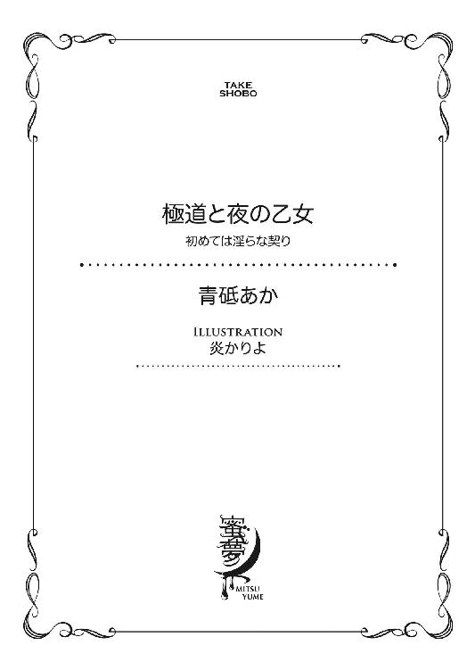
この作品は縦書きでレイアウトされています。
また、ご覧になる機種により、表示の差異が認められることがあります。
一部の漢字が簡略字で表示されていることがあります。
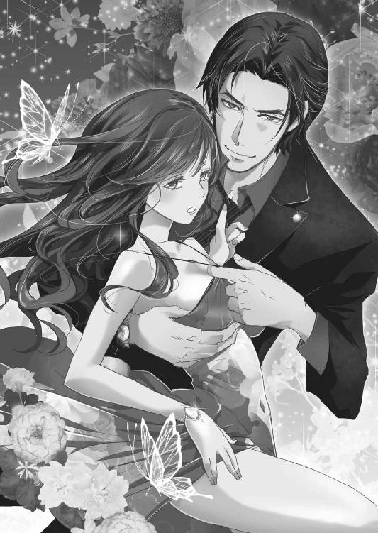
イラスト／炎かりよ
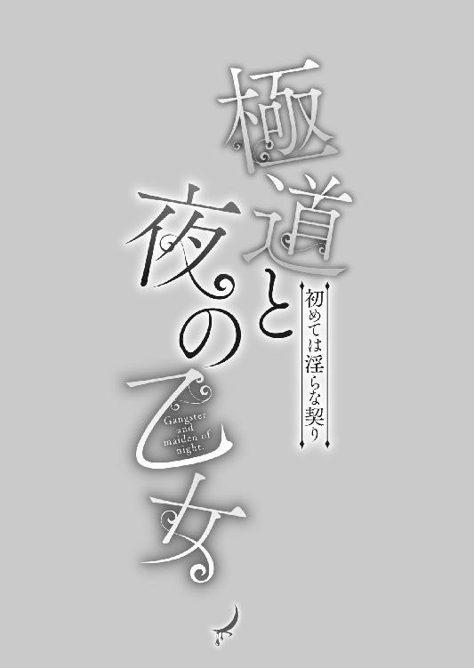
１
車が乱暴に動きだし、塞がれていた口を解放される。車内には、耳障りな音楽が大音量で流れていた。その重低音に負けないように、佐藤美月は声を張った。
「ちょっと、どういうつもり！」
ワゴン車の後部座席に引きずりこまれた美月は、内心の恐怖を綺麗に押し隠し、乱れた夜会巻きに引っかかっていたコームを抜き取る。もともと栗色で天然の柔らかいウェーブのかかった髪が、下着で寄せられ持ち上がった胸の谷間にふわりと弾むように落ちた。
車内の男たちの視線がいっせいに集まる。前を向いていた運転席の男の目も、バックミラー越しに美月にそそがれる。
男たちは合計で六人。後部座席の美月の両脇に一人ずつと、二列目シートに二人。運転席と助手席の二人だ。それぞれ黒を基調にしたアウトロー系のファッションをしている。肌は日焼けし、髪は色を抜いたりラインの剃りこみで柄を入れている者など、見た目で他者を威圧しようとしている品のない身なりだ。要は中身で勝負できないから、威嚇してみせているようにしか美月は感じなかった。
そんな彼らを冷めた目で見回す。格好は様々だが、てらてらした素材のジャケットやジャージの下に、同じ柄のＴシャツかタンクトップを着ていた。
目隠しされた女神が、手に天秤と剣を持った姿がグラフィティ風に描かれている。
「あなたたち、レークスね」
美月の言葉に、二列目シートに座っていた、ボディピアスをあちこちにつけた男が肯定するように肩で笑った。にやけた表情に知性はなく、ぎょろぎょろした目は血走っている。狂気をはらんだ雰囲気に、良くない薬でもやっていそうだと思った。
「ああ、そうだ。総長の命令で、アンタを連れていく」
返事をしたのは助手席の眼鏡の男で、スマートフォンを弄る手には指輪やブレスレットのシルバーアクセサリーがたくさんついている。男性ファッション雑誌によく載っているデザイナーズブランドで、シルバーだが高価格帯なアクセサリーだ。
着ている服もだらしなく着崩してはいるが、質は良い。他のメンバーも同様で、安っぽい雰囲気に反して、身につけているものは高級品ばかりだ。
キャバ嬢として働くようになってから、美月は男性の服装や持ち物で値踏みできるようになっていた。
「レークスの総長？ そんな人が私になんの用なの？」
美月は眉間に皺を寄せる。今までレークスに関わったことはない。総長なんて危険な人物に会った覚えもなかった。
「なにって、アンタがあんまり袖にするからだよ。早いとこ誘いに乗ってれば、こんなことにならなかったのになぁ」
眼鏡の男の言葉に、ある人物の顔がぱっと浮かんだ。
尊大な態度で、どこか人を小馬鹿にしたような男。頭も良く、統率力もあり、カリスマ性もあるのだろうが、底の浅さを感じる人間性で、美月は好きにはなれなかった。
その男に、前からしつこく言い寄られている。
「もしかして......盛岡さん？」
肯定するように、眼鏡男が口の端をくっと吊り上げる。それから、美月に背を向けスマートフォンを耳に当てた。
盛岡重法は、美月が働いているキャバクラ店ノーブルの客で、よく指名をしてくれる上客だ。彼は二十四歳の自分より三歳年上の飲食業経営者だと名乗っていた。
だが、本業以外に半グレ集団のリーダーをしていると、同僚のキャバ嬢が噂しているのを小耳に挟んだことがある。
半グレというのは、元暴走族が多く、そのＯＢなどで構成された、暴力団に所属せずに犯罪などを繰り返す集団のことだ。普段は会社員や飲食店経営などで生計を立てている者もいるが、振り込め詐欺や闇金融、薬や危険ドラッグ、その他色々と社会の闇に関わる仕事で利益を得ている者が多い。だが、暴力団に籍を置いていないゆえに、暴力団対策法の適用がされず、警察でも実態をあまり把握していない集団だ。
しかも暴力団のように組織化されておらず、メンバー同士の繫がりはとても緩い。そのせいで、捕まえてもそれはトカゲの尻尾でしかなく、警察が黒幕の正体を摑むのは容易ではなかった。
レークスはその半グレ集団の中でも、東京を中心に関東を活動範囲としている。
「どこに連れていくつもり？」
「あ、総長ですか。ルナちゃん捕まえましたので、そっちにこれから向かいます」
美月の問いに、誰も答えなかった。代わりに、スピーカーの音量が絞られた車内に眼鏡男の声が響く。ルナは、美月の源氏名だ。
「はい、はい......あと、十五分ぐらいでそちらに着くと思います」
眼鏡男は電話越しにへこへこと何度も頭を下げ、背中を丸める。いきがっている格好とは裏腹の、まるでサラリーマンのような態度がおかしい。けれど美月は、笑えなかった。
まさか彼がレークスの総長だなんて......。
知っていたら、もう少し対応の仕方も考えた。噂はしょせん噂でしかないと思い、誘いを断っていたのを後悔する。怒りを買うような断り方はしていないが、誘拐するぐらいには苛立っているということだ。
美月は怯みそうになる気持ちを奮い立たせるように、しゃんと背筋を伸ばし、革張りのシートの上で足を組む。帰宅する客を送った後、店の外で車に引きずりこまれた美月は、仕事着のロングドレスのままだ。スリットの入ったスカートの裾が流れ、大振りなフリルの間からすらりとした細い脚がのぞく。
再び、男たちの熱い視線が集まる。ねっとりとした、絡みつくような熱を帯びている。その欲にまみれた複数の熱が、美月の肌の上を這い回る。
かき上げた髪を耳にかけ、美月は丸くて白い膝を見下ろす。見なくてもわかる。男たちの目が、飢えた獣のようにぎらぎらしていることが。
普通の女なら、この状況に怯えただろう。だが、昔から美しく人々の注目を受けることの多かった美月にとっては、慣れたものだった。むしろ、男たちから向けられる欲望を、楽しむ余裕さえ生まれていた。
ああ......気分がいい。
美月はベビーピンク色のグロスを引いた唇の端を、にいっと吊り上げる。そしてゆっくりと顔を上げ、その場を支配する女王のように艶然と微笑んだ。
「彼がレークスの総長だったなんて、驚いたわ。そうならそうと、早く言ってくれれば良かったのに」
美月が戻ってこないことに、今頃店は大騒ぎだろう。警察に通報されているかもしれない。けれど、この状況で他人の助けなど当てにならない。いつだって、自分を救うのは自分だけだった。
そしてこの場を乗り切れるだけの能力が、美月には備わっていた。
「盛岡さんに会えるのが、楽しみ」
蠱惑的な甘い声を意図的に発する。唇を震わせ、吐息に熱を乗せ、ちろりと舌先をのぞかせる。カールさせた長い睫毛を上下させると、黒目がちな瞳は自然と濡れ、妖しくきらめいた。
美月は自分の容姿が相手にどういう影響を与えるか、熟知している。この美しい顔が見る者の洞察力を鈍らせ、甘い声と言葉が人を惑わし、判断力を狂わせることを。
車内の淫猥な空気が濃度を増し、肌をちりちりさせる緊張感に満たされる。雄の欲望を刺激された男たちが、内心で舌なめずりしているのが聞こえるようだった。
欲に囚われた雄を惑わし、思い通りに動かすことは、昔から美月の得意とするところだった。上京し、キャバクラで働くようになってから、その手管はさらに磨きがかかった。
美月は悠然と足を組み変え、シートの背もたれに身を預ける。
今、この場は自分のものになった。囚われてはいるが、彼らの欲望を握っているのは美月だ。けれど彼らは、総長がご執心の美月に手をだすことはできない。その忠誠心がどれほどのものなのかはわからないが。
美月は自然な動作で髪をかき上げ、耳で揺れていたダイヤのピアスを秘かに外して左手に握りこんだ。そして艶やかな唇をゆっくりと開いた。
「ねえ、彼のところにいく前にほしいんだけど。アレ、持ってるんでしょ？」
「前の車、様子がおかしいですね」
運転手を務めていた若い舎弟が、訝しげな声を漏らす。後部座席に座っていた桐生泰孝がつられて前方に視線をやると、ワゴン車がくねくねと蛇行し、今にも対向車線に飛びだしそうだった。
十二時も回った深夜。繁華街から少し外れた道路を走る車はほとんどない。昼間だったら、とっくに事故を起こしている運転だ。
「こっちを挑発してんのかぁ？」
助手席に座る、少し血の気の多い舎弟が身を乗りだす。
「違うんじゃないですか。あれ、挑発というより......事故りそうっすよ」
減速しながら、若い舎弟が淡々と返す。その横顔は冷静そのもので、額に青筋を浮かべた隣の中年の舎弟とは大違いだ。
「どっちみち迷惑な野郎じゃねぇか。ぶつかったら、どう責任とるつもりだよっ」
まだ事故を起こしてもいない上に、顔も合わせていないワゴン車の相手に中年の舎弟は喧嘩腰だ。
「運転手の具合が悪いんじゃないっすかね？ 酔っ払い？」
「だったら、とっとと路肩に停車しろってんだ。そしたら文句の一つも言ってやる」
「文句だけですますつもりですか？」
若い舎弟の声が笑っている。中年の舎弟も、後輩の軽口ににやりと返す。
そういえば、この二人は仲が良かった。性格は真逆で年も離れているのに、気が合うらしい。良い組み合わせだと思いながら、泰孝はシートの背もたれから身を起こした。
「なあ、自然な感じにぶつかることはできるか？」
ちょっとそこまで買い物にでもいってきてくれ、とでも言うような軽い調子だった。
「ちょこーっと、かするぐらいでいい。因縁つけるきっかけ作ってくれないか」
ぎょっとしたように、二人が振り返る。さっきまで威勢の良かった中年の舎弟が、毒気を抜かれた様子で口をぽかんと開いていた。
「おいおい、前見て運転しろよ」
運転手の若い舎弟が、慌てて視線を戻してハンドルを切る。前をいくワゴン車は、相変わらず危なっかしい動きをしていた。
「珍しいっすね、桐生さんがそんなこと言うなんて。相手はカタギだっていうのに」
中年の舎弟はどこか困惑気味に、眼鏡越しの目をきょときょとさせる。暴力団員でありながら、暴力的なことを好まない泰孝の発言に驚いているのだろう。
泰孝は表向き、ネットレンタル会社ＴＲ．ｃｏｍ（ティーアールドットコム）の社長だ。実態は暴力団に資金を上納するフロント企業で、企業舎弟とも言う。
暴力団対策法ができてから、みかじめ料などの従来の資金調達が困難になり、法の目をかいくぐるために生まれたものだ。暴力団の構成員が従業員を務める会社もあるが、暴力団との関与を臭わせないため、一般の従業員を雇う会社が最近は増えた。
ＴＲ．ｃｏｍも従業員は一般人を雇い、表面上は普通の企業のように装っている。ただ、社長である泰孝も含め、幹部やその周辺には数名の暴力団員が含まれていた。よくインテリヤクザと言われる部類の連中だ。
そのため、暴力団の構成員といえども、泰孝は法律に触れるような問題を起こせない。スキャンダルになれば、会社のイメージが悪くなる上に、警察にも目をつけられる。
そういうわけで、泰孝の舎弟たちに兄貴とは呼ばせていない。昼間は一般人のふりをして社長業をしているからだ。うっかり兄貴と呼ばれ、普通の人にその筋の人間だと思われると面倒だ。舎弟たちには、「社長」か「桐生さん」と呼ぶように言ってある。
それぐらい気を使って普段はヤクザであることを隠しているのに、わざとぶつけろと物騒なことを言ったのにはわけがあった。
「よく見ろ。車にステッカーが貼ってあるだろう」
泰孝が指さすと、中年の舎弟が前を向く。速度を少し落として運転してた若い舎弟が「あっ！」と声を上げた。
「あれ、レークスですね。後部座席の窓に、あいつらがよく着てるＴシャツと同じ柄のステッカー......気付かなかったなぁ」
「桐生さん、よく見えますね。オレには、見えないっすよ」
中年の舎弟は目を細めて身を乗りだしている。
「うん。俺、視力いいんだ。将来、老眼が怖いよ」
おどけて言いながら、泰孝はシートに背を戻した。
「ちょうどいいから、車かすらせて因縁つけて総長さんのとこに乗りこもう。ちょうどこの車、俺のでも会社所有のでもないし」
泰孝はＴＲ．ｃｏｍの上部組織である田吹会の事務所から帰る途中だった。
組への行き来は、いつも舎弟に送迎してもらっている。事故が起きた時、自分の名や会社名がでるのを防ぐためだ。しかもちょうどよく、後ろには護衛でついてきた組の者たちが乗った車が走っている。
泰孝の言葉でだいたいのことを察した中年の舎弟が、その後続車に電話をかけ、打ち合わせを始めた。
ここ数年、関東を中心に勢力を伸ばしている半グレ集団のレークスは、関東の暴力団にとって目に余るものがあった。薬や売買春、詐欺など、暴力団と変わりない活動もしくはそれより酷いこともやっている。暴力団対策法に引っかからないからと、やりたい放題だ。そのたびに、こちらも警察から疑われ迷惑している。
田吹会の縄張りでも好き勝手に振る舞い、問題を起こしていた。組の人間と頻繁に小競り合いにもなっている。
そして組内で、そろそろお灸を据えるべきだろうという話になっていた矢先の、前を走るワゴン車の動き。こちらの車とぶつかってくれれば、渡りに船である。
田吹会での泰孝の地位は若中だ。次期組長候補ではないが、フロント企業の運営を任される幹部の立場だった。
その泰孝が乗った車に、相手方の過失で接触された。それもレークスのメンバーの車となれば、あれこれ因縁をつけるきっかけになる。そこから追いこんでいって、トップの総長を締め上げることもできるだろう。
「迎えの車も手配できました。その車でご自宅にお帰りください。後は、こっちでやっときますんで」
電話を終えた中年の舎弟が、泰孝を振り返る。
うまくワゴン車と接触してから、揉めることになるだろう。そこに泰孝は参戦できない。中年舎弟はそれを見越して応援を呼んだという。それと、ワゴン車のレークスメンバーに追いこみをかけるための人員も。
「じゃあ、ちょっとやっちゃいますか」
若い舎弟の声が、心なしか弾んでいる。一瞥した横顔が、いつもの無表情と違い、少し楽しそうに見えた。淡々としていて熱くなることのない、いまどきの若者かと思っていたが、やんちゃな面もあるようだ。
泰孝はおもむろにシートベルトを締めると、片手を上げて「やれ」と合図を送った。
だが、こちらから仕掛けるまでもなく、減速したワゴン車のほうから近付いてきた。速度を上げていたこちらの車に接触する。
軽い衝撃が泰孝の背筋を揺らす。そしてもう一度ぶつかり、大きく車を揺らすと、目の前のワゴン車はスピンして路肩のガードレールに衝突した。
上がる大きな音と同時に、若い舎弟が急ブレーキをかける。体が前のめりになり、腹にめりこんだシートベルトに泰孝は「うっ」と潰れた声を漏らした。
「いててっ......大丈夫ですか、桐生さん？」
ハンドルで額をしたたか打った若い舎弟が、こちらを振り返る。それに大丈夫だと頷き返す。中年舎弟は、ダッシュボードに飛んでしまった眼鏡を拾い上げていた。
ばんっ！ と、大きな音が外でした。それに続いて、女の叫び声だ。
勢いよく開いたワゴン車のドアから、キャバ嬢と思われるドレス姿の女が転がるように降りてきた。それを追いかける男の手を振り払い、狂ったような奇声を発したり、笑い声を上げる。
明らかに正気ではない。追いかけてきた男も困惑しているようだ。続いて降りてきた別の男は、女と同じく狂ったように笑っている。
「あー......あれ、やってますね」
「脱法ハーブあたりか？ たしか、レークスがうちのシマで売買してたな」
中年舎弟が苛立たしげに舌打ちし、シートベルトを外す。
「女性のほうですが、あれ、ＯＤ入っちゃってますね」
ＯＤ──オーバードーズは薬の過剰摂取か、体質に合わないせいで起こる症状のことだ。症状は様々で、彼女の場合は脱法ハーブで気分が良くなるのを通り越し、攻撃的になっているのだろう。爪が割れて血がでるのも構わずに、女は笑い転げながら、捕まえようとする男を殴っている。
「どっかのキャバ嬢さらってきたんですかね？」
「みたいだな。車内でお楽しみってとこで、薬使ったら女がＯＤ起こして暴れたんだろう」
「だからあんな運転になってたんっすねぇ」
呑気な調子で呟きつつ、若い舎弟もシートベルトを外す。
中年舎弟が助手席から降り、わざと大きな音を立ててドアを閉めた。男たちの視線がこちらを向く。女はその隙に男の手を逃れ、裸足で走りだす。目的はレークスなので、関係ないだろう女に舎弟二人は興味を示さない。
だが、最後に車から降りた泰孝は気になった。よろけつつ近くの公園に向かって走り去る女を目で追う。
さっきまで狂ったように叫んでいたのが噓のように、女は静かだ。それに一瞬だったが、逃げる間際に泰孝たちを一瞥した女の目は正気なように見えた。鋭く澄んだ、凛とした瞳をしていた。
あれが脱法ハーブでＯＤを起こし、正気を失っている人間の目つきには見えなかった。
自分たちの車に続いて、停車した後続車から降りてきた組の人間に、泰孝は女を追いかけると言った。代わりにいこうと言う彼らを制し、後を任せて走りだした。
「はっ、はぁ......うっ」
目が回る。公園の外灯がいくつにも分裂して見えて眩しい。
頭はぼうっとして、少しでも気を抜くとどこか遠くへ連れていかれそうになる。そのたびに、思いだしたように左手を握りしめる。
じんっ、とした痛みが手の平の中心から広がり、美月をこちら側の世界に繫ぎ止めた。ふらつく足で公園の水飲み場に向かいながら、案外うまくいったとほくそ笑む。
アレがほしいと言った後、彼らは無言で目配せし合った。どうする？ とでも言うように。美月はそこで畳みかけるようなことはせず、彼らがどうでるのか待った。
最初に言葉を発したのは、目が血走ったボディピアスの男だった。興味があるのかと聞かれ、アレなら自分もしたことがある。好きなんだと告げた。もちろん、アレが実際にはなにかなんて知らなかった。
ただ噂で、レークスが脱法ハーブなど、危険ドラッグの類を売買していると聞いていた。それを利用して、ここから逃げようと思いついたのだ。
それから美月は、アレの常習者だと思われるボディピアス男に話を振った。これから総長に会う前に気持ち良くなりたい。実はとても緊張しているのだ。それに、これからセックスをするならアレをやっておいたほうが気持ち良くなれる。だからお願い......と。
助手席の眼鏡の男は、難色を示していたが、ボディピアス男は奇怪な笑い声を上げながら、いいじゃないかとアレ──脱法ハーブを渡してくれた。それから後は、つられるようにメンバー全員が脱法ハーブに手をだしていった。運転手までも。
そのせいであの危なっかしい運転になり、後続車と接触してしまった。しかも都合よく、レークスのメンバーは後続車の人間たちに足止めされていて、美月を追いかけてこない。
あれはきっと暴力団関係者だろう。彼らは美月になど用はないはずだから、捕まえられることはない。そうであってほしいと願いながら、水飲み場の縁に手をかける。石がひんやりと冷えていて気持ちがいい。
痛みで痺れ、感覚が鈍くなった左手で蛇口をひねる。割れた爪先だけでなく、手の平からも血が滴っていた。
噴水のように上がった水が、美月の頰を打つ。石の受け皿に流れ落ちた水に、血の赤がにじむのをぼんやり見下ろした。
体が火照っていた。噴き上がった水が当たる頰は、熱を持ったようにじんじんする。見ないでも頰が真っ赤に上気しているのがわかった。そんなに走ってもいないのに、なぜか息も荒い。
夏も終わりかけのこの時季、夜になると空気はひんやりしている。けれど昼間の熱気に温められ水道管を伝ってでてくる水は生温い。白湯といってもいいぐらいの温度で、塩素の臭いがむわっと鼻を突く、けっして美味しい水ではない。
なのに熱を持った唇をその水で撫でられると、とたんに渴きを感じた。まるで砂漠を歩き続けた旅人のように、美月は貪るように水を飲んだ。
お腹が少し張るぐらいまで飲んで、やっと落ち着きを取り戻す。それでもまだ、喉の奥がひりひりと乾いているような感覚がした。
なにかがおかしい。
ワゴン車の中で吸った、脱法ハーブで得られる高揚感とは違うなにかのように感じられた。だが、なにが違うのかわからない。脱法ハーブもそうだが、こういった薬を使用したのは初めてだからだ。もちろんＯＤでもないはず。
レークスのメンバーは美月がＯＤを起こしたと勘違いしていたが、あれは演技だ。ＯＤを起こしたふりをすれば、美月を一旦落ち着かせるために、盛岡のマンションにいく前に停車するだろう。その隙に逃げようと画策していた。
なので実際はＯＤを起こすほど脱法ハーブは吸っていない。怪しまれない程度に、一呼吸ほど吸いこんだぐらいだった。
美月は濡れた唇を右手の甲で拭う。ふと、ぎゅっと握りしめたままだったその手を開く。
煙草のように紙で巻かれた脱法ハーブが、手の中でくしゃくしゃに丸まっていた。逃げる時、持ったままでてきたようだ。無意識のうちに強く握りこんでいたらしいその吸い殻は、半分も減っていなかった。美月はしゃがむと、水飲み場横の排水溝に吸い殻を押しこんで捨てる。
それにしても体が熱い。ほんの少しの量で、こうなってしまうものなのか。どれぐらいしたら落ち着くのか。放っておいて、治るものなのか。
次々と浮かぶ不安に、美月は重い溜め息を漏らす。今の自分の立場では、問題を解決するために病院にいくことも、警察に助けを求めることもできない。
四年前に起こした事件のせいだ。あともう少しで、執行猶予の期間が終わる。その前に問題を起こせば、実刑が科せられることになる。それだけは避けたかった。
ともかく、こんなところにずっとはいられない。不審者として通報でもされたら困る。お金もスマートフォンも持っていないので、一旦、店に戻ろうと体を起こす。
「そういうことか。吸ったふりして、ＯＤの演技をして逃げたってことか。機転の利く女だな」
聞いたことのない、柔らかいけれどどこか重々しい声音に驚いて顔を上げる。いつの間に忍び寄ったのか、美月より頭一つ分背の高い男が立っていた。高級そうなスーツに包まれた体は、見た目よりがっちりしているように感じた。
年は三十代前半ぐらいだろうか。だが、その体から放たれる雰囲気には老成した落ち着きと威圧感が感じられ、もっとずっと年齢を重ねているようにも見える。
顔はまあまあ整っていて、相手に警戒されない柔和な表情を貼りつかせている。だが目には、隠しきれない冷徹さをたたえていた。
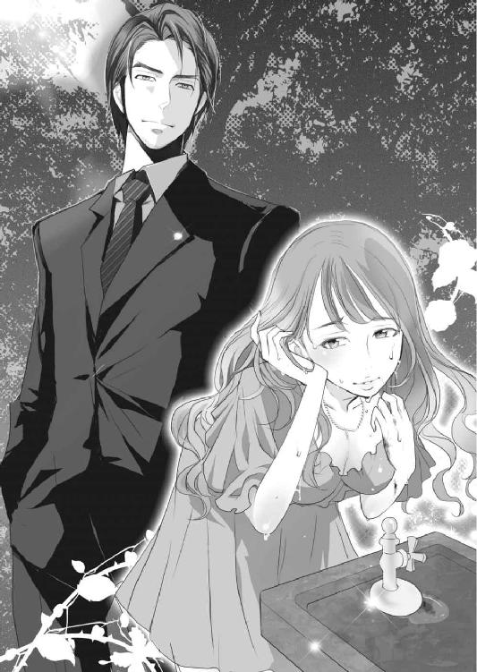
背筋がぶるりと震える。
「あ、あなたは......」
さっき暴力団関係者と思われる、黒塗りのベンツから降りてきた男の一人だとすぐに気付いた。
胃がせり上がってくるような緊張感だった。レークスのメンバーには感じなかった、本能的な恐怖。この男に、噓や演技、誤魔化しは通じない。危険だと、頭の奥で警笛が鳴るのに、足が凍りついたように動かなかった。
「へえ、こりゃまたすごい美人だ。キャバ嬢なんてしないで、芸能人にでもなったほうが稼げるんじゃないか？」
目の前が陰った。覆いかぶさるように顔をのぞきこんできた男に、一歩下がる。すぐに水飲み場の縁が太腿に当たった。
「それにしても、よく正気でいられるな。ちょっとは吸ったんだろ？ しかも演技までして逃げだして。どんなメンタルしてんだか。女にしとくのもったいねーな」
目は笑っていないのに、口調は実に愉快そうだった。そのギャップがまた恐ろしい。
「......なんの用？」
声を絞りだす。思ったより冷静で強気な声にほっとする。相手に怯えていると見られたくなかった。
やっと逃げられたのに、今度は暴力団に捕まるなんて洒落にならない。レークスより性質が悪いだろう。
強く睨みつけるように見上げると、男はおどけた仕草で肩をすくめる。まるで威嚇する子猫を相手にするような態度に、美月は苛立った。
「用がないなら、そこをどいて。邪魔よ」
男に立ち向かうように一歩踏みだす。力を入れても、体がよろめいてしまうのが悔しい。
だが、腹が立ったおかげで、頭の霞みが少し晴れたような気がした。美月は男の横をすり抜け、公園の出入り口に向かおうとした。
「用ならある」
後ろから強い力で左手首を摑まれ、引き寄せられる。手の平に走った痛みに呻くと、前に回りこんだ男が少し腰を屈めて美月に視線を合わせた。
闇のように暗い双眸に見据えられ、再び美月は動けなくなった。
「このまま警察にでもいかれたら困る。これからさっきの奴らを締め上げるからな」
やっぱり暴力団関係者だ。警察に通報されると困ることが多いのだろう。
「なんのこと？」
すっとぼけてみるが、男には通用しなかった。
「レークスだよ。あいつらの車から降りてきただろう」
「知らないわよ......正義の法律関係者のことなんて」
関わり合いになりたくないので、煙に巻いてやろうと斜め上の返答をしてやる。脱法ハーブでおかしくなっていると思われたらそれでいい。
だが、男はひゅーと口笛を吹いて笑った。
「やっぱり知ってるじゃねえか。レークスはラテン語で法律。あいつらがグループのシンボルに使ってる女神はユースティティア。ラテン語で正義だ」
まさかそんな答えが返ってくると思っていなかった美月は、面喰らう。博識だなと冷やかす男に、こっちこそ博識なヤクザに驚いていた。
「それにしても笑えるよな、半グレ集団のくせして法律と正義だなんて。何様のつもりだってんだ」
男の皮肉に相槌を打つ余裕もなかった。それよりも、こんな頭の回転の速いヤクザからは、早く逃げなければと思う。
「......今夜のこと口外しないから、安心して。私も警察の厄介にはなれない身なの」
本当のことだったが、男は信じられないとでも言うように眉をひそめた。
「絶対に通報しないし、全て忘れるわ。だから放して。解放してくれないなら、叫び声を上げるわよ」
人が来たら困るだろうと、暗に含ませて言うが、男は動揺する素振りもない。
「お前が言わなくても、そんな状態のお前を見て、身近な人間が通報するかもしれないだろう。完全に口止めできる確証がない限り、解放はできないな」
「どういう意味？ 確証って、身分証でも見せろってこと？」
「そうだな。それもある」
「冗談じゃないわ！」
ヤクザに自分の個人情報を晒す馬鹿はいない。身元をがっちり摑まれ、今後つけ入られることになる。
美月は男の手を振り払おうと、左腕を強く引く。とたんに手の平が鋭く痛み、目の前が白む。強い痛みに吐き気がした。
「おい、大丈夫か？」
口元を押さえてうつむく美月に、男の心配そうな声が降ってくる。そして、手の平で揺れるきらめきに気付いた。
「なんだこれ？ うわっ......これで正気保ってたのか。とんでもない女だな」
男は摑んだ手首を持ち上げ、手の平をのぞきこんでわざとらしく顔を歪めた。
美月の手の平には、ダイヤのピアスが刺さっていた。針は深々と根元まで埋まっていて、断続的に鋭い痛みを生む。
「手の爪も酷いもんだし。これ、きちんと手当てしないと痕が残るぞ。キャバ嬢なんてしてんだから、新しい爪が曲がって生えてきたら困るだろう」
さっきまでの威圧感のある声ではなく、どこか呆れたような優しい声音だった。痛みで意識が朦朧としてきた美月は、その優しさに縋りたくなる。
「悪いこと言わねぇから、うちで手当てさせろ。口の堅い医者がいる。そうしたら、解放してやるよ」
親切な申しでだったが、騙されてはいけない。優しくしてつけ入る。それがヤクザのやり口だ。
「......けっこうです。自分でどうにかしますから」
「おいおい、人の親切は素直に受けるもんだぜ」
ふっ、と鼻先で笑う音が聞こえたその後。なんの前触れもなく、男が手の平に刺さっていたピアスを一気に引き抜いた。
「──ッ！」
刺さっていた時とは違う、脳天を突き抜けるような痛みが体を駆け抜ける。声にならない悲鳴を上げ、美月はよろめいた。その腰を、男のがっしりした腕が支え、胸元に抱き寄せる。
シャツ越しに、硬い鋼のような胸板が頰と胸に触れる。圧倒的な肉体差に、自分がか弱い女なのだと一瞬で思い知らされた。
もし健康な状態であっても、この男から逃げるのは無理だと悟る。
手の平に残る痛みの余韻と、敗北を感じ取った脱力感で、体の緊張がほどけて気分が悪い。胸を圧迫し、せり上がってくる嘔吐感を止めることはできなかった。
「うっ......だめ......」
小さくそう零し、とっさに男の胸を押す。だが、遅かった。
喉の奥から噴きだした吐しゃ物は、男の高そうなスーツを汚し、地面に落ちる。逃げそこねた男の革靴の上にもぼたぼたと振りかかった。
美月は体を折るようにしてえづきながら、自分の吐しゃ物で汚されていく高級な靴を見つめていた。
これから、この男にどんな目にあわされるのだろう。服と靴を弁償させられるのはしかたがないだろうが、それをネタに脅され揺すられ、風俗で働かせられるかもしれない。それよりもっと、想像もつかないような酷い目にあうかもしれなかった。
けれど今は、美月が男を酷い目にあわせている。それが痛快だった。どうせ酷い目にあうなら、これぐらいの仕返しの先取りをしておいてもいいだろう。
頭上で「うえっ......」と男の引き気味の声が聞こえる。素の声だ。威圧感を取り繕うこともできないのだろう。
その男が離れていかないように、美月はスーツをきつく握りしめ、胃の中のものを全て吐ききった。
「......ざまあみろっ」
そう捨て台詞を最後に吐き、清々しい気分で美月は意識を手放した。
２
瞼を開くと、知らない部屋のベッドに裸で寝かされていた。間接照明だけついた部屋は淡い橙色の光に優しく包まれ、普段ならば再び眠気を誘われただろう。
けれど美月は息苦しさに眉根を寄せ、渴きを訴える喉を押さえる。体の熱さに朦朧としながら起き上がり、あたりを見回した。
部屋はマンションの一室のようだった。大きな掃きだし窓の外には、高層ビル群の夜景が広がっている。都心からそう遠くない場所にある、高層マンションだろう。
ともかく、なにか飲み物がほしい。
喉が渴いて苦しい。それに体の火照りは、意識を失くす前よりも酷くなっていた。
熱を持った肌にシルクのシーツの冷えた感触が気持ち良い。そして素肌を撫でるブランケットの肌触りに、体がびくんと跳ね、喉の奥が甘く震えた。
「なに......これ？」
はぁ、と漏れる息が甘い熱を持っている。まるで愛撫されて感じたみたいだ。
美月が困惑していると、寝室のドアが開いた。
「あ、やっと目が覚めたか」
顔をのぞかせたのは、バスローブ姿のあの男だった。美月は慌てて、ブランケットを体に巻きつける。繊維が肌をくすぐる感触に、変な声が漏れそうになった。
ぞくぞくする背筋に顔をしかめ、唇を嚙む。
「そんな目で睨むなよ。まだ、なにもしてないぞ」
「......まだ？」
これからなにかするつもりなのか。それで目覚めるのを待っていたのだろうか。そもそもなぜ裸にされているのだろう。
美月は不信感いっぱいの表情で、ベッドの上で後退する。
歩み寄ってきた男は、嫌そうな顔をして言った。
「ゲロ吐きかけて、捨て台詞まで吐いて意識失った女に欲情するかよ」
失神する前のことをやっと思いだした美月は、表情を引きつらせた。
「脱がせたのだって、ゲロまみれだったからだ。髪にまで絡んでてな、洗うの大変だったんだぞ」
「あ......洗ったのっ？ あなたが？」
「他に誰がいる。女を呼ぶこともできるが、意識のない人間を洗うのは重労働だぞ。普通の女の力じゃ無理だ」
だから自分が洗ってやったんだと男は言う。返す言葉もない美月がうなだれると、包帯の巻かれた両手が目に入った。
「覚えてないのか？ 医者を呼んでその手も手当てしてもらったんだが」
そういえば、おぼろげながら記憶がある。剝がれた爪先や、ピアスが刺さっていた手の平を消毒され、痛みで何度も意識が戻った。その時、この男以外に白衣を着た初老の男性がいた。なにか美月に話しかけていたが、なにも覚えていない。
相変わらず体は変に火照っていて、そこに治療される痛みが加わり、気分が悪いなんて言葉で表せるものではなかった。まるで熱に浮かされ乗り物酔いを起こし、拷問を受けているような感じだった。脱法ハーブのせいで、痛覚やら色々な感覚が鋭敏になっていたのかもしれない。その治療の合間にも、嘔吐したような気がする。
「お前、先生にもぶちまけてたぞ」
「......申し訳ございません。ありがとうございましたって、その先生に伝えておいて」
この男はともかく、治療してくれた医者には心から申し訳ないと思った。
「鎮痛剤を飲ませたから手の痛みはもうそんなないだろうが、体のほうはどうだ？」
ベッドに腰かけた男が、おもむろに美月の顔に手を伸ばす。よけようとするが、熱っぽい体は動きが緩慢で、簡単に顎を摑まれる。とたんに肩がびくっと跳ね、震える唇から妙に甘い声が漏れた。
「やっぱり......なにもしないで、抜けるわけがないか」
男のかさついた指に触れられている場所が疼く。その疼きが体の芯を痺れさせ、美月を動けなくさせた。
「なに、これ......っ？」
声は甘く震え、色っぽくかすれていた。まるで男を誘うような、媚びた声だ。
そんなつもりはないのに目が潤み、吐きだす息がいやらしく乱れる。胸の奥が、どくんどくんと淫らに脈打つ。名前も知らないヤクザの男に、強く惹かれる。それも性的な意味で......。
美月は無意識に身を乗りだしていた。男の指にもっと触れてほしくて、さっきは逃げたというのに今は顎を突きだしにじり寄った。
「......いッ！」
ベッドについた手に鈍い痛みが走る。あっという間に正気に戻り、青ざめた。しかし、体の芯は火照っていて頰も上気したままだ。
そんな自分の反応に表情を凍りつかせ、男から慌てて離れる。だが、そんな美月を嘲笑うように追いかけてきた男の手が、今度は頰を撫でた。
「あぁ......ンッ」
ぞくっ、と背筋が甘く粟立ち、脚のつけ根がじんっと痺れる。
性的な意図を持った手が、頰を包みこむのが憎らしい。憎らしいのに、体はその誘惑に逆らえず、頰を大きな手にすり寄せてしまう。漏れる吐息も、いやらしく震えている。
「......いやっ、やめて」
なけなしの理性で男を睨みつけ抵抗する。それを面白がるように、男の手が首筋へと撫で下ろされた。
「ひぅ......っ！」
体の中心に電流が駆け抜けたような感覚がした。ただ触れられているだけだというのに、これはどういうことなのだろうか。
美月は包帯の巻かれた両手を、ぎゅっと握りこんだ。鎮痛剤のせいであまり痛みはないが、それでもわずかな疼痛が美月を少しだけ正気に引き戻す。
「ちょっと、これ......なんなよ！」
「催淫効果だ」
男が楽しげに笑った。
「まさか......」
「俺が盛ったんじゃねえよ。お前が吸った脱法ハーブの効果の一つらしい。今までは手の痛みで快感は散ってたみたいだが、鎮痛剤がきいてきたせいで、そっちが顕著になったみたいだな」
脱法ハーブで性的な興奮が高まるという話は聞いたことがあった。催淫剤的な働きをするものがあっても、不思議ではない。
「鎮痛剤を飲ませるのに、なにか副作用が起きたら困るからな。お前になにを吸わせたのか、捕まえたあいつらに聞いたんだ」
あいつらというのは、レークスのメンバーだろう。
「お前が吸ったハーブにだけ、催淫効果が入ってたそうだ。総長に献上する前に、よりよい状態にしておこうっていう魂胆だったらしい」
騙したつもりで、裏をかかれていた。どうにか逃げられたからいいものの、失敗したらどうなっていたか。
そして目の前の男を見上げ、戦慄した。レークスからは逃げられても、この男からのがれることはできない。
「それでその催淫効果なんだが、ほっといても沈静化しないらしい。男に抱かれないと無理なんだそうだ」
効果をなくす方法に美月は絶望した。
顔をしかめ、なるべく男と距離をとろうと身を引く。だが、頰を撫でる手は離れていかなかった。
「おい、そんな警戒するな。なにもしないから」
そんな言葉、にわかに信じられなかった。なにもしないと言うなら、今すぐ触れるのをやめてほしい。でないと、快楽に流されて男に縋ってしまいそうだった。
「お前、付き合ってる男いないのか？ いれば、ここに呼んでやるよ。そいつに抱いてもらえ」
「......いないわよ」
つい、本当のことを言っていた。言ってから、相手がいると言って家に帰してもらえば良かったと思う。甘い疼きのせいで、頭が回らない。
「本当か？ 俺に知られたくないから噓ついてるんじゃないだろうな？」
「いないって言ってるでしょ！」
恋人がいれば、効果をなくす方法に絶望なんてしなかっただけに、しつこく聞かれて腹が立った。
だが、なだめるように顎の下を指先で撫でられると、気持ち良くてたちまち刺々しい心が萎えてしまう。まるで猫のような扱いにムカつくが、それもまたすぐ卑猥な痺れにさらわれていく。
「じゃあ、好みの男はいるか？ お前が気に入る男を用意してやってもいい」
「なにそれ......」
なぜそんなに親切なこと言うのだろう。快楽で霞みがかった頭では、男の裏を読むこともできない。
「後々のことを考えると、お前をこのまま放りだすわけにはいかないからな。だから、できる限りのことをしてやろうって思ってるんだよ」
ほら、好みの男のタイプを言えよ、と男が続ける。美月は唇を嚙んで、男から目をそらした。
「どうした？ なんかあるだろ？ それとも、好きになった男とじゃないと、そういうことはできないとか言うつもりか？」
そんな仕事をしていてと、暗に言われているようで悔しかった。こっちだって、簡単に言えれば苦労しない。
「まさか......処女だからなにも言えないとか？」
嘲るような笑い声に、美月の頰がかあっと熱くなった。怒りのせいではない。
その、まさかだったからだ。
子供の頃から親に、結婚相手としかそういうことはしてはいけないと。結婚するまでは処女を守りなさいと、きつく言い聞かされて育った。
美月もまた、自分を高く売るために、軽率な行動はしないで生きてきた。それが全て無駄になり、身を落とした今でも、禁を破ることができずにいた。
適当な相手ですませられるほど、自分は安い女ではない。そのプライドが、簡単に処女を捨てられなくしていた。
「......え、もしかして本当に処女なのか？」
返事のない美月を訝しんだ男が、ちょっと引き気味に言う。こみ上げてきた屈辱感に焦り、言葉が口をついてでた。
「ち、違うわよ！ まさか、そんなことあるわけないでしょ！ ただ、アンタが紹介してくれるような男なんて信用できないし。病気の心配とか、色々考えちゃって......ひゃッ」
また顎の下をくすぐられる。とたんに体から力が抜け、睨みつけていたはずの目が、とろんと潤む。
「じゃあ、俺にしとくか？」
優しくて卑猥な声が甘く鼓膜に響く。顎を引き寄せられるが、抵抗できない。
「こないだ検査して、病気はなかった。なんなら診断書を見せてもいい。これからお前の好みのタイプを探すのも手間だし、それまで我慢するのも辛いだろう？」
男の顔がキスでもするように迫ってくる。熱を持ち腫れぼったくなった唇に、その吐息がかかる。それだけで、脚の間が濡れてくる。肌が、触れてほしいと媚びるように薄紅色に染まり、産毛の先まで敏感になる。
この男にいいようにされるのは嫌なのに、体は蕩けて服従してしまいそうだった。
「で、どうする？」
欲に濡れた目をのぞきこむ男の双眸は、暗く冷たく、どこか楽しげだ。獰猛な野獣が、獲物を玩具にして嬲り殺すような目つきだった。
美月に答えを委ねてはいるが、自分を選ぶしか選択肢はないだろうと言っているような威圧感がある。
ああ、やっぱり逃げられない......。なにもしないなんて、噓だった。
美月は渴きを訴えるように、男のバスローブの袖を摑む。こんな男にと悔しく思う。けれど、この男ならいいかとも思う。
きっとどの雄よりも強い。そんな野獣に食われるなら、納得もできる。
「いいんだな？」
返事の代わりに、瞼を伏せる。今にも食いつこうとする雄の目を見ていられなかった。
怯えで長い睫毛が震えると同時に、唇を荒々しく塞がれベッドに押し倒される。恐怖と緊張が、美月の性的な興奮を異様に煽った。これが催淫効果なのだろう。
それならしかたない。全てを脱法ハーブのせいにして、男に身を任せることにする。
「ああ、そうだ。する前に、名乗っておこう」
男の名前も知らずに、抱かれようと覚悟した自分が少しおかしかった。唇が笑みの形に弧を描く。
「桐生泰孝だ。お前は？」
これから自分の処女を奪う相手の名を、胸の内で復唱し覚える。
「......ルナよ」
本名ではないとわかったのだろう。泰孝の表情が一瞬だけ硬くなるが、それ以上問いつめてはこなかった。
代わりに、再び唇が重なり口中を荒っぽく舌でまさぐられる。そこに丁寧さはなく、直に欲望をぶつけてくる。体は快楽に飲みこまれつつも、らしくもなく美月は怯えた。
口付けの合間に、つい泣き言が零れる。
「ねえ......痛くはしないで」
思いのほか弱々しい声に、驚いたように男が目を丸くする。
「当たり前だ。また、ゲロをかけられたくないからな」
そう笑い混じりに言うと、また唇が落ちてくる。だが今度は、酷く優しくて甘い口付けだった。
目覚めた時に感じた喉の渴きはもうなかった。代わりに、甘い痺れが走るごとに身の内にどろどろとした、淫らな熱が溜まっていく。それは解放されることを望んで、美月に悩ましげな声を上げさせる。
「あっ、ああぁ......いやぁっ」
泰孝の大きな手が、乳房を包みこみ揉みしだく。片方の手は脇腹から下腹へと撫で下ろし、蜜で穢れた内腿に到達する。蜜を指先に絡めた男の指が、脚のつけ根のラインを焦らすように行ったり来たりした。
電流のような快感が駆け抜け、膝が跳ねる。余韻でがくがくと足が震えた。
男の指が、もう何度も犯した蜜口へと吸いこまれる。蜜をかきだすように二本の指が動き、中を広げていく。催淫作用のせいで敏感になった体は、まるで粗相でもしたようにシーツと男の指をぐちゃぐちゃに濡らす。
「ンッ......あぁあ、もうっ。だめぇ！」
自分でもなにが駄目なのか良いのかわからない。ただ、中で渦巻くこの爛れた欲望が苦しくて、どうにかしてほしかった。
けれど泰孝は、わななく中を指で蹂躙するだけで、それ以上のものは与えてくれない。この交わりが始まってから、ずっとだ。
どれぐらい時間がたったのかわからないが、美月はもう何時間も愛撫だけされているような気がしていた。何度、絶頂を迎えたかもわからない。催淫作用で感覚が鋭敏になった体は簡単に上りつめ、繰り返し達してはすぐに次の頂きへと、男の手で押し上げられる。
甘くて、苦しい。息を吐きだすだけでも、熱を持った唇が快感に震える。淫らな熱を散らしたくて頭を振れば、揺れる髪が肌を愛撫して、よけいに乱れた。
不意に泰孝の唇が、赤く充血した乳首を包んだ。痛みに似た疼きに、美月は小さく悲鳴を上げて身をよじる。男の指を含んだ蜜口が、きゅっと締まった。
何度も嬲られた頂きは男の唾液で濡れていて、少しの刺激でも辛い。じんじんと痛んで、張りつめている。
「いやぁ、痛いっ」
執拗に舐めしゃぶる男の頭を、力の入らない手で押す。泰孝はそれを、鬱陶しそうに首を振って払う。
「噓つくなよ。違う意味の痛いだろ？」
面白がるように言うと、泰孝は舌先で転がしていた乳首の根本に嚙みついた。
「あっ、だめぇ......ッ」
強く歯が押し当てられる。食い千切られるのではないかという恐怖に語尾が震えた。だが、鋭い痛みが走ったのは一瞬のことで、疼痛の余韻を引きずった乳首の縁を、舌でねっとりと舐め回される。
つま先がぴんっと伸びてシーツに弧を描く。うなじが反り、喉が震えて淫らな声が断続的に漏れた。泰孝は再び乳首を口中に含むと甘嚙みし、飴玉のように舐めしゃぶる。
美月の内腿が甘くわななく。卑猥な刺激が背筋を撫で、粟立った。
同時に中を犯していた指が、激しく抜き刺しされ、奥を突き上げる。
「ひぁッ、ンッ！ あぁあぁ......っ！」
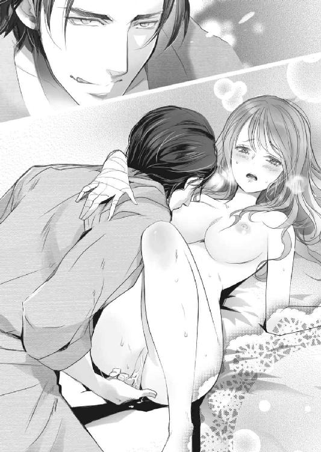
意識がふわっと浮く感覚がして、体が跳ねる。蜜口が太い指を締め上げた。するとそれに抵抗するように指が引き抜かれ、花弁の中心でびくびく震えていた肉芽を唐突に押し潰される。
「あぁ──ひぅッ！」
締まった蜜口を指がこする衝撃と、敏感な肉芽に与えられた強い刺激で眩暈がした。急激に上りつめ、全身を淫らに痙攣させて失墜する。
重くなった美月の体を受け止めるシーツは、しっとりと汗ばんでいた。まだ熱の引かない肌にまとわりつき、不快感と焦らすような快感を生む。
ちっとも楽にならない体に、息が上がったままの美月は眉根を寄せる。
「はぁ、はぁ......ねぇっ」
泰孝に向かって、苛立った声を放つ。実際は媚びるような鼻にかかった声だった。
もういい加減、この身の内を苛む淫らな熱を冷ましてほしい。今、それができるのは泰孝だけなのに、彼は決定的な刺激をずっとはぐらかし続けていた。
もっと事務的というか、早急にことが終わると思っていただけに、美月は戸惑うばかりだ。甘美な責め苦に翻弄され、息は上がりっぱなしで、快感はもう苦痛になりかけている。性急にことを進められて痛い思いをするのは嫌だったが、これはこれで辛い。
吐いた女なんか御免だと言っていたのに、泰孝はなにを考えているのだろう。快楽に翻弄される美月の様を楽しんでいるのだろうか。
「ねえってばっ......どういうつもり？」
「どういうって、なにが聞きたい？」
こっちの疑問などわかっているだろうに、泰孝は答えをはぐらかしてにやりと笑う。素直にこれから先の行為をねだれない美月は、唇を嚙んだ。
「してほしいことがあるなら言えよ」
意地悪な問いだ。美月からねだれだなんて酷なことを言う。
もし処女でなかったら、平気で男を誘えたかもしれない。けれど行為自体が初めてな美月は、なんと言えばいいかわからなかった。こんな痴態を晒した後だというのに、羞恥心が先に立つ。まるで魔法にでもかかったように言葉がでない。
それに、望んでこうなったわけではないのにねだるなんて、美月のプライドが許さなかった。いっそこのプライドもなくなるほど、催淫作用が強ければ良かったのに。
中途半端な催淫作用は、美月を理性と欲望の間で翻弄する。
「ほら、言えよ。楽になりたいだろ？」
泰孝が再び指を蜜口の中に沈める。一気に奥まで突き上げられ、悲鳴のような喘ぎ声が漏れた。
さっき達したばかりだというのに、体はすぐに快感を拾い、くすぶる欲望を燃え上がらせる。下腹部に溜まる熱は泥のように重たくなり、出口を探して美月を追いつめる。
もう指だけでは足りない。蜜口を押し開き、もっと奥まで満たしてほしい。そしてこの熱をかきだしてほしかった。
想像するだけで、指を飲みこんだ中が痙攣して蜜をあふれさせる。ほしがるように、はしたなく腰が揺れた。それに呼応するように太い指が中をかき回し、男が濡れそぼった脚の間に顔を埋めた。
指と舌で散々嬲られ赤く腫れ上がった肉芽を甘嚙みされ、強く吸われる。
「ああぁ、いやあ......！」
焦らされ続けた欲望が、美月の体の中で暴れまわる。全身がびくびくと跳ね、背筋が弓なりになる。残っていた理性が根こそぎ持っていかれるような快感に、屈服するしかなかった。
「ひぃ、あぁ......もぅ、だめ。お願い」
縋るように泰孝を見上げる。目尻に溜まっていた涙が、ぼろぼろと零れ落ちた。
けれどそんな懇願ぐらいで、男は許してくれない。肉芽や襞に舌を這わせる合間に、もっとはっきり言えと、優しい声で要求してくる。快楽にのまれた美月は、考えることを放棄し、本能のままに欲求を口にした。
「はぁ、ああぁんっ......入れて、中に。もう、指はいやぁっ」
脚の間から泰孝が身を起こす。やっと与えられるのだと思うと、初めてを奪われる恐怖よりも期待で、胸がどきどきした。見上げた男の裸体にも見惚れる。
厚い胸板は筋肉質で、腰にかけてのラインは綺麗に引き締まっている。逞しいけれど、大げさに筋肉が盛り上がっているということもなく美しい。見せるための筋肉のつけ方ではなく、普段から鍛えて使っている、そういう体つきだ。
今まで男性の裸体を見て、なにか感じたことのなかった美月だったが、泰孝の体には見惚れるだけの魅力がある。催淫作用のせいもあるのだろうけれど、視覚的にも性欲を刺激され息が上がった。
だが、その興奮は男の言葉に裏切られる。
「中に？ なにを？」
ここまで言えば、なにを要求しているかぐらいわかるだろうに。まだ意地悪するのかと泰孝を睨みつけるが、楽しげに見下ろされる。
言わなければ、まだ長引かせるつもりなのだろう。我慢できなくなっていた美月は、最後まであった羞恥心も捨ててほしがった。
「あなたの......桐生さんの、それがほしいの」
重くだるい腕で身を起こし、手を伸ばして男の脚の間でそそり立つ欲望を摑んだ。思っていたよりも硬くて太いそれに、手が震える。
これが自分の体の中に納まるのだろうか。入れても大丈夫なのか。様々な不安がこみ上げてきたが、それ以上にこれで中をこすられるのを想像し興奮した。
目が潤み、頭の奥が痺れてくる。半開きになった唇から淫らな息が漏れ、熱くなった体の芯が蕩けるような感覚がした。
初めてだというのに、男のそれを上下にこすりながら自分の脚の間に引き寄せる。まるで淫売のようだと思ったけれど、羞恥心やプライドより欲望が勝った。
硬い切っ先を、蜜口に押し当てる。ひくり、と入り口は震え男のものに吸いついた。
「はぁ......ねえ、いれてぇ」
泰孝を上目づかいで見つめ、舌足らずな口調で誘う。
「上出来だな」
男の目の色が変わった。泰孝は舌なめずりし、軽く身を起こしていた美月の腕を強く摑んで、ベッドに引き倒した。
腕に男の重みがかかり、蜜口を押し広げて熱塊が入ってくる。
「ああぁ──......ッ」
蜜口に裂けるような痛みが走り、美月は顔をしかめた。だが、それもすぐにかき消される。
中を太いものでこすり上げられる快感に引きずられ、痛みが甘い疼きへとすり替わる。催淫作用のせいもあるのだろう。疼痛が熱っぽい欲望となり、男を飲みこんだ中が激しく痙攣する。
蜜を滴らせる入り口はきつく締まり、内壁は欲望にねっとりと絡みつく。男の欲望の形が、はっきりとわかるような気がした。
満足感に溜め息が漏れる。けれど中を満たされただけでは、まだ足りない。
「はぁん、あぁ......もっとぉ」
理性もプライドも捨てた美月は、男に媚びる声を零し腰を揺らす。
「もっと、奥に......ああぁンッ！」
全てを言い終える前に、男が腰を突き動かす。その衝撃に視界が揺れ、息も止まるような快感が体を貫く。中が激しく痙攣し、達したようになるが、すぐにまた蜜口がわなないて絶頂へと押し上げられる。
「あっ、ひゃあぁん、ああぁ......だめぇッ」
泰孝が強く突き上げてくるたびに、全身がびくびくと跳ねる。切れ目なく絶頂が何度も襲ってくる感覚に、美月は狂ったように甘い悲鳴を上げ続けた。
気持ち良すぎて、頭がおかしくなりそうだった。もう駄目やめてと懇願するが、男の動きは止まらない。
ずっと衝動を我慢していたのかもしれない。美月の声など聞こえないかのように、激しく中を蹂躙する。なにもかも食らい尽くすようなその攻めに、美月もなぜか興奮した。
もっと深く交じり合いたくて、腕や足を男の体に絡みつかせる。初めてだったが、知識はあったのでどうすればいいか自然とわかった。あとは本能のまま、気持ち良く感じるように美月も動いた。
いつしか男と繫がった場所から、体が溶け合っていくような感覚に飲みこまれていった。このままずっと、この行為が終わらなければいいのにと思うほど気持ち良い。
快感が身の内の留まっている間は、あんなに甘く苦しかったのに、解放された今は、寄せては返す快楽の波にずっと身を任せていたいと思う。狂おしいほどの快感なのに、なぜか辛くはなかった。
男の逞しい背中に縋りつくと、動きがより荒々しくなった。終わりが近いのだろう。泰孝は美月の中をより深く抉り、かき回す。
「──......ああぁッ」
上から叩きつけるように中を貫かれ、男の背中に爪を立てる。びくんっ、と内壁が激しく震え男の熱をきつく締め上げた。
泰孝が美月の体を、乱暴に抱きしめる。引き寄せられた腰に、男の指が食いこんで痛かったが、それ以上に奥深く中を突き上げられ、快感で頭の中が真っ白になる。
同時に、男の動きが止まった。注ぎこまれる欲望に、美月はうっとりとする。催淫作用のせいなのか、甘美な倦怠感が体を満たし、妊娠だとか病気だとかの不安を忘れさせる。後のことなど、どうでもよくなるぐらいに......。
それから二人の乱れた息が少し整った頃、泰孝がおもむろに唇を重ねてきた。男と繫がったまま、腰をしっかりと拘束されていた美月に、口付けの拒否権はなかった。あったとしても、抵抗することはなかっただろう。
行為の後の吐息は、お互いにまだ熱をはらんでいて、ついばむように唇が重なるたび熱気を増していく。せっかく整った呼吸もまた乱れ始め、合わさった肌の間でしっとりと汗がにじんでくる。
唇を触れ合わせるだけだった口付けは、すぐに深く濃厚なものへと変わり、美月は乱れて熱くなった二人分の吐息を飲みこむ。嚥下しきれなかった唾液が、唇の端から滴り、絡まり合う舌が卑猥な音を立てる。それに呼応するように、美月の腰がくねった。
引いたと思った淫らな熱が、うねるように腰から背筋を伝って上ってくる。うなじのあたりがぞくぞくし、鼻から甘えるような声が漏れた。
「あっ......あぁ、もうっ」
駄目なのか、それとももっとほしいのか。自分でもよくわからない。
悩ましげに眉をひそめると、男の低くて熱のこもった声が腰に響いた。
「悪いな。もう少し、付き合ってくれ......」
そう言うと泰孝はゆっくりと動きだし、満足いくまで美月を貪り続けたのだった。
３
「えー......ほんと？」
「やだぁ、怖い」
「あんな綺麗なのに......かわいそう」
総務部の人事課の部屋からでると、廊下の隅からひそひそ話の声が耳に忍びこんできた。もちろん美月に聞かせるために、わざと聞こえるぐらいの声で話しているのだろう。
いずれも同期入社の女子社員三人だ。たまに昼食を一緒にするぐらいの仲でもあった。
そのうちの一人は、美月と同じ総務課の受付嬢だ。彼女の視線が、こちらにじっとそそがれているのを感じた。だが、美月は振り返ることなく、庶務課の置かれている北側の棟に向かう。
今日付けで総務課から庶務課に異動することになった。庶務課は倉庫の整理や備品管理、過去の資料やデータの収集が主な、地味な仕事だ。受付嬢といういわば花形の仕事から、裏方の仕事へと降格したようなものだった。
美月は新卒で入社してからの一年、受付嬢としてなんの問題もなく働いてきた。それどころか評判が良いぐらいだった。
美人で愛嬌があって気が利いて、仕事のできる受付嬢はすぐに社外でも有名になった。美月の顔を見るためだけにやってくる仕事関係者や、美月会いたさに通ってくる取引先までもいた。けれどその評判の良さが仇になった。
「待ちなさいよ！」
北の棟に続くドアを開けようとした時、刺々しい声で呼び止められた。受付嬢の彼女だ。見なくてもわかる。
いつも美月の陰で目立たなかった彼女だが、じゅうぶん美人で通る容貌の女性だ。美月がいなければ、彼女がもてはやされていたかもしれない。
「辞めないのね。ふてぶてしい女」
ゆっくりと振り返ると、彼女は嘲笑していた。だが、目はぎらぎらと嫉妬の炎をくゆらせている。無理をしているのか、嘲るつもりで引き上げられた口角が、ぴくぴくと痙攣していた。
「解雇にもなっていないし、辞めるようには言われてないもの。私は仕事を続けるわ」
淡々と返すと、それが癪に障ったのか、彼女の表情がとたんに険しくなる。
「人事課の男ともできてるわけ？ さすが美人は、男をたらしこむのがうまいわね」
そんな事実は皆無だったが、否定するのも面倒で踵を返す。
今の美月は、仕事を辞めたくても辞められなかった。生活するために働かなくてはならないし、実家を捨てた自分に頼る当てはない。それにこの会社は安定していて、給料も割と良いほうだ。自己都合で辞職して、同じぐらいの待遇の会社に転職するのは難しい。
だから、この程度のことで辞めるわけにはいかない。幸い、異動先でも給料が変わることもなかった。
「無視すんじゃないわよっ」
カッカッ、とリノリウムの床を踵で叩く音がして、後ろから強く腕を摑まれた。
「逃げる気？ アンタみたいな女に、彼は渡さないんだからっ！」
彼というのは、彼女が片思いをしている取引先の男性社員だ。受付をしている時に、何度も顔を合わせたことがある。美月にかなり入れあげていた。
そして美月が、庶務課に飛ばされることとなった元凶でもある。
「別に、とったりなんかしないわよ」
「当たり前よ！ 彼がアンタなんか好きになるもんですか、アンタみたいな犯罪者なんて！」
つとめて冷静にしていた美月は、頰がこわばるのを感じた。「犯罪者」という言葉に、想像以上に動揺していた。
こう言われることは覚悟していたのに、指先が小さく震える。それと同時に、胸の内にどす黒い毒がじわりとにじんできた。
「......安心して。ちゃんと交際はお断りしておいてあげたから」
それまで平坦だった美月の口調に、いやらしい意地悪な響きが混じる。腕を摑んでいた彼女の手がびくっと、こわばった。
「この前、告白されたの。君のことが好きだ。過去を知っても気持ちは変わらない。君を守りたいって」
美月の言葉に、彼女の顔からみるみる血の気がなくなる。いい気味だ。
「私は彼のことなんとも思ってないから、丁重に交際はお断りしたわ。それでも彼、私の過去を暴露した人間を突き止めるって息巻いてた。今回のこと絶対に許せないって」
真っ青になった彼女は、とうとう動揺を隠すこともできなくなったらしい。全身を小刻みに震わせている。
「噓......噓よっ」
「そう思うなら、彼に聞いてみたら？ 私、もういくから離して」
茫然としている彼女の手を振り払い、ドアノブを摑んだ。
「アンタみたいな女......絶対、将来幸せになんてなれないんだから！」
ドアを閉める寸前、彼女の放った悲痛な毒が背中に突き刺さる。
「そんなこと......言われなくても知ってるわよ」
美月の呟きは、重いドアが閉まる音にかき消された。
＊
「ああ、目が覚めたか。美月ちゃん」
やけに重く感じる瞼を開くと、まず自分が住んでいるアパートの天井が見えた。次に、泰孝がひょっこりと視界に入ってきた。
「気分はどうだ？」
「......え？ どういうこと？」
ベッドに寝かされていた美月は、慌てて体を起こす。見たことのない、サッカー生地の水色のパジャマを着せられていた。汗をしっとりと吸ったそれは新品だ。
そして驚くほど全身が重くだるいことに戸惑っていると、汗と一緒に額からずるりとなにかが落ちてきた。
「ジェルシート？」
それは熱がある時に額に貼りつける、冷却ジェルシートだった。
「あーあ、外れちまったか。ほら、新しいの」
その言葉と同時に、額にぺたんと新たな冷却ジェルシートを貼りつけられる。冷たさに小さく悲鳴を上げた美月は、眉をひそめて泰孝を睨み上げた。
「そんな顔すんなよ。悪かったって。無理させちまって」
「無理？」
「ハーブのせいで体調もそんな良くなかったのにな。あと、手の傷から少しばい菌が入って発熱したみたいだ。それから、初めてなのに気付かなくて悪かったな。しかも、ついがっついちまって」
「え......気付かなかったって......」
泰孝の言葉に表情がこわばる。
「だから、処女だったんだろ？ まさかこんな美人で、キャバ嬢してて未経験だとは思わなくてな。加減できなかった」
頰が熱くなる。とっさに表情を繕うこともできず、言わなくていいことまで言う。
「......違うわよっ」
「あからさまな噓だな。布団摑む手が震えてるぞ」
すぐに返ってきた指摘に、美月は手を見下ろして唇を嚙む。恥ずかしくて、顔を上げられない。
「まあ、いいじゃないか。恥ずかしいことじゃないぞ、処女だったことは」
慰めているつもりなのか、ぽんぽんと頭を撫でられる。
「それを俺が奪っちまったのは、本当に申し訳なかった。大事に守ってたのにな......」
美月は言葉をさえぎるように、頭に置かれた手を払いのけた。慰めが見当外れで、いらっとした。
「別に守ってたわけじゃないわよ。色々あって捨てる時期と相手を逃しただけだから。同情しないでくれる」
さっきまでの動揺は消え、男をきっと睨み上げた。
「誰にだって初めてはあるものだし、今回は脱法ハーブのせいもあったけど、私は自分であなたに抱かれることを選択したの。謝罪されるようなことじゃないわ」
哀れまれたような感じが嫌だった。それに処女だったとバレたことは恥ずかしかったが、それを失ったことに自分でも驚くほど絶望していなかった。これがレークスの盛岡相手だったらと考えると、不快感と嫌悪感がこみ上げる。
泰孝相手にそう感じないのは、きっと、あんな状況でも選択権が自分にあったからだろう。泰孝に誘導された気もしないでもないが、本当に嫌な相手だったら美月は意識が朦朧としていても抵抗したはずだ。また、美月が拒否すれば、泰孝はあっさりと引き下がるタイプに見えた。だから、あれはほとんど合意の行為だと、既に美月の中で納得していた。
むしろ泰孝に抱かれて、良かったと思っている。彼が、初めての相手なら嫌ではない。
謝罪されるほうが、腹立たしい。
「あなたが、私の処女を奪ったんじゃないわ。私が、あなたを初めての相手に選んであげたの。勘違いしないで」
そう言い放つと、泰孝はぽかんとした表情をした後に、ハッと鼻先で笑う。馬鹿にしたのではない、思わず零れたという笑いだった。
「メンタル強い女だと思ったが、切り替えも早いんだな」
「オジサン世代の価値観だと大事なものかもしれないけど、私からしたらもう重い荷物でしかなかったから、いいの」
どれぐらい年が離れているのかわからないが、オジサンという単語を強調して言ってやると、泰孝は嫌そうに鼻に皺を寄せた。
「まだ三十三だ。今の時代、そこまでオジサンってほどでもねえよ」
否定する泰孝に、わざと冷やかな笑いを返す。東京ならまだ若いぐらいだろうが、地方から上京してきた美月からすると、三十三はかなり年がいったイメージがある。
美月の地元なら、結婚して子供の一人はいる年齢だ。その価値観からすると、二十四歳の自分も売れ残りのオバサンということにはなるが、それには目をつぶる。
「私と九つも違うじゃない。じゅうぶんオジサンでしょ」
「お前、キャバ嬢してるくせして口悪いな」
「あなたはお客じゃないもの。媚びを売る必要ないじゃない」
つんと澄まして、泰孝から顔をそむける。
だが、相手が泰孝でなければ、もう少しお愛想も言っただろう。これでも美月は、基本的に猫をかぶる性格だ。昔からの癖で、相手に好かれよう好印象を与えようと動いてしまう。そうやって、相手を自分の味方にしようと、無意識に行動を選択しているところがあった。
けれど泰孝に関しては、出会い方が悪かったせいか、変に取り繕う気になれない。ゲロを吐きかけた上に、催淫作用を散らす手伝いまでしてもらった相手だ。
醜態に痴態まで晒しておいて、好かれようなんて考えるほうがおかしい。むしろ自分の存在ごと記憶を消してほしいぐらいで、媚びるなんて滑稽だとさえ思えた。
「媚びる必要もないか......そんなこと言っていいのか？」
穏やかだが凄みのある声音に、どきりとする。ちらりと横目で男をうかがえば、にやっと狡猾な笑みを返された。
「なあ、佐藤美月ちゃん？」
ハッとした。そういえば、なぜ泰孝は教えていない美月の本名を知っているのか。そもそも、客を見送りにでたので財布もスマートフォンも持っていなかった。
それなのに、どうやって自宅を突き止めたのか......。
「ノーブルはな、俺の舎弟がやってる店なんだよ。女の子が一人さらわれたって聞いて、もしかしてと思ってお前の源氏名と容姿を伝えたらその通りだった」
美月の顔色が変わったのを見て、その心の内を読んだように、泰孝がこのアパートにくるまでの経緯を説明し始めた。
泰孝のマンションでの行為の翌日。美月は無理がたたったのか、高熱をだしたそうだ。そこに、男の舎弟から昨夜のレークスに関する報告があった。その際に、別の舎弟が経営しているキャバクラからキャストがさらわれたことを知らされた。
すぐに美月のことだろうと合点がいき、その舎弟に連絡をとったそうだ。そして泰孝の舎弟だという店長から源氏名ルナの本名と住所を聞き、熱で意識が朦朧としている美月をここまで連れてきたという。
話を聞き終えた美月は、さらに蒼白になった。
最悪だ。ノーブルの店長が泰孝の舎弟だなんて......。なんの因縁なんだろう。
これで、この男とそう簡単に縁を切れなくなった。
「......なにが目的？」
意識のない美月をわざわざアパートまで運び、ご親切にジェルシートを額に貼って世話までする。なんの利益もなく、ヤクザがそんなことをするとは思えなかった。
「おいおい、そんな怖い顔するなよ」
おどけて肩をすくめる男を、美月は鋭い眼光で見据える。少しでも目をそらしたら、この獣に頭から食われてしまう気がした。
「スーツのことなら......汚して悪かったわ。弁償するつもりはあるから」
金額を大きくふっかけられるかもしれない。だが、非常識な額なら、脅迫されたと言って警察に駆けこめる。そもそも暴力団対策法により、ヤクザだと名乗っただけで脅迫とみなされ、通報することは可能なのだ。
だから恐れることはないと思うのに、泰孝の余裕たっぷりの笑みを見ると背筋が震える。ただ笑っているだけなのに、びしばしと伝わってくる威圧感が怖い。
「ああ、あれならいい。古いスーツだったし......わざとゲロぶっかけられて、捨てるきっかけができた」
わざと、の部分を強調して言われ、心臓が跳ねる。やはり、バレていた。
「それに、催淫作用のおかげでこっちも美味しい思いをさせてもらったからな。なかったことにしてやるよ」
しかも初物だった、とつけ加えられ顔が熱くなる。
「だったら、もう私に用はないでしょう。あとは一人で大丈夫だから、帰ってくれる？」
「そういうわけにもいかない。昨夜のレークスの件、お前がどこかで喋らない保証はないからな」
そう言うと、泰孝はすうっと目を細める。酷く冷たい、監視するような視線に体がこわばった。
美月をさらったレークスのメンバーが、あの後どうなったのかは知らない。ただ、こうして口止めしたいということは、人には言えないようなことをしたのだろう。それに脱法ハーブのことなども絡んでいる。どこかから情報が漏れると問題があるのかもしれない。
おそらく、泰孝がここまで美月を運んできたのは、アパートの室内を物色し、口止めの材料を見つけることが目的だ。きっともう、物色された後だろう。
美月は、特に変わった様子のない室内をそっと一瞥し、嘆息する。面倒なことに巻きこまれてしまった。
「昨夜のことなら誰にも言わないわよ......」
泰孝から視線をそらしてうつむくと、軽く眩暈がした。こんな時に発熱しているのも最悪だ。
「私だって警察のお世話になれない事情があるし」
四年前に犯した罪を思いだし、顔をしかめた。
「会社を辞めてキャバ嬢になったことに関係あるのか？」
「そうだけど......」
なんで知っているのだろう。眉根を寄せて男を振り返ると、キャバクラの店長から聞いたと言う。キャバクラの面接の時、前職の話に少し触れた。そのことを覚えていたらしい。
「あそこは中小だが、安定した良い会社だろう。そこを辞めてキャバ嬢になったのには、なんか事情があるんだな」
「まあ、そうね。昔のことが噂になったのよ」
「だったら、それを教えてくれないか。安心できる材料なら、もうお前とは関わらないことにしてもいい」
本当にと問うと、ああ、と頷き返された。
「えっと......」
言いよどむ。赤の他人にこのことを話すのは初めてで、いざ口を開くとなにから言えばいいのかわからない。無意識に握りしめていた手の平は、緊張していたのかじっとりと汗をかいていた。
いつもなら、こんな時、相手の同情を買うように話を持っていく。それまでの関係で猫をかぶっているので、そうしても不審がられない。健気なふりをする美月に、ほとんどの人間は哀れんでくれる。
けれど初めから素の自分で対峙してしまった泰孝に、噓や演技は通用しない。そもそもヤクザに憐憫の情などあるのだろうか。
きっと取り繕うだけ無駄だ。泰孝のような男は、こちらの思惑など見透かしてしまう。人の弱みを摑んで揺さぶるのが得意な職業なのだから。
「......その、四年前のことなんだけど」
やっとでた言葉はそれだけで、また喉で声がつかえる。本当のことを素のまま喋るということが、こんなにも緊張するなんて思わなかった。
それだけ美月は長い年月、他人に噓の自分しか見せてこなかったということだ。
「そ、それで......」
どうにかして言葉を繫げようとした時。ぐうぅ......と、唐突に腹の虫が美月の言葉をさえぎった。緊張を崩すその音が酷く恥ずかしくて、頰が赤くなっていくのがわかった。
「そういえばお前、昨夜からなにも食べてなかったな。あんなに運動したのに」
泰孝のよけいな一言に、居たたまれない気持ちでうつむく。顔だけでなく、全身が熱とは関係なく熱くなってくる。
「とりあえず、話は後にして食事にしよう。お粥、作ったんだ。食べれるよな？」
無言で頷くと、泰孝は立ち上がり、１ＤＫの狭いキッチンに向かった。ガスが点火する音に続いて、食器を漁っている音が聞こえる。それに重なって、泰孝の声が飛んできた。
「それにしても、古いアパートだな。夜の仕事してて、こんなとこに女が一人暮らしだなんて、物騒だろう。引っ越さないのか？」
一階角部屋、北向きで日当たりの悪いアパートは古くて狭い。それでも水回りはリフォームされていて、都心へのアクセスがいいから家賃は月六万円だ。
「前に働いていた会社が近いの。ノーブルも近いし......引っ越しは考えてないわ」
大学を卒業後、美月は親から逃げるように引っ越し就職した。それまでは他の学生に比べて多い仕送りをもらい、都心のセキュリティのしっかりした新築のマンションに住んでいた。
そんな恵まれた生活から一変、美月は自力で生活していくことを決意した。住民票も移さず、親に住所も教えていない。
そんな美月にとって、条件が揃っていて尚且つ、ぎりぎりだせる家賃の金額がこの部屋だった。覚悟していたとはいえ、それまで裕福な家庭で育ち、お嬢様生活をしていた美月には惨めに思えるたたずまいだった。
それでもしばらくすれば、仕事の忙しさと生活に追われ、部屋は寝に帰るだけの場所と割り切った。惨めさやプライドよりも、経済的に自立することが第一になったからだ。
親の庇護下にいる窮屈さと、将来の選択肢のなさ。それから逃れたくて始めた生活。豊かさを引き換えにしてでも手に入れたかったのだから、誰かに頼るわけにもいかない。
その後キャバクラで働くようになり、各段に月給は良くなった。もっと高い家賃でも払えるし、余裕もできたが、ずっとここに住み続けている。
「こんな仕事してるから、なにがあるかわからないじゃない。家賃に使うより、現金で持っていたいの」
「ふぅん。意外に堅実なんだな」
それきり泰孝から質問が飛んでくることはなく、鍋がことことという音が聞こえてきた。
ガラス戸で仕切られたキッチンを、少し身を乗りだすようにしてうかがう。半開きになった戸の向こうで、泰孝の大きな影がうごめいている。なんとなく、手馴れている雰囲気だった。
簡単な料理ぐらいはできるのかもしれない。だが、どうせレトルトのお粥だろうと思っていると、一人用の土鍋をお盆に載せて戻ってきた。
土鍋は美月所有のものだが、最近はめっきり料理もしなくなって、しまいこんでいた。よく見つけたなと思いながら、膝の上に置かれたお盆を見下ろす。泰孝が蓋をとると、白い湯気と一緒に出汁と三つ葉の良い香りがした。
「......作ったの？」
「だから、そう言っただろ」
訝しむ顔を向けると、レトルトはまずいだろうと返された。
「俺はわざわざまずいもの食べるのは嫌だし、まずいものを他人に食わせるのも嫌いなんだよ」
ヤクザにしては変わっている。まるで母親みたいだ。
「ふぅん、美味しいって自信あるんだ」
「いいから、食って薬飲め」
ほら、とお盆の上に薬の袋を置かれる。美月が寝ている間に、昨夜、手の治療をしてくれた医者を呼んで、薬をもらってくれたそうだ。
レンゲを手にとる。なんの変哲もない卵粥だが、見た目に気を配って三つ葉を載せている。この無骨な男が作ったとは思えなかった。
「いただきます」
恐る恐る一口すくって食べてみると、三つ葉の香りの後に、ふわっと出汁の旨味と卵の優しい味が口の中に広がる。美味しかった。
熱のせいで味覚がおかしくなっているのだろうか。そんな疑いも浮かんだが、香りと味に刺激された空腹にかき消される。美月は、あっという間にお粥を平らげていた。
「......料理上手なのね」
素直に褒めるのがなんとなく癪で、つい上からものを言ってしまう。泰孝は気を悪くした様子もなく「八歳まで育ててくれた祖父が料理人だった」と言う。その祖父に、料理の基礎をみっちり仕込まれたそうだ。
それから、お代わりがいるかという泰孝の言葉に首を振ると、グラスに入った水と薬を手渡され、お盆が膝の上から消えた。土鍋が洗われる音を聞きながら美月は薬を飲み、グラスを枕元のサイドテーブルに置くとぼんやりとした。
お粥で腹が満たされたせいか、頭に霞がかかったような感じがした。熱で体も火照っていて、ちょっと気持ちが良い。眠気に目をこすりながら、ガラス戸の向こうで動くのっそりとした影を見つめた。
かちゃかちゃと、食器のぶつかる音に水音。美月がここ数日溜めこんだ汚れた食器も洗ってくれているようだった。
変わったヤクザだ。なにもそこまで世話を焼く必要などないのに。
睡魔と一緒に、胸が温かな空気で満たされていく。これはなんだろう。洗い物をする音が、こんなにも耳に心地良いなんて不思議だ。
こういう空気を知っている。懐かしいというやつだ。
けれど、懐かしいと感じるような思い出を、美月は持っていない。裕福な実家では、母が皿洗いをすることなどなかった。家事は家政婦の仕事で、食器洗いは食洗器があった。
なのに懐かしいと思う。きっとテレビドラマや本から得た、懐古的なイメージや知識が美月の中で昇華され、懐かしいと思わせるのだろう。
それと懐かしいとは別のなにかが、胸の中でもぞもぞ動いている。くすぐったいそのなにかを摑む前に、キッチンから戻ってきた泰孝に「眠いなら、寝ろ、寝ろ」とどやされ、ベッドの中に押しこめられた。
掛布団を顎の下まで持ち上げられ、ぽんぽんと胸のあたりを優しく叩かれる。食事をする前まで男から発せられていた威圧感は、どこにいってしまったのだろうか。
「ゴツイお母さん」
頭の中に浮かんだイメージをそのまま言葉にすると、険のある表情とドスのきいた声で「ああぁんっ？」と返される。ぜんぜん怖くなかった。
「寝ぼけてんのか？ 薬きいてきたんだな。ゆっくり寝ろ。話は起きてからでいい」
ああ、そういえば話の途中だったなと思いだす。
「あのね......痴情のもつれで、元婚約者を刺したの」
あんなに喉の奥でつかえていた言葉が、するりとでてきた。それから、これぐらい端的に言ってしまえば良かったのだと気付いて、ちょっと拍子抜けする。
自分はなにを説明しようとしていたのだろう。事実だけなら、あんなに緊張するほどのことでもなかった。
しかも泰孝は、日常的なこととでも言うように返してきた。
「そうか。たまにあることだな」
「うん。ネットとかで検索したらでてくるから。詳細は、そっちで調べて......できるでしょ？」
そう言って、美月は瞼を閉ざす。ああ、と頷く声が遠くでした。
なんだ、こんなにも簡単なことだったのか。負い目だと思っていたはずなのに......話す相手が泰孝だと、その荷物がとても軽い。
泰孝がヤクザで、傷害事件など日常的だろうから、気楽に感じるのか。また、そんな相手に気取る必要もないと思うからか。自分の心の内はよくわからない。
ただ、美月の罪が軽くなることはないけれど、この男の傍にいる間だけは、なぜかその重さから解放されるような気がした。
４
「ルナ！ 久しぶり～。聞いたわよ、大丈夫だった？」
更衣室のドアを開くと、最初にアヤが大げさな身振り手振りで声を上げ、ピンク色のドレスをひるがえし駆け寄ってきた。店にでる準備中だった他の同僚もこちらを振り返る。
アヤは同い年だが二年先輩で、店ではトップ争いをしている一人でもある。綺麗系の美月とは対照的に、可愛い系で売っている童顔だ。愛くるしい仕草や無邪気な笑顔が人気で、ふわふわしたドレスがよく似合っている。
そのアヤが、黒い革製のロンググローブに包まれた美月の手を、ぎゅっと握りしめて言った。
「心配してたのよ。その......さらわれたって」
最後は声の調子を落とし、美月の目をじっと見つめて言う。心配そうに眉根を寄せているが、その目が意地悪く輝く。
その瞬間、根拠はないがコイツだと思った。
「ごめんなさいね、心配かけて。でも大丈夫、親切な人に助けてもらって色々お世話してもらったから」
にっこり微笑み返すと、きらめいていた瞳に落胆の色が浮かぶ。だがそれも一瞬のことで、アヤはすぐに笑顔になった。
「そーなんだ。運が良かったんだね」
やっぱり、この女がレークスのメンバーを手引きしたに違いない。その疑惑は確信に変わった。
あの誘拐事件には、不審な点があった。店の外までキャストと呼ばれるキャバ嬢が客を見送りにでる際、たいてい黒服がついてくる。もちろん客を見送るという意味もあるが、業務中にサボるキャストや、酔った客や通行人に絡まれるキャストがいるからだ。
防犯と監視の意味でいるはずの黒服が、美月がさらわれた時にはいなかった。さらわれる前、それを不思議に思ったのを覚えている。
今日出勤し更衣室にくる前、店長室に呼ばれた。美月を担当する黒服は、あの日、店内でちょっとしたトラブルが発生して、美月と一緒に客の見送りにでられなかったと謝ってきた。美月なら逃げることもないし、酔っ払いに絡まれても上手にかわすことができるからと油断していたらしい。
そして店内でのトラブルは、アヤのヘルプに入っていた新人だった。その新人は美月が店を休んでいる二週間の間に、辞めてしまった。もしかしたら、もともとアヤの知り合いだったのかもしれない。
ただ、確証もないし、今のところ証拠もないので騒ぐ気はない。表面上は仲が良くても、女同士の陰湿な戦いが裏であるこの仕事で、無闇に波風を立てることは命取りになりかねない。便乗して二人に潰し合いをさせる同僚もでてくるだろうし、味方を失うこともある。
今はまだ、この女のことは泳がせておこう。美月は、アヤに握られている手をそっとほどいた。
すると、アヤと一緒に集まってきていた同僚の一人が、美月のロンググローブを見て言った。
「ねえ、その手どうかしたの？ いつもは手袋なんてしてないでしょ？」
「ああ......ちょっとね、怪我しちゃって」
少しずれたロンググローブの裾を直しながら苦笑する。
「包帯は取れたんだけど、あんまり綺麗な状態じゃないから隠してるの」
爪は再生しつつあるが、血豆になっていたりと、とても見せられたものではなかった。手の平もまた痛々しい。
神妙な顔つきになる同僚に、大丈夫と言い残し自分のロッカーに向かった。美月はオフホワイトのロングドレスに着替えた。エンパイアタイプのドレスで、ハイウエストの切り替え部分に黒い大きなリボンがあしらわれている。
革手袋は、黒レースのロンググローブに取り換え、黒のビジューがついたクラッチバッグを持つ。髪型は、お気に入りの美容院でセットしてきたので、そのまますぐに客を迎えるフロアにでる。
更衣室の煌々とした蛍光灯ではなく、柔らかいオレンジ色の光が、壁に点々と配されている。かがり火のような照明だ。
そしてベージュの石造り風の壁に、ダークブラウンの床。テーブルは白大理石で、地下にあるワイン蔵をイメージした内装である。実際、店も地下に造られていた。装飾的ではなく、落ち着いた大人のインテリアにしてあるのは、客層に合わせてだ。
ノーブルは値段設定が、この地域の他店より少し高い。利用客の年齢層は中年以上で、経済状況もやや富裕層が多く、落ち着いたタイプのキャストを好む。キャストの年齢は他店に比べて少し高めで、二十五歳前後が平均だろう。
美月はこの業界は未経験だったが、初めてがこの店で良かったと思っている。ノルマは少なく、同伴出勤やアフターの強要はない。客層も一部を除いて、上品なタイプが多いのが特徴だ。
開店してすぐ客が入ってくる。美月は常連の客に指名されて席に着いた。しばらくしてその客が帰り、見送りをしてフロアに戻ってくると、黒服にＶＩＰルームの客から指名が入ったと言われる。
「きりう......？」
聞いた苗字は、美月を指名する常連客の中には覚えのないものだった。聞き間違いかもしれないが、似たような苗字の顧客もいない。
もう一度名前を確認すると、二度目の来店ではなく新規客だという。黒服にどういうことか聞くが、それ以上の情報は与えてくれず、忙しいのか「失礼のないように」と言い残して去っていった。
「誰かしら？ 新規でＶＩＰなんて初めて聞いたわ」
新規客でＶＩＰルームに通されるということは、よほど羽振りの良い相手で、有名人なのかもしれない。
だが、そんな有名人に美月が指名される理由がわからなかった。ただ、客の名前になにか引っかかりを感じる。口の中でその名を繰り返しながら、ＶＩＰルームに向かう。
通常のフロアと区切られたその部屋は、さらに地下へと続く階段の先にある。階段から、内装にぐっと重厚感が増す。部屋のインテリアも通常フロアに比べて高級品が多く、置かれているボトルの種類や価格帯も高くなる。バーテンダーやボーイの質も良い。
そんなＶＩＰルームに通される人物は限られている。緊張気味に、ドアに手をかけた。美月がこの部屋に呼ばれるのは、誕生日に一番の常連客がお祝いをしてくれた時以来だ。
どんな相手かわからないのが怖いが、これから美月にとっての太客になってくれるかもしれない。ここは失敗しないようにしないと、そう思ってドアを開いた瞬間、「きりう」の漢字がぱっと頭に浮かぶ。同時に、その漢字の別の読み方が苗字の男の顔を思いだす。
「あ......っ！」
キャストとしてあるまじき、しかめっ面をして入室したとたん、目に飛びこんできたのは、その男の顔だった。
黒服が純粋に読み方を間違えたのか、それともわざとなのかは知らないが、ここにくるまで気付かなかった自分の間抜けさに腹が立った。
「よお、元気になったか？ そんな酷い顔するぐらいだから、大丈夫そうだな」
皮肉って、からからと笑ったのは、二週間前に美月を抱いた泰孝だった。革張りのソファに鷹揚な態度で腰かけ、こちらに向かって手を振る。
ドアの前に立ち尽くした美月は、頰を引きつらせ、自分がもてなす側のキャストであることを忘れて言った。
「な......なんで、あなたがここにいるの！」
「おいおい、新規客に向かってそれか？」
ハッとして口をつぐむと、部屋の隅から飛んでくる視線に気付く。見ると、店長が恐ろしい形相でこちらを睨んでいる。目線と手振りで早く謝って席に着けと言っていた。
「えっと......失礼しました」
ちゃんと謝ろうと思ったが、なぜか目をそらし投げやりに言ってしまう。仕事なのに、相手が泰孝だとなんだかやりにくい。今更、この男の前で猫をかぶるのかと思うと、恥ずかしくて反発心がむくむくとわく。
もちろん店長がさっきより鋭い眼光で睨んでくる。店長は泰孝の舎弟だ。兄貴分に恥をかかせるなと怒っているのだろう。するとそれに気付いた泰孝が、店長を振り返った。
「いいんだ、コイツはこれで。俺が許すから、怒るなよ」
「そうでしたか。申し訳ございません！」
結局、店長がぺこぺこと頭を下げる。それを泰孝が適当にあしらい、部屋から追いだすと、自分の隣の空間をぽんぽんと叩く。座れという意味だろう。
とても逃げだしたかったが、仕事中だ。美月は嫌々という態度を隠すことなく、なるべく間を空けて隣に腰を下ろした。一応、最低限の接客としておしぼりを開いて手渡す。あとは話しかけることは放棄して、適当にお酒を作り始めた。強めに作り、潰してしまおう。
「無言か。名刺ぐらい渡すもんだろ。初めてなんだから」
「すみません。切らしてるんで」
本当は持っていたが、この男に連絡先を知られたくなくて、すげなく返す。
「まっ、いいけどな。持ってるし」
「えっ？ ちょっと、なんで！」
胸ポケットから男がさっと取りだしたのは、ルナ名義の名刺。自分の横に置いたクラッチバッグを見るが、盗られてもいないし開いてもいない。
「この間、部屋に置いてあったの持ち帰った」
名刺をひらひらさせる泰孝を振り返れば、にやりと笑み返される。
「勝手に部屋を漁ったわけ？」
声を荒げ、男を睨みつける。悪びれた様子もなく、にやにやされた。
泰孝はあの日から三日間、美月の部屋に居座っていた。高熱が続き、一人ではなにもできない状態だったからだ。このまま放って置いていくことはできない、看病してやると言った。
美月も意識が朦朧としていて、でていけと抵抗する気も起きなかった。それに、寝てばかりであまり覚えていないので、三日も男が居座っていても邪魔だとも思わなかったのだ。
なので寝ている間に、家探しされてもしかたがないとは思っていたが、その証拠を見せつけられれば腹も立つ。
「返してよ！」
「返してもいいが、もう暗記したぞ」
泰孝はそう言って名刺を美月の大きく開いた胸元に挟みこみ、電話番号にメールアドレスを諳んじてみせた。啞然としていると、男は煙草を取りだし視線を送ってくる。
慌てて、条件反射でライターの火を差しだす。煙草に火が移り、ライターを下げたところでハッとした。客とはいえ、この男の言いなりになったような気がして顔をしかめる。
泰孝個人を悪人とは思えなかったし、世話にもなったが、ヤクザと関わって良いことはない。早く借りを清算して、関係を絶ちたかった。
「そうだ。あのお金返すわ。今日、持ってきてるし」
看病してもらった四日目の朝。熱も下がり、すっきりした気分で起きると部屋のどこにも男の姿はなかった。
キッチンは綺麗に片付けられ、簡単に掃除もされていた。チェストの上には洗濯されたパジャマが畳んで置かれ、コタツテーブルの上には土鍋があった。
ベッドから降りて土鍋の蓋を開けると、中には鮭粥が入っている。横に置かれたメモには、「用事ができたから帰る。温めて食べろ。」と書いてあった。
それともう一つ、見知らぬ紙袋がテーブルの上にある。なんだろうとのぞいて、美月はびっくりして「ひっ！」と悲鳴を上げた。
紙袋の中身は、札束だった。数えると帯封がついた束が五つも入っている。紙袋をひっくり返したが、この札束についての書き置きもなにもない。泰孝の連絡先も知らなかった。
口止め料なのかもしれないが、こんな大金、ぽんと渡されても困る。後が怖くて、青ざめた。
美月は慌ててキャバクラの店長に電話した。ずっと仕事を無断欠勤していたのもあるが、泰孝と唯一繫がりがあるのが舎弟だという店長だけだ。
だが、店長は泰孝の居場所も連絡先も教えてはくれなかった。無断欠勤については泰孝から連絡があり、二週間ぐらい休ませてやってくれと言われたそうだ。おかげで、もう大丈夫だから出勤すると言っても、店長は頑として聞き入れてくれなかった。
もちろん無断欠勤や予定外の休みについて、ペナルティもないという。キャバ嬢は勝手に仕事を休んだりなどすると、ペナルティがついて罰金が発生する。それも泰孝からの頼みだから、徴収するわけにはいかないと言った。
札束の件についても、自分は知らないことだからどうにもできない。返したいなら、直接本人に手渡してくれとすげなく返された。直接といっても、美月は泰孝のことをなにも知らない。再度、連絡先を教えてほしいと言うと、それは無視され、再来週まで絶対に仕事にはくるなと言われて一方的に電話は切られた。
その後、店に顔をだそうと思っても出入り口で追い返され、今日まで渋々休むことになったのだ。
そして本日出勤し、店長に札束を渡そうとしたが、俺を殺す気かと突き返された。今は更衣室のロッカーの中にある。
「あんな大金もらえないから......とってくる」
「ああ？ もらっとけよ。あれは慰謝料だ。お前が仕事できない間の生活費でもある」
「慰謝料じゃなくて、口止め料でしょう......いらないから。なくても私が漏らさないことぐらい調べはついてるはずよ」
その言葉に泰孝の返事はない。美月の身辺調査は既にすんでいるのだろう。
「じゃあ、お初いただいた代金ってことでどうだ？」
男の下品な返答に、頭にカッと血が上る。
「よけいいらないわよ！ 馬鹿にしないで、私は売春はしてないの！」
美月は席を立った。
「お金、とってくる！」
泰孝が、煙草を灰皿に置いて美月を見上げた。
「ちょっと待てよ。無粋だな」
歩きだそうとしたところで、泰孝に強く腕を引かれた。バランスを崩した美月は、後ろに転ぶように倒れる。
「きゃぁ......！ なにすんのよっ！」
腰が落ちた先は、ソファではなく男の膝の上だった。後ろから抱きしめるように腰に腕を回され、がっちり捕らえられる。膝から降りようとしても無駄で、腕を殴っても引っ張ってもびくともしない。それどころか、鋼でも殴っているみたいで、こちらの拳が痛くなってきた。
「放しなさいよ！ うちは、こういうことを許可してるお店じゃないんだからね！」
お触りＯＫの店や、ぎりぎりの行為を売りにしている店もある。だがノーブルは、基本お触り禁止で合意の上なら見逃されている。そしてキャストが嫌がるような行為をした場合は、退店させるのが普通だった。
美月が助けを求めるように、ＶＩＰルームの黒服に目線を送る。だが、やっぱりというか予想通り無視された。
店長にとって兄貴分にあたる泰孝は、今この店で一番偉いということになる。美月がなにを訴えても無駄で、泰孝のすることを止める人間はいない。まさにやりたい放題だ。
だからといって、自分が抵抗をやめる理由にはならなかった。泰孝の腕をがんがん殴りつけ、脚をばたばたさせて暴れる。
「下ろしなさいよ！」
「病み上がりで、まだ手の怪我も治ってねえのに暴れんなよ。言うこときかないなら黙らせるぞ」
「なっ、なによ。脅す気......ひゃぁッ！」
耳元でした男の低い声に体がすくんだ瞬間、むぎゅっとドレスの上から胸を摑まれた。あまりに堂々とした行為に、美月は目を見開いて啞然とする。すぐに反応できなかった。
その間に、男の大きな手が円を描くように乳房を揉みしだく。明らかに快感を与えるようなその動きに、美月は怯んでしまい声がでない。
いつもなら、こんな行為を客に許したりしない。上手にかわすし、うろたえてしまうことだってなかった。黒服が助けてくれなくても、なんとかやり過ごす方法を冷静に考えられる。
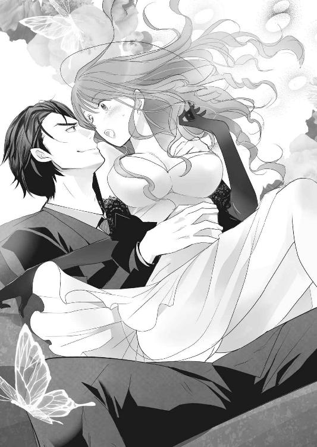
なのに泰孝相手だと、それができない。頭の中が抱かれた時のことでいっぱいになり、体がそれに反応してしまう。男の吐息がかかるうなじが甘く震え、背筋がぞくりとした後に体温が上昇する。乳房の中心が硬くなり、じわりと脚の間が湿ってくる。
あの夜のことを体は覚えていて、美月のプライドなど無視して快感を拾おうとする。
「いっ、や......ンッ」
快感を振り払うように声を絞りだすが、淫らに粟立っていたうなじに男の唇が触れ、舌でねっとりと舐め上げられる。漏れそうになった甘ったるい声に、美月は唇を嚙む。
こんな場所で、快感に流されるわけにはいかない。ＶＩＰルームには、専用のバーカウンターがあり、そこにバーテンダーがいる。給仕のボーイや黒服だって隅に控えているのだ。
ここは泰孝と二人だけの密室ではない。さっきから二人の邪魔をしないように彼らは息を潜めてはいるが、こちらの動向を固唾を飲んで見ているのがわかる。
嫌だ......。他人の目がある場所で乱れるなんて。
性に対して奔放ではない美月にとって、それは耐えがたい恥辱だった。体が恥ずかしさと悔しさに震える。
「や、やめてよ......っ」
やっとでた意味のある言葉は、情けないほど震えていて泣きたくなった。すると胸を弄んでいた手がすっと引いていき、代わりに頭をぽんぽんと撫でられる。
とたんに怖さも羞恥も屈辱感も去っていき、ほっとする。胸にじわりと温かいものが広がった。
「泣くなよ。こんなとこで、無体なことなんてしねえよ。もったいないだろ」
図らずも安堵してしまった美月は、自分を振り回す泰孝に心底腹が立った。
「......な、泣いてないわよ！ もったいないって、なによっ！」
まだ腰を拘束されたままだったが、振り返って男を睨み上げる。予想に反して困ったような表情をしていて、美月は瞬きした。
「そういう顔だよ。なんなんだよ、隙だらけすぎんだろ」
なぜか最後のほうは言葉に怒気がこもっていた。自分は悪いことはなにもしていないのに、理不尽すぎて美月はぶすっとした表情で不貞腐れた。
「まあ、とりあえず。これでも飲んで落ち着けよ」
そう言って、泰孝がテーブルの上から取り上げたグラスを美月の口元まで持ってくる。反射的に飲んでしまった美月は、予期せぬアルコール濃度の強さにむせた。
さっき、泰孝を酔わせようと思い自分で作った酒だ。
「自業自得だな」
けほっけほっと咳をしていると、後ろから鼻で笑われる。美月の思惑などお見通しだったようだ。
悔しいが反論もできずに咳きこんでいると、背中を優しく撫でてくるものだから、男の言動に混乱する。優しいのか、意地悪なのかわからない。
「そうそう、あの金を返したいんだったな。受け取ってやってもいいぞ」
「......え？」
やっと落ち着いてきた美月は、涙に濡れた目を泰孝に向けた。ふっと笑い返される。
「酒、強いんだってな？ 俺と飲み比べしないか？ お前が勝ったら、金を受け取ってやる」
「吐きたいなら吐いてもいいんだぞ」
「......うっ」
目の前でエチケット袋をひらひらされる。美月はしかめっ面で口を手で覆い、首を横に振った。
賭けに負けた上に、酔いつぶれて嘔吐するなんて情けないにもほどがある。意地でも吐いてやるものか。
そう思いをこめて泰孝を睨みつけたとたん、がくんっと車体が揺れる。シートベルトが腹に食いこみ、胃の中のものがせり上がってくる。
「ぐぅ......うぅッ」
「あ、すみません！ ブレーキ強く踏みすぎてしまいました」
運転席の若い男が、焦ったように謝る。泰孝はそれに、気にするなと手を振った。
美月は口元を押さえてうつむき、嘔吐感と必死に戦う。
「ほら、無理すんなって。今更恥ずかしがる仲でもないだろ？」
そんな仲、なりたくない。寸でのところで嘔吐を堪えた美月は、目の前に差しだされたエチケット袋を振り払った。
「......だ、だいじょうぶ」
「ぜんぜんそうは見えないけどな。真っ青だぞ」
「誰のせいよ......」
「俺のせいか？ 賭けは合意の上だろう。しかもハンデまでつけてやったんだ。恨まれるいわれはないな」
その通りなので反論できない。美月は眉間に深い皺を作って、そっぽを向いた。窓の外を流れる景色が、いつの間にか知っているものになっている。
泰孝との飲み比べは、閉店間際まで続いた。ルールは単純で、同じペースで杯を重ねていき、先に潰れるなり、続行不可能になったら終わりというもの。
酒はウィスキーの水割り。ハンデとして、泰孝の水割りは濃い目だった。男女の体質差があるからと、本人から申しでたことだ。これに美月はほくそ笑んだ。
美月は昔から酒は強いほうだった。父が酒豪で、その体質を受け継いでいた。キャバ嬢になってからは、仕事柄、毎晩飲酒するせいでその体質はどんどん強化されていった。
おかげでどんな客相手でも、酔い潰されることはなかったのだが......泰孝は違った。ハンデをつけてもらったにもかかわらず、美月は酔い潰された。
泰孝は酒に強いなんてものではない。まるで水でも飲むように、酒を飲むのだ。顔色一つ変えない。ザルを通り越して、ワクのようだった。
おかげでこの有り様である。店での最後のほうの記憶は曖昧だ。更衣室で着替えることもできず、ドレス姿のまま男の車に乗せられ、意識を失った。
それがどれぐらいの時間だったのかわからないが、目が覚めると、後部座席で泰孝に膝枕されていた。
「到着しました。揺らしてしまって、申し訳ございません」
運転手がすまなそうに、こちらを振り返って軽く頭を下げる。黒髪にノーネクタイのスーツ姿の彼は、暴力団とは関係ない普通の青年に見えた。
美月は気持ち悪さをこらえ、なんとか笑顔で「大丈夫よ。ありがとう」と返答する。
「おい、歩けるか？」
声とともにドアが開き、大きな手が差しだされる。いつの間にか車を降りて回りこんだ泰孝が、屈んでこちらをのぞきこんでいた。
弱っていた美月は、その手を縋るように摑んで、車からよろよろと外にでる。深夜の冷め切った空気を肺いっぱいに吸いこむと、少しだけ気分が良くなった。
そのまま泰孝に手を引かれて歩いた。よく見ると、泰孝の片方の手にはバッグと紙袋が握られている。紙袋からはドレスに着替える前のワンピースがのぞいていた。美月の荷物を、ちゃんと店から預かってきてくれたようだ。
美月の部屋の前に着くと、男は当然のように人のバッグを漁ってキーケースを取りだす。それを咎める気力は、今の美月にはなかった。
ともかく早く自分の部屋でほっとしたい。とりあえずメイクだけは落とし、ドレスを脱いで一眠りするか、吐き気が収まらないなら胃の中のものを全て吐きだしたかった。
「そうそう、お前が賭けに勝ったら金を受け取ってやるって言ったけどさ......」
鍵を開け、ドアノブに手をかけた泰孝がこちらを振り返る。賭けのことなど忘れかけていた美月は、ぽかんと男を見上げた。
「そういえば、俺が賭けに勝った場合、なにしてもらうか決めてなかったよな？」
にやり、と笑った男の顔が外廊下の蛍光灯に照らしだされる。さすがというか、悪人らしい冷酷でどこか楽しげな笑みだった。
美月の耳元で、さーっと血の気が引いていく音が聞こえた。
「そ......そんなの最初に決めてないから無効よっ」
勝手な言い草だとは思ったが、この男になにか要求されるのは恐ろしかった。詭弁でもなんでもいいから、賭けはなかったことにしたい。
「そりゃいくらなんでもないだろう、美月ちゃん？」
泰孝の笑みがより深まる。それがよけいに恐ろしくて、表情がこわばった。
「まあ、そう怯えるなって。お前にできないような、無理な要求はしねーよ」
そう言うと、要求について考えるように顎に手を当てる。
「そうだな......どうすっかな。実は、俺もなにかしてほしいことを考えて賭けしたわけじゃねえし」
だったら、もうこの話はなかったことにしてほしい。忘れてほしいと言いかけたところで、泰孝が思いついたとでも言うように、ぽんっと手を打った。
「ああ、そうだ。こないだの続きを......」
「だ、ダメだから！ うち、壁薄いしっ！」
この間の続きという言葉に早合点し、美月は上ずった声で男を牽制する。続きといえば、行為の続きしか思いつかなかった。
だが、こんな体調で泰孝の相手は無理だ。できれば、また今度にしてもらいたいが、男に押し切られたら敵うわけがない。
「今夜は駄目だから......か、帰って！」
焦り気味にまくし立て、泰孝の手からバッグと紙袋を奪い、その体をぐいぐいと押して帰らせようとした。すると上から、くっくっくっと喉のあたりでつまったような笑い声が降ってくる。見上げると、男が口元をにやけさせ体を震わせていた。
「なっ......なに笑ってるのよ！」
「いや、だって。なに勘違いしてんだよ」
ぷっ、と噴きだして泰孝は言う。自分はなにか早まったのかもしれない。ぽかんとしていた美月は、次の男の言葉に真っ赤になった。
「さすがの俺も、今のお前を抱こうなんて思わねえよ。二度もゲロまみれにされたくないね。そういう趣味もない」
全身が羞恥に震えた。言い訳を口にしようとするが、ぱくぱくと唇が動くだけで言葉を思いつかない。
「俺は、こないだの話の続きを聞かせてもらいたいって言おうとしたんだ。熱で朦朧としてたから、詳しく話を聞けなかったしな」
美月の過去について、調べろと言ったにもかかわらず泰孝はなにもしていないのだろうか。看病されている間に、色々聞かれた記憶がなんとなくあるが、まともに返答できていたかは定かではない。
「ま、紛らわしい聞き方しないでよね！ てか、私に聞かなくたって調べられるでしょ！」
勘違いしたのが恥ずかしくて、やや八つ当たり的に声を荒げてしまう。だが、頰は相変わらず熱くて、情けないにもほどがあった。
「お前に聞かなくても、だいたいなにが起きたかは調べがついてるさ」
「だったら......」
「そうじゃなくて、どうしてあんなことをしたのか、それが知りたい。ネットの記事や警察の記録、そういう誰でも知れる事実じゃなくて、お前の気持ちだ。とってつけたような犯行動機にも興味はない」
泰孝の深くて落ち着きのある声が、夜闇に溶けるように響く。言葉をさえぎられた美月は、開いていた口をつぐんでうつむいた。
胸がずしりと重くなり、切なく震える。アパートの汚いコンクリート廊下が揺れて見え、唇を嚙んだ。
初めてだった。そんなことを聞いてきた人間は......。
両親も警察も弁護士も、美月が語った上っ面だけの、「婚約者をとられて、ついカッとなった」という言葉を疑いもしなかった。唯一疑ったのは、美月から婚約者の古賀智之を奪ったしずくだけだ。
だがそれは、しずくが渦中の人間だったから。美月の本性を知っていて、立場も事情も把握し、同じ男を取り合った仲だからこそ到達できた答えでしかない。
そんなことをなにも知らない泰孝が、どうして「とってつけた犯行動機」と思ったのか。男の底の知れなさと、唐突に抉られた真実に、動揺で足元がぐらついた。
もう自分の中で処理しきれたと思っていた気持ちが、半紙に落とした薄墨のようにじわりと広がり、縁をにじませ綺麗な部分にも染みを作る。そしてよけいな水分は皺を作り、美月の心をくしゃりと歪ませた。
無様にも嗚咽が漏れそうになったところで、頭をふわりと優しく撫でられる。大きな手が、美月のなにもかもを包みこむように動き、ゆっくりと頭を男の胸の中へ引き寄せる。
肌触りの良いジャケットの生地が頰に触れ、泰孝が店で吸っていた煙草の香りがする。普段はあまり好きではない煙草の臭いが、今は美月に不思議と安心感をくれた。
「まあ、その話は今度な。今日はゆっくり休め。明日も仕事だろ？」
「......うん」
背後でドアが開く音がして、やんわりと玄関の中に押しこめられる。顔を上げると、男の手が頰に添えられた。
ああ、キスをされると思った。抵抗する気はなぜか起きず、自ら静かに目を閉じる。頰をなぞっていた無骨な指先が微かに震えたのを感じた。
けれど口付けは唇には落ちず、涙のにじむ目尻に触れ、最後に額に軽くキスをして離れていった。まるで子供にするお休みのキスだ。
呆然として目を見開くと、さっきまでの柔らかな雰囲気はどこへやら、意地の悪い笑みを返された。
「この続きも今度な。それと、こないだの続きにも期待しておく」
美月の勘違いを蒸し返され、また羞恥で頰が上気する。
「俺は二度目があるなんて思ってなかったし、お前が許してくれるとも思ってなかったんだがな。さっきの口ぶりだと、賭けのご褒美に抱くこともできるらしい」
「そ、それは、過去の話をするってことで......！」
「過去の話か、お前の体か。それは次までに考えとくことにするわ」
泰孝はそう言うと、さっと身をひるがえしでていった。スチールドアの閉まる重い音が響き、美月はへなへなと玄関に座りこむ。
吐き気はすっかりどこかへいってしまったが、代わりに胸の火照りが収まらなくなっていた。
「なんで、あんなこと言ったんだろうなぁ......」
車窓を流れる繁華街の明かりをぼんやりと見つめながら、泰孝は呟いた。
「はい？ なにか言いましたか？」
運転手の若い舎弟が、バックミラー越しにこちらをうかがう。それに、なんでもないと苦笑いを返し、泰孝は視線を窓の外に戻す。
さっき美月にあんなことを言ったが、彼女をもう一度抱く気も、したくないだろう昔話をさせる気もなかった。
そもそも今夜、店に顔をだしたのも元気な姿を確認したかっただけ。あとは置いてきた金の説明と、返金しないよう言いくるめたら、もう彼女との関係は断ち切ろうと思っていたはずだった。
看病している間、美月の過去についてはある程度調べた。
美月には高校に上がる前後に同じ年の婚約者ができた。親の仕事関係で婚約させられた相手で、要は政略結婚だ。
だが、その婚約者には昔から想いを寄せていた従妹がいた。一度はその従妹が行方不明になることで、二人の関係は切れたらしい。行方不明というのも従妹の家出で、東京の異母兄のところに身を寄せていた。
それが婚約者の大学進学による上京で、二人は再会することになった。また、美月も上京し、婚約者と同じ大学に進学していた。
それからどういう経緯があったのか、詳しくはわからなかったが、婚約者とその従妹の関係が再燃したことを美月は知り、逆上した。始めは従妹を襲ったが、それを止めに入った婚約者を誤って刺してしまい警察に逮捕された。
その後、示談の話し合いが設けられた場で、美月は再び婚約者の従妹を襲い、傷害の前科がつくこととなった。但し、初犯だったこともあり実刑にはならず、執行猶予三年の判決が言い渡されたのが三年前。ちょうど今年で執行猶予が終わる予定だ。
だから美月は警察の厄介にはなりたくないと言ったのだろう。執行猶予中になにか問題を起こせば、実刑を受ける場合があるからだ。
そして美月は事件後すぐ、別の大学に編入して留年することなく卒業し、地元には帰らずに東京で就職した。その際、住民票も移さずに引っ越しをしていることから、親に住所など告げていないのだろう。執行猶予中に行方をくらますのはまずいが、保護観察がついてないならそう難しいことでもない。世間体を気にする美月の親が、なんとか誤魔化しているのだと思われる。
そうして就職した会社で、一年は平和に働いていた。だが、美月に前科があることが社内で噂になった。でどころはインターネットだ。
今の時代、一度でも事件を起こして名前が公表されれば、インターネットにその記録が残り続ける。
美月は受付嬢の仕事を追われ、裏方の庶務課に異動したが、そこでも問題が起こった。前々から彼女に想いを寄せていた他社の男性が、美月の過去を暴いた犯人を見つけだして糾弾したのだ。その犯人は、美月と一緒に受付をしていた女性社員だった。
女性社員はその他社の男性が好きで、美月に嫉妬しての行動だったらしい。結局、ここでもまた痴情のもつれで女性社員と男性が揉めて、原因となった美月は自主退社を迫られて会社を去った。悪い噂のせいで再就職先を見つけられなかった美月は、キャバクラで働くこととなったのである。
そんな過去のある美月だが、彼女のそれ以前の経歴を見るに、普通より裕福で恵まれた環境で生きてきたお嬢さんだ。
前科があって夜の仕事をしてはいても、泰孝とは住む世界が違う。こちら側と関わらせてはいけない。彼女もそれを望んでいることはわかっていた。
それなのに、いざ美月と別れる段になって惜しくなった。これで最後にしたくないと思ってしまった。
この感情が、恋だとか愛だとか言うほど泰孝はもう若くない。知らずに処女を奪ってしまったのは申し訳なかったが、一度抱いただけで、そんな深く関わり合ったわけでもない女を好きになるほど、惚れっぽい性分でもなかった。
ただ、なんとなく心配なのだ。
美月は切り替えも早いし胆力もある。頭の回転も速く、自分の身を守る術もよく知っているのだろう。本人は自分のことをすれっからしぐらいに思っているのかもしれない。
けれど泰孝からしたら、随分と危なっかしく見える。簡単に賭け事に乗ってきたり、泥酔したりと無防備だ。さっきは頰に手を添えたら、当たり前のように目を閉じる。酔っていたせいもあるのだろうが、あんな素直にキスを待たれるとは思っていなくて、泰孝のほうが動揺してしまった。
頰をほんのり染め、あどけない表情で瞼を閉じた美月の顔を思いだす。あれは美月もとっさのことで、演技でもなんでもないだろう。
そういう、ふとした瞬間にでる素の部分が、やたらと純粋すぎる。夜の仕事をしているくせに、処女だったこともそうだ。
色々な経験があって、肝も据わっているのだろうが、やっぱり美月は基礎がお嬢さんだ。放っておけない。
まだもう少し、様子をみたほうがいいだろう。なにがあるかわからない。レークスの件にしても全てが終わったわけではなく、現在、田吹会の内部で揉めていることがある。それに美月が巻きこまれないとも限らない。
そうやって自分に言い訳を重ねていることを無視し、泰孝はまだ美月との縁が切れないことにどこか安堵していた。
「あ、桐生さん」
ふっ、と溜め息をついたところで、若い舎弟が唐突に声を上げた。
「なんだ？」
「スマホ、鳴ってるみたいですよ」
運転中の舎弟が、美月を後部座席で寝かせた時、助手席に放ったジャケットをくいくいと指さす。見れば微かに振動している。ありがとうと言い、ジャケットのポケットからスマートフォンを取りだす。
画面には加藤忍の名前。田吹会の若頭からの電話だった。
「......はい、桐生です」
『久しぶりだな。変わりはないか？』
落ち着いた柔和な声が聞こえてきた。組にはちょくちょく顔をだしてはいるが、忙しい忍と顔を合わせることは少ない。こうして言葉を交わしたのは、一カ月ぶりぐらいだった。
「なにかありましたか？」
忍は三十八歳で、泰孝と年が近く上下関係はあったが、それを超えて気が合った。予定が合うと、一緒に飲みにいったりする親しい仲だ。今日もその誘いかと思い、つい口元がほころんだが、スマートフォン越しの声のトーンが落ちる。
『ちょっとな、会長のことで話がある。今夜いいか？』
泰孝は眉をひそめた。会長とは田吹会をまとめる藤沢武雄のことだ。他の組でいうところの組長である。
藤沢は、両親を亡くした泰孝を引き取って育ててくれた養父で、今年六十三歳になる。一見、ごく普通の会社員のような風貌の優しげな人物だが、実際はその穏和そうな雰囲気に似合わぬ鍛え抜かれた身体を服の下に隠し持っている。
泰孝は知らないが、若い頃は血の気が多く、色々と無茶をして恐れられていたらしい。今はすっかり落ち着いて、田吹会会長として納まっている。
「会長になにかあったんですか？」
藤沢は見た目も身体能力もまだまだ若いが、なにがあってもおかしくない年齢だ。まさか病気でもと思ったが、忍から告げられたのはそれより意外なことで、泰孝は目を見開いた。
『会長が、急に引退したいと言いだしたんだ......』
５
田吹会の組事務所は都内一等地にあるが、会長である藤沢の自宅は都心から少し離れた高級住宅地にあった。
泰孝がインターフォンを押して名乗ると、数寄屋門が自動で開く。玄関までのアプローチは黒い玉石が敷きつめられ、両側には立派な松の木が植えられていた。アプローチの先には、純和風の平屋が堂々としたたたずまいを見せている。
子供の頃とまったく変わらない風景に懐かしさを感じながら、泰孝は手土産片手にアプローチを歩く。
両親が死んだのは五歳の時。その後は祖父のもとで育てられたが、その祖父も亡くなると、八歳で父方の叔父に引き取られた。けれど、色々あって九歳で藤沢に引き取られることとなった。
藤沢には養ってはもらったが、養子縁組みはしていないので法的な親子関係はない。苗字も違う。泰孝の将来に配慮してのことだった。
この家をでたのは大学生の時。約九年間を田吹会会長のもとで暮らした。それから藤沢の家に帰るのは年に数回、盆暮れ正月ぐらいだった。いつでも帰ってこいと言われていたが、田吹会の構成員になってからは、遠慮してあまり寄らないようにしている。
子供のいない藤沢にとって泰孝は実の息子のようなものだが、今は田吹会の会長と構成員という関係だ。藤沢の周りをうろちょろすれば、やっぱり養い子を次期会長候補にするのかと勘繰られたりする可能性がある。
田吹会のトップになりたいという野心もない泰孝にとっては、面倒なことだ。自分はただ、恩のある藤沢の力になりたくて、田吹会の構成員になっただけ。組内であまり波風は立てたくなかった。
玉石敷きが途切れると、玄関前までは御影石の敷石になる。一歩、御影石に踏みだすと、玄関の格子戸が開いた。顔をのぞかせたのは、インターフォンにでた家政婦ではなく、強面の中年男性。田吹会の構成員だ。
「よお、久しぶりだな」
「あ......どうも、ご無沙汰しています。天野さん」
帰りがけなのか、短髪に白髪が交じり始めた天野清光は、後ろに自分の舎弟を従えていた。そのうちの一人が、車を回してきますと言い、先に玄関をでていく。
せっかくなので、見送るつもりで踵を返すと、横に並んだ天野が肩を組んできた。泰孝より少し背の低い彼は、今年でたしか四十二歳になる。少々血の気は多いが、気さくで頼り甲斐のある天野は、田吹会では若頭補佐の地位にいる。
若頭補佐は田吹会では四人いて、関東を取り仕切る天野は、若頭の忍に次ぐ力を持っていた。
「最近、こっちには帰ってきてないそうだな。会長と姐さんが寂しがってたぞ、ヤス坊」
天野がにやりと、意地悪な笑みを浮かべる。昔の呼び方をされた泰孝は、苦笑いを漏らした。
「やめてくださいよ、それ......恥ずかしい」
「なんだよ、昔はアニキ、アニキってよく後を追いかけてきたのにな。随分、立派になったもんだ」
嫌味ではなく心からといった感じで言い、背中をばんっと強く叩く。
泰孝が高校生の頃、藤沢宅によく出入りしていた天野には、色々な遊びを教えてもらった。年は離れていたが、気安く話しかけてくれる彼は兄のような存在で、兄貴と呼んで慕っていた。
その後、田吹会の構成員となった泰孝はただの若衆で、会長の養い子だったとはいえ子分の地位。当時既に幹部で若頭候補の一人になっていた天野に、気安く話しかけられる立場ではなかった。
だが結局、前若頭の引退でその地位に治まったのは、若い頃から田吹会で働いていて、腕っぷしも強く切れ者の忍だった。忍と同じ時期に田吹会に入ったが、年上の天野を押しのけて選ばれたことに、当時は驚いたものだ。
それから天野は若頭補佐に納まり、今も次期若頭候補の一人である。
「そういえば、会社のほうは景気がいいらしいなぁ」
「はい。お陰様で、堅調です」
「会長もお前に期待してるんだろうな」
いや、まさかと謙遜ではなく、泰孝は首を横に振った。
「会長は俺がこの世界に入るのは反対していたんですよ。だからＴＲ．ｃｏｍの社長にしたのは、厄介払いみたいなもんです」
会長の養い子でありながら、後継者でもなく贔屓もされなかった泰孝は、田吹会に入った当初は本当に下っ端だった。けれど経済に明るいことが知れると、フロント企業の設立や人材集めなどに使われるようになり、気付いたらＴＲ．ｃｏｍの社長になっていた。
「そうかぁ？ 俺はお前は期待されてると思ってるぞ。会長に贔屓されなかったのも、叩き上げるために厳しく接してたんだと思うけどな」
そういう見方をよくされているが、藤沢は泰孝を暴力団に心底関わらせたくなかったようだ。もし、後継者にしたいなら、養子縁組みをしただろう。
だが、いくら否定しても勘繰る人間は勘繰る。天野もその一人だった。兄と慕っている相手だが、昔からこれにだけは困っていた。
「実際、下っ端からあっという間に出世して、立派に今の会社を立ち上げて軌道に乗せてるじゃないか」
「俺だけの力じゃありません。田吹会のバックアップあってのことですよ」
「ほんとお前は......昔から謙虚だよな。忍にお前の爪の垢でも飲ませてやりてぇな」
笑いながら言ったが、天野の目は冷めていた。
表面上、忍と天野は対立はしていないが、過去に若頭を争った仲。豪放な性格の天野でも、面白くない気持ちを引きずっているのかもしれない。
「忍とは、今も仲良くやってるのか？」
「え......まあ、そうですね」
天野の気持ちを考えると、親友のように仲良くしているとは言いにくく言葉を濁す。
アプローチを歩ききり、二人は数寄屋門の前まできていた。やはり自動で門が開く。
「そうか。会長も引退するとか言ってるし、お前が次の若......」
車が目の前に滑りこんできて、天野の言葉が途切れた。
「天野さん？」
「いや、いい。よけいなことだ」
舎弟がドアを開くと、車の後部座席に滑りこみ「じゃあ、またな」と言って天野は去っていった。残された泰孝は、途切れた言葉の先が妙に気になってしかたなかった。一瞬だが、天野の声音に棘が混じっていたように感じたからだ。
それから泰孝は玄関に戻り、藤沢に対面した。組事務所では顔を合わせているが、藤沢宅に顔をだしたのは一昨年の正月以来。そんな養い子に養父は「もっと頻繁に顔をだせ！ ヤクザなんて辞めろ！ 結婚しろ！」といつも通りの出迎えをした後、酒を勧めた。
そういう自分は引退するつもりらしいが、なにを考えているのか。病気にでもなったのかと聞く泰孝に、藤沢は「自分が引退すれば、お前もヤクザを辞めるんじゃないかと思った」と真顔で返答したのだった。いくら言っても泰孝がヤクザから足を洗わないので、強硬手段にでたということらしい。
養父に対する憧れ半分でこの世界に足を踏み入れた泰孝は、苦笑いで返した。
「もう今更、他の仕事ができるとも思えないし潰しもききません。ＴＲ．ｃｏｍの会社運営も面白いから辞めるつもりはありませんよ」
すると藤沢は、苦虫を嚙み潰したような顔になった。
「それじゃあ、お前の実の両親に私は顔向けできない。お前は私の面子を潰すつもりか？」
「俺の実の親は、他人の評価よりも自分が幸せだと思う人生を歩みなさいと言っていました。俺は今、幸せなので死んだ両親も喜んでいると思います」
泰孝が実の両親と暮らしたのは五歳までだったが、よくそう言われていたのを覚えている。その後、世話になった祖父も同じことを言っていたので、泰孝は昔から自分の物差しで幸不幸を判断してきた。
「それに俺の両親はあなたの命の恩人で、あなたは俺にとって仇になる。だから好きにしていいと言ったのはあなたですよ」
藤原が悔しそうに顔をしかめる。これを言われると、養父はなにも言い返せなくなるのだ。
「たくっ......これは新手の復讐かなんかか？」
「違いますよ。どちらかというと、刷りこみですね。あなたが叔父の家にきた日のこと覚えていますか？」
祖父が亡くなった後、叔父の家に引き取られた泰孝だったが、そこでの生活は今でも思いだしたくないほど酷いものだった。毎日のように折檻され、碌に食事も与えてもらえなかった。世話になったのは八歳からの一年ほどだったが、その間にまともに学校にも通っていない。
そんな生活の中、生前に祖父が言っていたことを思いだした。なにかあったらここに連絡しろ、名前を言うだけで絶対に助けになってくれると。そのうろ覚えの番号に、叔父家族の目を盗んで電話をし、名乗ったのを覚えている。
だが、家の電話を使っているのが叔父に見つかり、すぐに切られた。その後は、意識がなくなるまで折檻を受けた。
ああ、無駄なことをした。きっと誰も助けになんてこない。きっと悪戯電話だと思われただろう。こんなことしなければ良かったと後悔したのだが、翌日に全てがひっくり返った。
怖い人たちがやってきて、気付いたら藤沢に保護されていた。痣だらけでぼろぼろの泰孝をひょいと抱き上げ、「助けにきた。もう大丈夫だ怖くない」と言った彼の姿は、とても頼もしいものだった。
「あの時、俺にはあなたが正義の味方に見えた。だから恨む気持ちなんてないし、今も憧れの存在です」
笑って言うと、ヤクザになんて憧れるなと一喝されたが、照れてしまったのか藤沢は手にしていたグラスの酒を一気にあおった。
あの後、自宅に泰孝を連れ帰った藤沢は、両親が死んだ経緯について教えてくれた。
泰孝が五歳の時、父が病気で入院した。その看病に母が病院を訪れた際に悲劇が起こった。ちょうど父の病室の上の階に、藤沢も怪我で入院していたのだが、そこに対抗組織が襲撃してきた。だが、階を間違って泰孝の父の病室が襲撃され、両親は誤って殺されたという。
だから君の両親は命の恩人ではあるが、君にとって自分は両親の仇である。今回、泰孝が叔父家族に理不尽に扱われ辛い思いをしたのも、自分のせいだ。恨んでくれていいし、君のためにできることはなんでもしよう。将来、復讐したくなったら殺してくれてもいいんだと藤沢は言った。
両親の死の理由をそれまで事故だとしか聞かされていなかったので驚いたが、泰孝はそれで藤沢を責める気持ちにはなれなかった。こういう境遇になったのは藤沢のせいかもしれないが、自分を虐待して傷付けたのは叔父家族だ。
彼らを恨むならまだしも、電話をかけて名乗っただけですぐに助けにきてくれた彼を憎む筋合いはない。むしろ、こんな格好良い男になりたいと子供心に憧れてしまったのだ。
それから藤沢の説得も無視し、他所に養子にいくこともなく、図々しくこの家に居座り続けた。藤沢の傍が一番安全な場所だと、幼いながらも察したからだろう。そんな泰孝を、藤沢夫婦は実の息子のように可愛がり育ててくれた。
「ここまで立派に育ててもらえて、本当に感謝しています。ですが、三十も過ぎた息子の仕事に口出しするのは、いささか過干渉すぎですよ」
「親からしたら、子供はいつまでたっても子供だ。しかも危ない仕事をしているなら、それを諫めるのは親の務め。過干渉なんかじゃない！」
「自分も同じ稼業なくせして、なに言ってるんですか。説得力がないですよ」
すると返答に窮したのか、藤沢は臍を曲げて不貞寝してしまい、酒の席はそれでお開きとなった。
それから後、藤沢は引退宣言を引っこめはしなかったが、辞める様子もなかった。おそらく、宣言してしまった手前、すぐに撤回するのは恥ずかしかったのだろう。忍と泰孝の間ではそういう結論に達したのだった。
キャバクラの更衣室のドアには、キャストの売上グラフ表が毎月張りだされている。普段着に着替えた美月は、苦々しい気持ちでそれを見つめた。
「すごーい。今月はルナがダントツでトップだね～」
背後からやや棒読みっぽい声が上がり、両肩にぽんっと手を置かれる。振り返るまでもなく、アヤだとわかった。
「どうしたのー？ なんか嬉しくなさそうなんだけど」
顔をのぞきこんできたアヤが、わざとらしく眉根を寄せて心配そうな表情を作る。だが、茶色いカラーコンタクトの目の奥は、嫉妬と苛立ちが混じっていた。
美月はそんな彼女の気持ちには鈍感なふりをして、苦笑で良い子の解答を返す。
「だって、ほら......私の実力でこうなったわけじゃないから。それに彼一人の相手ばかりで、他のお客様の対応はおろそかだから、申し訳なくて」
「ふぅん......でも、運も実力のうちって言うじゃん。すごいよねぇ～、助けてくれた相手がそのままお客になってくれて、しかも太客だなんて」
毎晩キャバクラにやってきて大金を使う泰孝のことは、キャストの間でも有名だった。さらわれた美月を助けたこと、彼が田吹会の幹部だということも噂になっている。
その噂のでどころは、おそらくアヤだろう。
「今夜も、これからアフターなんだっけ？」
「うん、まあ......」
腕にねっとりと絡みついてくるアヤの手を、するりとかわしてドアノブを摑む。まだなにか詮索したそうに、彼女の視線が背中に貼りついている。
「羨ましいなぁ～、私も桐生さんみたいなお客さんほしいなぁ」
「アヤちゃんは、もとから太客がたくさんいるじゃない。桐生さんは、そのうちふらっと来なくなるようなお客様だと思うの......それじゃあ、お先に失礼するわね」
適当にあしらってドアを開くと、後ろからどこか棘のある声が追いかけてきた。
「気を付けてね。うまい話には裏があるっていうし......彼、ヤクザなんでしょ？」
「心配してくれて、ありがとう。じゃ、お疲れ様」
肩越しに振り返り微笑むと、むっとした目と視線が合う。美月を蹴落とそうと思い、レークスに誘拐させたのに、結局は助かり太客までつかまえたことが面白くないのだろう。
また嫉妬して変なことをしなければいいと思いながら、店をでる前に美月は店長室に向かった。
初めて来店した日から毎晩、泰孝はやってくるようになった。指名は決まって美月で、店が終わるまでずっといる。それか店長に無理を言って、美月を早退させてまでアフターに連れだすようになっていた。
おかげで、他の客の相手を美月はほとんどしていない。開店から泰孝がやってくるわけではないので、彼が来店するまでのわずかな時間だけ他の客の相手をするぐらいだ。それも最近では、店長が気を使って、泰孝が来店するまで他の客につかないよう美月を店にだしてくれなくなった。
こちらとしては、いい迷惑である。売上トップになるぐらい、泰孝が貢いでくれるのはいいというか、当然だが、今までお世話になってきた顧客の相手ができないのは損失だ。
さっきアヤにも言ったが、泰孝はいつかこなくなるかもしれない客。この状況が続き、もとからの顧客が離れてしまい、泰孝まで来店しなくなれば、美月の売り上げはガタ落ちになる。
そもそも暴力団の構成員、しかも幹部である泰孝との関係は、なるべく早くに断ち切りたい。だからもう私の前に現れないでほしいと、男には何度も告げている。けれど泰孝は毎回煙に巻いて、翌日も店に顔をだす。どんなにきつく拒絶しても、まるでこたえていない。しかも店長が泰孝の舎弟なせいで、出入り禁止にもできないという状況。それをわかっていて、泰孝は美月を私物化している。
「ほんと、最悪......」
ヒールの踵を床に強く叩きつけながら、狭い従業員用通路を進む。
こうなったら、店長に直談判だ。泰孝の好き勝手をどうにかできないなら、美月にも考えがある。
「失礼します」
軽くノックして、返事があったのでドアを開ける。ホワイトボードや書類整理棚、事務机などが置かれた店長室は、表の華やかさとは違い雑然としている。その中心に置かれたソファセットに、まだ二十代後半の店長が足を組んで座っていた。
ちょうど一休みしていたのか、ペットボトルの炭酸水を開封したところだった。美月が部屋に入ると同時に、プシュッという音がした。
「ルナちゃんか～」
間延びした声を漏らした店長は、軽い感じの雰囲気を漂わせている。最初、彼に面接された時、まさか暴力団関係者だとは思わなかった。働くようになりキャストたちから教えられたが、それで特に怖い思いをするわけでもなかったし、この手の仕事に暴力団はつきものなのでしかたないと割り切っていた。
だがまさか、その繫がりで泰孝と縁を切れなくなるとは思ってもいなかった。
「なになに、また桐生さんのこと？」
炭酸水を飲もうとしていた店長は、肩を落とし蓋の開いたペットボトルをローテーブルに置く。まあ座って、とでも言うように向かいのソファを指さす表情は、うんざりした様子だった。
「ええ、桐生さんのことです」
ソファに腰かけながら言う。店長は近くに置かれていたグラスを一つ引き寄せ、それにペットボトルの炭酸水をそそぐ。
「言っとくけど、桐生さんを出禁にするのは無理だから」
「知ってます。だから辞めさせてください」
炭酸水をそそいだグラスを美月の前に差しだそうとしていた店長は、ぽかんと目と口を開いて固まった。
「......えっ！ 辞める？ ちょ、ちょっと待ってよ！」
一拍置いて意味を理解した店長が、軽く腰を浮かせ身を乗りだす。
「なに言ってんの？ それ、困る。店的にも俺的にも！」
「だからなんですか？ 私は現状に困ってるんですけど？」
「えー、いいじゃん。あんなにお金落としてくれるお客様なんてそうそういないよ。売り上げだって、今月ダントツトップ。多分、年間トップにもなれると思うし......なにが困るの？」
美月がなにに困っているか知っているくせに、はぐらかす。いらっとして、脚と腕を組んだ。
「桐生さんがきてから、他の顧客の指名をほとんど受けさせてもらってません。おかげでだいぶ私の指名客が離れてしまいました」
来店しなくなってしまった客や、他のキャストを指名するようなった客がいる。まだ美月目当てで店に通ってきてくれている顧客の数は、先月の半分まで落ちこんだ。
「このまま指名客がゼロになって、桐生さんもお店にきてくれなくなったら、私、終わりじゃないですか」
そうなる前に、この店を辞め、他店に移ったほうがいい。次は泰孝と関わりのない店なら、男が追いかけてきたとしても好き勝手はできないだろう。
「いやぁ......桐生さんは、ルナちゃんのこと気に入ってるから、そんな突然切るってことないと思うよ。それにすっごく面倒見の良い人だから、なんかどうにかしてくれるはずだから」
「なんですか、そのなんかどうにかって......適当すぎます。確証のない言葉を信じて、はいそうですかって引き下がるとでも思ってるんですか？ 馬鹿にしないでください」
きつい調子で言うと、店長は眉根を寄せた情けない表情で頭を抱える。
「ああ、もう～。ルナちゃんは大人しくて良い子だと思ってたのに。桐生さんがくるようになってから、性格変わったよね？ 俺、胃が痛いよ」
「そうですか？ 胃薬なら持ってますよ。いります？」
淡々と返せば、冷たいと呟かれた。
泰孝の件があるまで、店で美月はずっと猫をかぶっていた。だが、泰孝が店に通いつめるようになり、店長が言いなりで、美月の本来の仕事や顧客とのやり取りを邪魔するようになってから、聞き分けの良いキャストの皮は脱ぎ捨てた。
良い子が役に立つのは、物事や人との仲を円滑に進める間だけ。相手が強引にこっちの権利や居場所を侵害してくるなら、同じだけの強気で立ち向かわないと奪いとられる。
「だいたい、ヤクザと関わりのあるキャバ嬢だって思われるのも嫌なんで」
金や権力を持っているヤクザと関係を持つのが好きなキャバ嬢もいる。だが、それにともなう危険もある。顧客も関わりたくないと離れていく。ヤクザの情婦だと思われ、事件などに巻きこまれたらたまったものではない。
執行猶予中の身である美月は、そういうリスクをなるべく背負いたくなかった。
ただ最近、泰孝にもう会えなくなるのかと思うと、胸のあたりが変にもやもやする。メリットよりデメリットのほうが多いのに、泰孝との縁を絶つことに一抹の不安がよぎるのだ。
「とにかく......辞めさせてください！」
胸を締めつけるなにかを振り切るように、強い口調で言う。頭を抱えていた店長が、萎れた表情で美月を見返した。
「ルナちゃんは、俺のこと抹殺したいの......」
「別に辞めさせたっていいじゃないか」
店長の声にかぶるようにして、ドアから言葉が飛んできた。振り向くと、いつ現れたのか泰孝が立っていた。
普通の客ならここまでは入ってこれない。けれど店長の兄貴分である彼には関係のないことだった。
「むしろ、辞めたほうがいいと思うんだよなぁ。一生続けられる仕事じゃねーし、今のうちにちゃんとしたとこに就職したほうがいい。まだやり直しのきく年齢だしな」
ヤクザからでる正論に美月は苛々した。うつむいて、膝の上に置いた手を握りしめる。
辞められるものなら辞めたいし、再就職したいと思っている。
けれど前の会社でのことがあり、同業には転職しづらい。実際、転職活動中に、なぜ辞めたのか以前の会社に問い合わせられ、あの騒動がバレて内定を取り下げられたこともある。それでも何社も面接を続けていけば、いつか報われることはあるだろう。色々理由づけし、現状に甘んじて普通に就職することから逃げているのは自分でもわかっていた。
運良く別業種に就職できたとしても、また同じことが起こらないとも限らない。認めたくないけれど、それが怖くて足がすくむ。
美月がどんなに隠しても、過去を暴く人間は現れる。特に自分は目立つタイプの人間だ。言動をいくら地味にしても、化粧などしなくても、整っているこの顔を覆い隠すことはできない。羨望の眼差しで見られたり、ちやほやされたり。逆に嫉妬され、足を引っ張ろうとされることもある。
事件を起こすまでは、それでも別に良かった。嫉妬されようが足を引っ張られようが、美月の積み上げてきた信頼や地盤が揺らぐことはなかったからだ。
けれど今は違う。親の庇護もなく、味方になってくれる取り巻きもいない現状、美月は自分の持っているものだけで戦うことしかできない。武器は自分自身だけだ。
同時に、ささいな弱点も大きなダメージとなって返ってくる。自主退職した会社での騒動のように、あっという間に追いつめられ居場所を失う。
以前なら、こんなことはなかったのにと何度悔しく思ったことだろう。自分の無力さを嘆いた。そして、後ろ盾というものがなければ、自分はまだまだ弱くなんの力もないのだと思い知った。知らず知らずのうちに、親の影響力も自分の実力だと思い上がっていたのだろう。
だが、お水の世界は脛に傷持つ身にとても優しい。過去になにがあろうと、実力さえあれば学歴や家柄など関係なくのし上がれる。
後ろめたい過去も、それを売りとして利用し、同情を買い顧客を摑むことだってできる。目立つ容姿や、裏表のある性格は、この仕事においては武器でもあった。
甘えているのかもしれないが、お水の世界は自分に合っていると思う。キャスト同士の嫉妬や足の引っ張り合いはあるにしても、表の社会で感じる息苦しさや、過去に怯える必要がない。そのぶん美月は楽に、伸び伸びと働くことができている。
ただ、不安がないわけではない。泰孝が言う通り、若いうちしかできない仕事だ。二十四歳でも、もうじゅうぶん年上の部類。三十歳以上の熟女が集まる店もあるが、そのへんの年齢が潮時だろう。
「そんなこと、言われなくてもわかってるわよ。だけど......」
悔しさに、スカートに爪を立てる。怒りを押し殺した声は、それ以上は言葉にしたくなくて尻切れトンボで終わった。
「俺が会社を紹介してやるよ」
ぽん、と降ってきた言葉に美月は思わず顔を上げた。
「ああ、もちろんうちみたいな会社じゃない。まともなとこだ」
ローテーブルの前に移動してきた泰孝が、肩をすくめて言う。
毎晩通いつめてきてくれるおかげで、男がどういう仕事をしているかは知っている。割と名の知れているネットレンタル会社だが、実態は暴力団のフロント企業だ。
それ関係に雇われるのでもじゅうぶんなぐらいだが、泰孝はヤクザと関係ない会社を紹介してくれると言う。
「それほど給料は良くないが、福利厚生はしっかりしてる。法人企業で安定していて人間関係もいい。そこに今度、欠員がでるから紹介してやるよ」
「え、でも......」
願ってもいない話だが、戸惑いが先にくる。
また過去をほじくり返されたらとか、泰孝の紹介だとバレてヤクザとの関わりがあると噂されたらと、リスクを考えてしまう。性格的に、だからどうしたと図々しく居座ることはできるが、前の会社のように騒動に発展するのだけは御免だった。
「大丈夫だ。年寄りばっかの職場で、パソコンやネットは弱い。仕事で必要なソフトしか使えないのばっかだ。唯一ネットやパソコンの基本がわかる若いのが転職することになったんだ。その穴埋めで、特殊な技能とかは必要ない」
まるで美月の心を読んだかのように、泰孝はつけ加える。
「あと、間に人を挟むから、俺からの紹介だとはバレないから安心しろ。どうだ、やるか？」
こんな好条件、なかなかないだろと言う泰孝に、美月は呆けて瞬きする。なにもかも、自分に好都合なことばかりで少し信じられない。けれど泰孝が、こういう噓をつく人間でないことは、今までの短い付き合いでわかっていた。
「今のお前には向いてんじゃないかって思ってな、こないだからいい子がいるって、話振ってあるんだ」
頼んでもいないのに、なぜそんな世話を焼いてくれるのだろう。驚きに目を丸くし、つい泰孝をじっと見つめる。疑問が顔にでていたのだろう、男がどこか気まずそうに言う。
「いや......お前も言ってただろ。この仕事じゃいつなにがあるかわからないって。だから気になってたんだよ」
たったそれだけのことで、ここまでするものだろうか。店長は泰孝を面倒見が良いと言ったが、美月の事情に配慮した転職話は、どちらかと言うとお節介なレベルだ。
でも、嫌な気はしない。むしろちょっと嬉しかった。
「......てか、タイミング良く人手が足りないって話聞いたから、お前のこと紹介してみただけだから。嫌なら断っていいし、負担に思わなくていいからな」
そわそわする胸中に戸惑っていると、泰孝が照れ隠しのような言い訳を始める。ここまで気を使われると、妙な気分になってくる。男の照れが移ったように、こっちまで気恥ずかしい。
なんともいえない面映ゆさに、美月はうつむいた。
「ちょっ、ちょちょちょーっと待ってくださいよ！」
美月が返事をするのに少し遅れていると、それまで空気だった店長が割りこんできた。
「困ります！ 桐生さんの希望ならしかたないですが......急に辞めるのだけは勘弁してください！ 少し準備期間をください！」
店長が必死になるのも当然だった。来月から美月の売り上げが急になくなると、店は赤字になる。すぐに取り戻せる見込みがあるなら問題ないが、今のところそういう当てがないのだろう。だからこそ、美月も辞めると言って店長を脅したのだ。辞めない代わりに、泰孝をどうにかしろと要求するつもりだった。
すると、泰孝はそんなことわかっていたと言わんばかりに頷いて、口を開いた。
「そのぶんは俺が補てんしてやる。あー......なんだ、身請け料みたいなもんだ」
軽く笑いながらの言葉は、冗談めかしたものだった。
するとなぜか、美月の胸がきしむように痛んだ。さっきまでのふわふわした甘い胸騒ぎが、しゅるしゅると萎んでいく。
「今月の売り上げと同じ金額を三カ月分入れるんでどうだ？」
「マジっすか？ それなら助かります。ルナちゃんが、他店で働くこともないなら、顧客を持ってかれる心配もないですし」
思った以上の好条件だったのだろう。店長はほくほく顔で、美月が辞めることをのんでしまった。美月が辞めると言ったときはきいてくれなかったのに......。
さすがに面白くなかった。しかも金でかたがつくなんて、まるで売られたみたいだ。冗談でも身請け料とまで言われたことも重なって、怒りがこみ上げてくる。
「でも、ルナちゃんも意地張ってないで、とっとと桐生さんの愛人になっちゃえばいいのに。そうすれば、転職する必要もないですよね、桐生さん」
店長の能天気な声が部屋に響く。話を振られた泰孝が、気まずそうな表情で凍りついた。
美月の手が、怒りでぶるぶると震える。
「なんで、そんな回りくどいことするんですか？ 二人は、もういい仲なんでしょ......って！」
美月は音を立てて立ち上がると、炭酸水の入ったグラスを引っ摑んで、中身を泰孝めがけてぶちまけた。無防備だった男は、頭から炭酸水をかぶって目を丸くしている。
「私、あなたにお金で買われる気なんてないから！ 転職の話はなかったことにして！ あなたの愛人なんて絶対に嫌っ！」
泰孝を睨みつけてそう言い放つと、呆然とする男二人を残して部屋を飛びだした。
「きゃぁ......！」
怒りに任せて歩いていた美月は、急に体のバランスを失って転んだ。見れば、ヒールが側溝蓋にはまっている。
「最悪っ」
苦々しい表情で吐き捨て、脱げたパンプスを拾う。ヒールは折れていた。盛大に溜め息をついて、パンプスを地面に投げつけた。
「はぁ......私、馬鹿みたい」
繁華街の道路の隅に座りこんだまま、うなだれて長い髪をかき上げる。キャバクラが閉店する時間なので、通りを歩く人の姿は少ない。終電を逃した酔っ払いや、片付けで外にでてきた従業員、泥酔して道端に転がるサラリーマンぐらいだ。
煌々とついていたネオンもほとんど消え、道を照らすのは外灯だけ。それと遠くにコンビニの明かりが見えた。
これからどうしよう......。
美月はぼんやりと、汚い地面を見つめる。泰孝とアフターがあるので、店がだしてくれる自宅までの送迎車はない。電車だってとっくに終わっているのに、どうやって帰宅するつもりだったのだろう。
「まあ、タクシーつかまえるしかないか......」
なにも考えずに店を飛びだしていた。
腹が立って、胸がむかむかして、衝動的に物を壊してしまいそうな暴力的な感情に体中が満たされた。その感情を爆発させるところを見せたくなくて、とっさに逃げていた。
そんな醜い自分を見られたくなかった。でも、なぜそう思ったのだろう。泰孝の前では、猫をかぶる気もないくせに。怒り狂って、失礼な言葉を謝罪させればよかっただけなのに、男の前から逃げることしかできなかった。
「あ......でも......」
どちらかと言うと、美月は店長の言葉に怒りを覚えた。それなのに、なぜか泰孝に向かって炭酸水を浴びせた。
泰孝には、身請け料と言われて腹が立ったのだ。いや、怒りとは違う、胸が締めつけられるように感じた。
思いだして、美月は胸元を押さえる。鈍い痛みがじわりと広がった。
そもそも愛人や身請けと言われてもしかたない仕事をしている。それにいちいち、目くじら立てて怒るほうがおかしいのかもしれない。泰孝だって、ちょっとした冗談のつもりで言っただけで、美月を蔑んでいるわけではなかったはずだ。
きっと、そうだ。そうであってほしい......。
炭酸水をかけたのはやりすぎだった。美月のことを親身になって考えて、仕事を探してきてくれたのに、酷いことをしてしまった。
転んで、少し頭が冷えて、冷静に考えられるようになってきた。けれど、やっぱり胸の痛みは消えない。あの言葉は冗談だといくら自分に言い聞かせても、錐で突かれたような痛みはじわりじわりと、美月の内側を浸食する。
息苦しさに唇を開き、息を吐く。ふと、真下を見ると、外灯に照らされた地面に黒い染みができている。雨かと首を傾げたところで、喉の奥につまっていた塊がせり上がり、口から零れた。
「ひっ......うぅ......ッ」
胸が大きく震え、嗚咽が漏れた。それに驚いて口元を押さえると、頰に触れた指先に水滴が落ちる。
自分が泣いていることに、酷く動揺した。腹が立っていたはずなのに、なぜ涙が零れるのだろう。とめどなくあふれる涙に、美月は肩を震わせてうつむく。
自分はなにに傷付いているのか。わけがわからない。
とにかく流れる涙を止めたくて、懸命に手の甲で拭う。バッグの中のハンカチをだすことも忘れて泣きじゃくっていると、唐突に腕を摑まれ上に引っ張られた。
「おい、こんなとこに座りこんでたら危ないだろ」
苛立った声に顔を上げると、泰孝が焦ったような顔で立っていた。
「たくっ......俺が悪かった。なんの気なしに侮辱するようなこと言ってさ。店長のやつも軽く締めといたから、もう泣くな」
投げやりな言い方だが、心底悪いと思っているのが伝わってくる。いつもの自信ありげな表情がなりを潜め、萎れているように見えたからだろう。
「......泣いてないわよっ。強く足ひねって、痛すぎただけ」
子供みたいに泣いていた自分が恥ずかしくなり、美月はぷいっとそっぽを向いて言った。
「そうか。じゃあ、そういうことにしといてやろう」
「えっ、きゃぁ！」
尊大な言葉が降ってきたと思ったら、腰に腕が回って体が浮く。あっという間に、泰孝の肩に荷物のように担がれる。
「ええっ、ひぃッ！ やだ、下ろして！ 下ろしなさいよっ！」
「脚が痛いみたいだからな。担いでやる。遠慮すんな」
「けっこうよ！」
頭が逆さまになった美月は、髪を振り乱して暴れるが、すぐにがっちりと足を抱えこまれる。残っていた片方のパンプスも脱げ、道端に転がるのを視界の端にとらえた。
「ちょっと、どこいくのよ！ 人さらいっ！」
「すぐそこだ。連れていきたいとこがある」
「なら下ろして！ 自分で歩けるから！」
そう叫んで男の背中を殴るが「はいはい」という生返事だけが返ってくる。ぎゃんぎゃん騒いでも、周囲はただの酔っ払いかという反応で、誰も助けてくれなかった。
そしてすぐに騒ぎ疲れてぐったりした。頭に血が上ってくらくらする。ふと横を向くと、いつも泰孝の車を運転している、舎弟らしき若い男性が、美月のパンプスを拾い上げているのが逆さまに見えた。その後ろにはいつもの車。
若い舎弟はパンプスを車に置くと、なにかを手に持って二人の後を追いかけてきた。不思議に思っていると、泰孝が足早に路地を曲がり、舎弟の姿は見えなくなった。
何度も路地を曲がり、どんどん道が狭く外灯も少なくなってくる。大通りに面した繁華街とは違い、静かで暗い。普通の民家が並んでいるわけでもなく、シャッターの下りた店が並んでいる。
古いたたずまいの小さな薬屋や煙草屋、八百屋などの看板がぽつりぽつりと点在し、間に問屋や倉庫のような店がある。昼間は静かな商店街で、客は繁華街などの商店の人間なのだろう。
その通りを、男に担がれたまましばらく進むと、ぼんやりと道が明るくなってきた。美月の位置からではよく見えないが、微かに人声が聞こえる。
深夜までやっている小さな飲み屋だろうかと思っていると、急に肩から下ろされた。足裏に地面ではないなにかが当たり、よろけると泰孝にしっかりと支えられた。
急激な反転に頭がくらくらし、目も開けていられない。美月が落ち着くその間に、頭上で「車に戻ってろ」「わかりました」という会話がなされる。
やっと立ちくらみに似た症状が落ち着き、目を開いて深呼吸する。足元を見ると、飾り気のないサンダルを美月は踏みつけていた。
「とりあえず、それはけよ」
「トイレサンダル？」
「わがまま言うな」
「まだ言ってないわよ。事実を言葉にしただけでしょ」
文句も言っていないのにわがままと言われ、軽くむくれながらサンダルに足を通した。おそらく若い舎弟がこのサンダルを持ってきたのだろう。
「こんばんは。まだ、いいですか？」
美月がサンダルをはいたのを確認すると、泰孝は暖簾のかかった格子戸を開き、中に向かって声をかける。暖簾には「つきみ」と書かれていた。
「大丈夫ですよ。いらっしゃいませ......まあ、久しぶりね」
優しげな少ししわがれた女性の声がした。泰孝に続いて暖簾をくぐると、割烹着姿の上品な雰囲気の老女が笑顔で迎えてくれた。
「あらあら、女性を連れてくるなんて珍しいわね」
老女は顔いっぱいに皺を作ってにこにこ笑い、美月に目礼する。軽く会釈を返せば、目尻にくしゃくしゃと皺が集まって実に優しげな表情になった。
美月のささくれ立っていた心が、老女のその笑みでほろほろとほぐれていく。
「それでヤス君、彼女は？」
「その呼び方やめてくださいよ」
珍しく、泰孝が恥ずかしそうに頭をかいて苦笑する。
「あら、なんで？」
「だって、犯人みたいでしょう。犯人はヤスって」
泰孝の返しに納得がいったのか、老女はころころと笑う。親しげな二人の様子に、美月は置いていかれたような感じだったが、居心地の悪さはなかった。
しばらくして、二人はカウンター席を勧められた。店内はいたって普通の小料理屋といった感じだ。築年数がそれなりにたっているせいか、どこか落ち着いた趣がある。
店の間口は狭かったが、奥深い作りになっていて割と広い。奥には座敷席もあった。この時間だというのに、店内には五人の初老男性のグループ、一人飲みの男性、中年のカップルがいた。
こんな寂れた路地裏で商売になるのかと思ったが、案外、流行っているのかもしれない。
店の女将である老女の名は、月見小夜だと泰孝から紹介される。彼女の苗字が、店の名前になっているのだろう。
それにしても、綺麗な字面と読みの名前である。よく見ると、高い鼻梁やつぶらな瞳が深い皺に埋もれるように存在していて、若い頃はさぞ美人だったのだろうとうかがえた。
席に着いてすぐ、お通しにでてきたのはポン酢ジュレのかかった貝柱に山菜、イクラが載せられたものだった。それがガラスの器に盛られていた。
一口食べてみると、磯の香りと山菜の風味が舌の上で広がり鼻に抜けていく。美味しくて、つい無言でぱくぱくと食べていた。ちょっとはしたないぐらいの速さで平らげてしまったことに気付き、恥ずかしくなる。
すると、すかさず次の料理が差しだされる。美月がお通しを食べているうちに、泰孝が勝手に注文していた。
懐かしい味のする煮しめ、鰆の西京焼き、鶏牛蒡の炊き込みご飯と続き、普通の和食のお店かと思っているとオムレツがでてくる。けれど、和風出汁のきいたほんのり甘い餡がかかっていてやっぱり和風だった。それから洋皿に盛られた舌平目のソテー。この周りには旬の焼き野菜が盛り付けられ、フカヒレスープがソースのように回しかけられていて、中華なのか洋食なのか判別しにくい。
どうやら創作和食の店のようだ。一般的な家庭料理から、ちょっと洒落た料理まで小夜が一人で作っているらしい。
泰孝と分けながら、けっこうな量を食べていた。喉が渴いたなと思い、箸を置いてカウンターの上を見ると、隅に湯飲みが置かれている。手に取って飲んでみると、温かいほうじ茶だった。
キャバクラのエアコンで冷やされた体が、じんわりと温まる。思わず、ほうっと溜め息が零れた。
こういう店なら日本酒がでてくると思っていたので少し驚く。当然、泰孝は酒を頼んだのだろうと横を見ると、同じ湯飲みを持っている。
「たまには悪くないだろ、こういうのも」
得意顔の泰孝に、美月は唇を尖らせてそっぽを向く。
泰孝がアフターで連れていってくれる飲食店は、どこも美味しかった。だが、毎晩の飲酒で胃が荒れているのと、酒のカロリーで太りたくなかった美月は、基本的にどの料理も一口食べるだけ。あとはサラダをひたすらつつくという食事の仕方だった。
もちろん食事と一緒に飲むのは酒なので、カロリー制限する意味があるのかどうかは微妙だ。そのことは前から泰孝に指摘されていて、まともに食事をしないぐらいなら酒は飲むなと小言のように言われ続けていた。
さっきの言葉は、そんな美月を揶揄っていたのだろう。だから面白くない。
けれど小夜の料理は、泰孝が連れていってくれたどの飲食店よりも美味しかった。突出して個性的な味というわけでも、食通が美味だと絶賛するような高級な味でもない。
ただひたすら素朴で、食欲を刺激する。特別な日や気取った食事ではなく、毎日食べたい料理。そういう味だ。
しかもなんだか胃に優しい感じのする味だった。おかげでカロリーのことなど忘れ、黙々と食してしまった。
こんなに食べたのは、久しぶりかもしれない。でも、後悔はなかった。
それにしても、勤めているキャバクラの近くにこんな素敵な店があるなんて知らなかった。泰孝も知っていて今まで連れてきてくれなかったということは、彼にとってとっておきの場所なのだろう。
その特別を教えてくれたということに背筋がもぞもぞし、木製の四角い椅子の座り心地が急に悪くなってきた。
「お前、最近まともな食事してないだろ。特に、家でなに食べてんだ？ てか、食ってないんじゃないか？」
心臓がどきっと跳ねる。なぜ泰孝相手に罪悪感を持たなくてはならないのかわからないが、思い当たるふしがありすぎて困る。
「......そうでもないけど」
視線をそらし、ずずっとほうじ茶を啜る。噓だとバレているだろう。
深夜まで働いて帰宅すると、美月はメイクを落としてすぐに寝る。そして昼過ぎに起きだして、冷蔵庫に買い置きしてある適当なもので食事をとる。冷凍食品やコンビニで買ってきたものなどだ。なにもなければ、食べない。
昼夜逆転の生活をしているせいで、スーパーに買い物にいって料理などするのは面倒臭い。生鮮食品はうっかりすると腐らせてしまい、まめに料理をしなければ不経済でしかない。それに仕事の疲れや酒が翌日にも残っていて、体がぐったりして料理をする気にならなかった。
結果、偏った食生活になっていることは自覚している。
「肌荒れしてんの、気になってたんだよな」
「うるさい！」
頰に伸びてきた手を叩き落とす。ちょうどニキビをコンシーラーで隠している位置に指が触れそうだった。
そう言う男の顔を見ると、肌が艶々していて健康そのものだ。毛穴も開いていないではないか。
そういえば、泰孝はキャバクラではほとんどなにも食べない。まずいから食べられないと言い、フルーツ盛りをつまむぐらいで、アフターできちんと食事をしている。
「ヤス君、女性にそういうこと言っては駄目よ。デリカシーがないわ」
今まで無言で料理を運んでいた小夜が、優しく咎めるように言って、デザートの器をことんと置く。器はシャンパングラスで、一口サイズの丸いボール状の寒天ゼリーと白玉が、サイダーの中でぷかぷかと浮いている。
透明なゼリー一つ一つの中には、苺にキウィ、ラズベリー、ブルーベリー、スイカなどが入っていて、炭酸の泡に包まれたそれらは、まるで宝石のようにキラキラしている。
それをフォークに刺して食べ、サイダーを飲む。見た目はお洒落だが、子供の頃に食べたフルーツポンチを思いだす。素朴な味だ。
懐かしさに、ささくれそうになっていた気持ちが落ち着いてくる。つい、頰が緩みにやける。こんなに穏やかで幸せな気分で食事をしたのはいつ以来だろう。
親元から逃げ、一人で自活するようになってから、食事はただ栄養を補給し体を動かせるようにするだけのものに変わった。それなりに好きだった料理もほとんどしなくなり、なにかを食べて美味しさに感動したり満足することも忘れていた。
ふと、胸をよぎった虚しさに手を止めると、泰孝が美月を指さし言った。
「で、コイツのことどう思う？」
話を振られた小夜は、目尻にたくさん皺を寄せ言った。
「そうね、味のある子だと思うわ」
美月がアパートのドアを開くと、いつものように泰孝が先に部屋に上がり、電気をつけてぐるりと中を見回す。美月も後について部屋に上がる。
防犯らしい。部屋に誰か潜んでいる場合があるから心配だ、と泰孝は言う。そういう話は美月も聞いたことがあるが、めったに起こることではないし、さすがに玄関前まで送ってもらえれば大丈夫だと思う。変に心配するのは、ヤクザなんて仕事をしているせいかもしれない。
そして泰孝は、毎回、こうやって中を確認してから帰っていく。本当にそれだけなので、最初の頃は部屋に上がられ妙に緊張したのに、あっさりでていかれて拍子抜けしたものだ。
「で、結局あれは面接だったわけ？」
寝室まで入って確認し、満足げに「大丈夫だ」と言って振り返った男に、美月は少し棘のある声で質問を投げかけた。
「いや、お前が仕事を本気でする気があんなら、面接はまた別にあるぞ。あれは紹介みたいなもんだ」
男の言葉に眉根を寄せ、納得いかないと言うように腕組みする。すると、小夜が親戚に話を通すのだから、本人を見ないと紹介もしづらいだろうと泰孝は言う。
「その俺が紹介できる法人の仕事ってのは、小夜さんの親戚関係が経営してんだよ。で、小夜さんを間に挟んでそこに紹介してもらう手筈だ」
「それはさっきも聞いたわ」
なんでもその親戚は、昔から小夜が世話になっていて、あの小料理屋をだす時も保証人になってくれたという。その親戚伝いで、最近会社に欠員がでるのだが、良い子はいないかと打診があったそうだ。
親戚は、接客商売をしている小夜の人を見る目を信頼していて、以前からよくそういう話を振ってきていたらしい。普通に一般募集をしてもいいが、前にそれで何度か人選に失敗し、会社の金を持ち逃げされたことがあった。
それからは、身内関係やそのつてでの紹介を頼って、信用できる社員を集めているのだそうだ。そのため、見つけるまで時間がかかる。今回も、小夜にゆっくり探してくれて構わないと言っているので、即決はしなくていいらしい。
ただ、小夜以外にも紹介を頼んでいるだろうから、決めるなら早いほうがいいと泰孝は急かす。それに対して小夜は、大事なことなんだからじっくり考えてね、まだ大丈夫だからと言う。
美月としては、返事以前に勝手に紹介され、話を進められていたことがなんとなく解せなかった。まるで騙されたみたいだ。
せっかく、泰孝のとっておきの場所を教えてもらえたと思ったのに......実は違ったなんて。こういうことがなければ、泰孝は小夜の店を教える気などなかったのだ。それがなんだか面白くない。
だが、この仕事の話はチャンスだと思う。めったにこんな良い話はない。なのに胸で渦巻く霧のようなもやもやに、苛立ちが募る。
「小夜さんも言ってたが、条件はいい。いまどきないホワイト企業だぞ。いいから、ＯＫしちまえよ」
どうせ次の面接で落ちることもある。その場合は、しばらくノーブルで働いていればいい。また仕事の話を持ってきてやるからと、泰孝は言った。
キャバクラの店長室でも思ったが、なぜそこまで世話を焼いてくれるのだろう。泰孝になんのメリットがあるのか。
美月は、泰孝を疑いの目で睨み上げた。
「......どういうつもり？ なんで、こんなに色々してくれるの？」
泰孝は困ったように視線を泳がせる。その態度が気に入らないというか、なにか隠しているようで、美月を落ち着かなくさせる。
「......だから、お前のことが心配だからだ」
「なに、その曖昧な理由。心配されて親切にされる理由もないんだけど？」
「面倒臭いこと言う女だな。人の好意は素直に受けておけよ」
「ヤクザの好意なんて、怖くて易々と受けられないわよ」
冷淡に言い返すと、泰孝が口をへの字に引き結ぶ。思い通りにいかなくて、面白くないとでも言いたそうだ。
「なに企んでるの？ 優しくして、私につけ入る気？」
仕事の話は、正直すぐにでも飛びつきたいぐらい美味しい話だ。だが、だからこそ不安になる。
もしかしたら小夜と泰孝がぐるで、美月を騙そうとしていることだって考えられる。怖いと見せかけて優しくし、その落差で相手を油断させてつけ入るのは、ヤクザの常套手段だ。泰孝は信用できる男だとは思うが、やはりヤクザ。そう簡単に信頼しては駄目だと自分に警告する。
けれど信じてしまいたくなる。揺れる気持ちに唇を嚙んだ。
「あなたにとって利益がないのに、ここまでしてくれる意味がわからない。好意だなんて、もっと意味がわからないし信じられない」
ともすると、信頼するほうに雪崩を起こしそうになる気持ちを引っ張りながら、一歩踏みだし泰孝につめ寄る。
「要するに......お前は、利害関係がはっきりすれば仕事の話を受けるってことだな」
泰孝の表情が険悪に歪む。不機嫌さも露わな声は、他者を威圧するにはじゅうぶんな迫力があった。こういう時、やっぱり彼はヤクザなのだと思う。
今度は、美月がたじろぐ番だった。つめ寄ったはずが一歩下がって、逆に攻めこまれていた。
「お前の体が目当てだ。抱かせろ」
顎をぐいっと摑まれ、威圧感のある眼光に見据えられる。
「これで納得したか？」
酷薄な目つきはそのままに、男の口角がくっと吊り上がる。からかわれているのか、本気なのかわからない。けれど、こんなふうに脅されて引き下がる美月ではなかった。
「じゃ......じゃあ、抱きなさいよ！」
売り言葉に買い言葉で言い返していた。
ただ職を紹介してもらうだけでは借りになってしまう。けれど要求通りに抱かれておけば、後で借りを返せといちゃもんつけられた時に、抱いたじゃないと言い返せる。保険みたいなものだ。
男に抱かれるのは二回目で、まだ戸惑いや恥ずかしさ、恐れがある。それでも、もう引けなかった。
「なによっ？ 抱かないなら、仕事の話はなかったことにするわよ！」
自分で、自分の言っていることがなにかおかしいとは思った。なぜ抱かれたら、仕事の話を受けることになっているのだろう。けれど、そういう流れになってしまったのだ。
言われた泰孝も、一瞬、戸惑った表情を見せたが、後に引けなくなったのだろう。美月の腕を乱暴に摑んで言った。
「それじゃあ、取り引きを始めるか」
とりあえずベッドに押し倒してみたはいいが、泰孝は戸惑っていた。抱かせろと言えば、怯えるか逃げ腰になって言うことをきくと思っていた美月は、ぎゅっと目を閉じて待ちかまえている。
仕事を受けさせたいだけなのに、どうしてこうなったのか。言いだした自分が悪いのだろうが、まさか立ち向かってこられるとは思っていなかった。どうも美月の性格をまだ把握しきれていなかったようだ。
だが、こんな馬鹿らしいことはやめようと思うのに、体が動かない。吸い寄せられるように、美月にのしかかっていた。
「ま......まだなの？」
なにも起こらないことに焦れたのか、美月が薄目を開け、泰孝をちらりと見上げる。
寄せられた眉根に、どこか怯えたように揺れる濡れた黒目がちの瞳。艶やかなベビーピンクの唇は、グロスを剝ぎとってくれと誘っているように見える。
「......なによ？ しないなら、仕事の話は受けないんだからね」
強気なつもりなのだろうか。潤んだ目で睨みつけてくる姿は、誘惑されているようにしか思えなかった。
「やっぱり、脅しただけ......」
「黙れ」
威圧感たっぷりに言葉をさえぎり、なにか言おうと開きかけていた唇を奪うように塞いだ。小さく「んぅッ」と美月の喉が鳴る音に、泰孝の中の欲望がざわつく。
震える唇を貪り、舐めしゃぶると、口の中に化粧品独特の味が広がる。いつもなら嫌な気分になるその味が、今はまるで催淫剤でもあるかのように泰孝の雄を刺激し、息を荒くした。
誘われるまま、口中に舌を突き入れ、犯すようにかき回しだし入れする。奥で硬くなっていた美月の舌をつつき、強引に絡めとって唇を合わせる。嫌がって顔をそむけようとするのを、顎を摑んで深く舌を差し入れ蹂躙した。
吐息も飲みこむような口付けに、美月の体から力が抜ける。満足するまでその唇を味わってから離れると、美月はベッドの上でぐったりし頰を染めていた。酸欠にでもなってしまったのか。
その隙に、泰孝は邪魔なジャケットを脱がしてワンピースの背中に手を回す。ファスナーを下ろし、背中に手を入れて撫で下ろすと、美月の体がびくんっと震えた。ワンピースの袖が肩から落ち、ペールブルーの下着が露わになる。それを荒々しく剝ぎとると、形の良い乳房が零れでた。
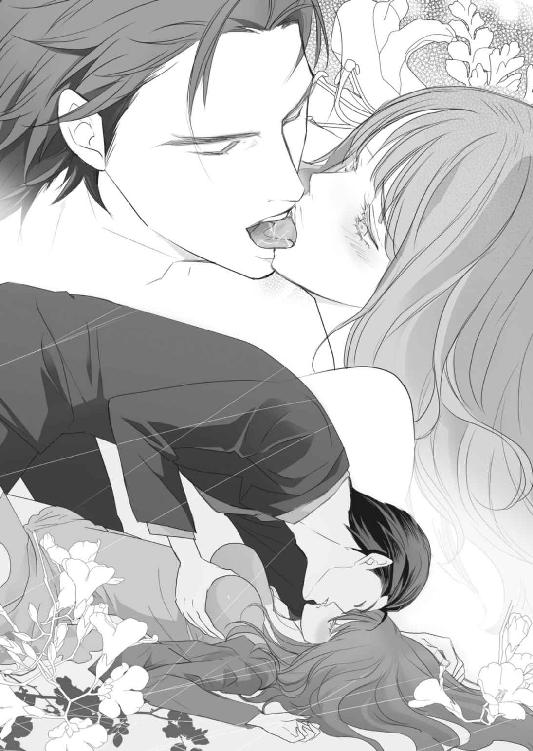
美月の肌はもともと白いが、普段、日に当たることのない場所は雪のように白く、青白い血管が透けて見える。蛍光灯の下では、それがより如実になる。
その白い膨らみを手で揉みしだき、中心で赤く色づく乳首に舌を這わせた。
「あっ......ひぅ」
上がりかけた声が、途中で止まる。美月が口を塞いだからだ。
隣に聞こえるのを気にしているのかもしれない。泰孝はそんなことはおかまいなしに、硬くなっていく乳首にむしゃぶりつき、舌先で飴玉のように弄んだ。
泰孝の下で、細い腰がくねる。肌や乳房、乳首を甘嚙みすれば、電流でも走ったように華奢な体がびくびくと跳ねた。
この綺麗な生き物の痴態をもっと見たくて、スカートをたくし上げ、ブラジャーと同じ色のショーツを乱暴に脱がす。既に濡れていたのか、股と下着の間で蜜が糸を引いて滴った。
「感じやすいのか？」
からかうように言い、薄い毛に覆われた襞に指を差し入れる。美月は顔を真っ赤にし、涙目になって首を振る。違うと言いたいのだろうが、視覚的に男を煽るだけの行為に、泰孝は喉を鳴らした。
白い肌に嚙みついて、思うように犯し、泣かせ乱れさせてやりたい。突き上げてくるそんな衝動のまま、乳房より白い肌をしている脚の間に顔を埋めた。
とっさに閉じようとする脚を左右に大きく開き、襞と蜜口に舌を這わせる。いやらしい蜜を啜り、襞を舌先で押し開き、中心の肉芽を甘嚙みすれば、手で抑えていたはずの美月の声が漏れる。快楽に流され、口を塞いでいた手が外れてシーツの上に投げだされていた。
「おい、声が漏れてるぞ。隣に聞こえてもいいのか？」
意地悪く言うと、美月は慌てて口に手をあてがう。だが、しばらくすると泰孝の愛撫に翻弄され、嬌声を響かせた。
「ああぁんっ、はぁ......ンッ！」
泰孝ももう指摘しなかった。悩ましい喘ぎ声を堪能しつつ、広げた蜜口に指先を忍びこませる。敏感な入り口がきゅっとすぼまり、指を奥へ誘いこむように内壁を痙攣させる。その中に、指を一気に根本まで突き入れた。
びくんっ、と美月の腰が跳ね甘い声が上がった。
「ひゃぁ、あっ！ いやぁ！」
指で中を犯しながら、赤く熟れた肉芽を甘嚙みする。その刺激ですぼまる蜜口をこするように強引に指をだし入れすると、美月はシーツに爪を立て乱れた。
いやらしい濡れた音に混じり、高い声が部屋に響く。
「だめぇ......ああぁ、あぁ......ッ」
美月の背がぴんっとのけ反り、びくんっと震えて失墜する。指をくわえた蜜口は痙攣した後に緩み、中から蜜をあふれさせた。
達したのだろう。シーツの上で余韻に震える美月が、涙目で乱れた息に喘いでいる。その姿に、泰孝も我慢ができなくなった。
だが、ベルトに手をかけたところで、隣の部屋の壁がどんっと鳴る。音が聞こえていて、うるさいと言いたいのだろう。
壁から美月に視線を移すと、羞恥で顔を真っ赤にして起き上がった。てっきり、これで終わりにしようと言いだすのかと思ったら、ベッドの下に放置していたハンドバッグを漁り、ハンカチを取りだして言った。
「こ、これで......猿ぐつわして」
差しだされたハンカチを凝視し、泰孝は固まった。
なに言ってんだこの女は？
白いレースのハンカチと、猿ぐつわという生々しい単語の組み合わせに眩暈がした。隣に声が聞こえるから、口を塞いでくれということなのだろうが、そこまでして抱かれる必要も意地になる必要もないというのに。
「猿ぐつわの仕方、私わかんないから......してほしいんだけど」
しおらしく真っ赤になりながら、本当になにを言ってるのだろう。妙に可愛くて襲いかかりたくなるが、逆に頭も冷えてきた。
もちろん職業柄、正しい猿ぐつわの仕方も知っている。口いっぱいに布をつめこみ、その上から布が飛びださないよう、布やタオルで塞いで縛ればいいだけだ。
だが、泰孝にそういう趣味はない。そもそも、そんな苦しいことをしたらかわいそうで、欲望が萎えてしまう。
だからといって、美月のあられもない声を隣に聞かせるのも癪だ。泰孝が手で口を塞ぐだとか、色々考えてみたが、頭はどんどん冷静になっていき、そういう気分ではなくなった。
泰孝は、美月の手からハンカチを取り上げると、ベッドの下に蹴り落としていた布団をその体にかけてやった。
「ここじゃ落ち着かないから、また今度な。ともかく、仕事は受けてもらうから。文句言うなよ」
そう言い残し、呆然としている美月を置いて部屋をでた。鍵は、前に勝手に作った合鍵で施錠して、舎弟の待つ車に向かう。途中、なにもないところで転んだのは、思ったより動揺していたせいだろう。
６
「今日はきませんね......どうしたんでしょうか？」
店長のいない店長室のソファでスマートフォンを弄っていると、様子を見にきた黒服が心配そうにぽつりと零した。
泰孝以外の客に、ヘルプでもつくことができない美月は、客から顔が見える待機席にいられない。そのため、もっぱら店長室で待機を命じられている。いつも読書やスマートフォンでインターネットをしながら待っている美月は、ソファに置かれた文庫本を見下ろす。
今日に限って、一冊読み終わってしまった。いつもなら、途中で泰孝がくるのに。壁にかかった丸時計を見れば、閉店までもう一時間もない。
「そんな毎晩、暇じゃないんでしょ。今までがおかしかったんじゃない？」
泰孝は昼間は真面目に仕事をしているらしい。一応、表向きは堅気の会社で社長だが、定時には出勤していると聞いた。もちろん業務も普通にこなすという。帰りはだいたい定時で退社するらしいが、残業もする。もうそうなると、なにをもってしてヤクザなのかわからなくなるが、いわゆる経済ヤクザというものなのだろう。
そして泰孝は、仕事が終わってから美月のいる店にやってくる。来店する時間はまちまちで、早かったり遅かったり。
今夜は残業か用があって遅いのかもしれない。ただ、もう閉店まで三十分ほどしかない。ここまで遅いのは初めてだ。
「......なにかあったのかしら？」
「やっぱ、心配ですか？」
うっかり零れてしまった言葉に、黒服がにやけて聞いてくる。それを睨みつけ、ソファから立ち上がった。
「着替えてくる。このぶんじゃ、店で接客なしでアフターでしょ」
閉店間際でも接客もするしオーダーもできる。だが、どうせ泰孝とはいつもアフターにいくのだから、そんな忙しないことをしなくてもいい。
泰孝がやってきたらすぐに店をでられるよう、美月はさっさと更衣室で着替え、荷物をまとめて店長室に戻ってきた。だが、ついに閉店しても男はやってこなかった。
「連絡もないわけ？」
ハンドバッグから取りだしたスマートフォンを見下ろし、苛々と呟く。メールの一つぐらいよこす時間もないのだろうか......そう考えて、ハッとして顔を上げる。
キャバクラのキャストとして働くなら、自分からメールを送るのが当然だ。それなのに、泰孝相手だと甘えた考えをしてしまう。客とキャストとは少し違った関係なせいもある。
それにしても、あちらから連絡がくるのが当たり前だと思うようになるなんて、キャスト失格だ。
この間のことがあったせいで、無意識に恋人関係だとでも勘違いしてしまったのだろうか。美月のアパートで、仕事を受ける受けないで揉め、中途半端に抱かれて放りだされたことを思いだして、恥ずかしくなった。
「ああ、もうっ！ 自分からメールすればいいだけじゃない」
ついこの間までは、足が遠のいた客に営業メールを打つのは普通だった。泰孝もそんな客の一人と思えばいい。
一度も使ったことはないが、美月は登録されている泰孝のメールアドレスを呼びだす。けれど、いざ文字を打とうとすると文面が思い浮かばない。
どう書きだせばいいのだろう。今更、テンプレ的な営業メールを送る仲でもない。
眉間に深い皺を刻み、しばし考えこんで唸る。結局、美月は一文字も打てずに、スマートフォンを乱暴にハンドバッグに突っこんだ。
それからすぐ、仕事途中の店長が部屋にやってきた。なんでも、ちょっとしたトラブルがあり、泰孝はこれなくなったらしい。今夜は会えないが、自宅まで舎弟の車で送らせるから、店で待っていてほしいと伝言されたと言う。
その迎えがくるまでこの部屋で待っているよう言い残し、店長はまだ仕事のある店内に戻っていった。美月は十五分ほどは大人しく待っていたが、だんだんと我慢がならなくなってソファから立ち上がった。
いったいどれだけ待たせれば気がすむのか。開店から閉店まで七時間は待ちぼうけしている。こんなことなら、もっと早くに店にこれないと連絡をくれれば、早退もできただろう。長時間、一人で待機していることが、どれだけ退屈で苦痛なことか、泰孝は知らないのだ。その上、連絡は店長に伝言。なぜ美月に連絡しないのか。待たされたのは自分なのに、のけ者にされたようで面白くない。
荷物を持って店長室をでる。閉店後の売上計算や片付けなどで店内は忙しなく、誰も美月がでていくのを引きとめない。キャストの女の子も着替えたり、アフターのためにメイクを直したりで更衣室にこもっている。
美月は誰とも顔を合わせることなくエレベーターに乗り、地下の店から地上にでた。店が入っているビルの前には、まだキャスト送迎用の車もきていない。そもそも、送迎車に乗る気もなかった。毎晩ＶＩＰルームで泰孝の接待をするばかりで、店にでていない状態だ。他のキャストと同じ車内では、居心地の悪い思いをするだろう。
繁華街を駅に向かって歩き、大通りでタクシーを拾う。
なぜ、わざわざ舎弟に送らせる必要があるのだろうか。子供ではないのだから、一人で家まで帰れる。
色々考えると、ふつふつと怒りがこみ上げてきた。不貞腐れて窓の外を睨んでいる間に、美月のアパートの前に着いた。
気持ちの整理はまだつかない。腹立ち紛れに、乱暴にドアに鍵を突っこんで開き、パンプスをばらばらに脱ぎ捨てて部屋に上がる。持っていた荷物も投げだし、電気をつけた。
「......え？」
美月は違和感に目を丸くする。一瞬、なにが起きているのか頭がついていかない。
でかける時、閉めたはずの部屋とキッチンを隔てるガラス戸が開いている。その向こうは、泥棒でも入ったように荒らされていた。
何度か瞬きし、現状を理解して脈拍が早くなる。すぐに逃げなければと思ったが、動転していて一拍動きが遅れる。その隙をつくように、トイレのドアが開いて見知らぬ男が飛びだしてきた。スキンヘッドの大柄な中年で、ひと目で堅気の人間ではないとわかった。
「き......ッ！」
叫び声を上げる前に正面から口を塞がれ、強い力で後ろに押される。背中がどんっと壁にぶつかった。
痛みに顔を歪めていると、男が低い声で言った。
「おいっ、ブツはどこだ？」
口を塞がれて答えられるはずもないのに、この男は馬鹿なのかと思いつつ、首を横に振る。するとやっと手は外れたが、代わりに首を絞め上げるように摑まれ、つま先立ちになる。
「......くぅッ」
苦しさに呻くが、男は耳元で大人しくしろと言う。この体勢では叫び声を上げることもできない。
「知らないのか？ アレだ。お前、桐生の女なんだろっ？」
「ちがっ......女なんかじゃ......」
否定すると首を絞める力が強くなり、美月の顔が熱くなってきた。息もできなくて、意識が朦朧とする。
「噓つくんじゃねぇ！ お前が持ってんだろ？ 知らなくても、なんか桐生から預かったもんがあんだろ？ ああっ？」
答えろ、と言うようにがくがくと体を揺さぶられた後、手の力が緩み、足裏が床につく。やっと呼吸ができて、目の前がくらくらと揺れた。
「さあ答えろ！ 言わないなら、もっと酷い目にあわすぞっ」
ドスのきいた声で脅されるが、アレがなんなのかさっぱりわからない。泰孝から怪しいものを渡されたことだってなかった。
今日は泰孝のせいで散々だ。こんな状況だというのに、腹が立ってしかたなかった。
美月は少し咳きこみながら、部屋の奥を指さした。怪しいものは持っていないが、前にもらったまま返せずにいる札束がある。とりあえずそれで時間稼ぎをして、逃げる隙をうかがうしかない。
「あん？ あっちか......ついてこい」
首から手が離れ、美月は強く咳きこんでよろめく。その腕を男が乱暴に引っ張ったところで、キッチンの外廊下に面した窓が唐突に割れた。
次にその穴から放りこまれたなにかが、流しにごとんっと落ち、赤い煙を噴きだした。
「なんだっ！」
煙はあっという間にもうもうと広がって、視界を奪う。男の顔は見えないが、近くで「なんだ？ 発煙筒か！」という声がして、それに重なるように玄関がなにかでこじ開けられるような音がした。乱入してきた誰かが横を通り過ぎる時、煙の中にバールが見えた。
「うわっ！ なんだ貴様ッ！」
男の声と揉み合う音、殴る音、なにかが倒れる音がして、摑まれていた腕が解放されるが、すぐに逆の腕を引っ張られた。
「こっちです！」
煙の向こうから聞こえてきたのは、いつも泰孝の車を運転している若い舎弟の声だった。腕を引かれるまま外にでる。男が追いかけてくる気配も声も聞こえないところをみると、失神させられたのかもしれない。
それでも追いかけられるように、アパートのすぐ目の前に停まっていた車に乗りこむ。すぐに発進した車内で、美月はただ茫然としていた。
しばらくして、息が整った舎弟が口を開いた。
「大丈夫ですか？ 水、飲みます？」
舎弟は助手席のグローブボックスからミネラルウォーターを取りだすと、美月に差しだす。それを有り難くいただき、一口飲んでほっと息を吐いた。
「アパートには戻れませんので、とりあえず桐生さんのマンションに向かいますね。あ、それからこれ」
さっき車に乗りこむ時、助手席に放っていたものを舎弟が手繰り寄せた。美月のハンドバッグだ。
「あ......ありがとう」
よくあの混乱で、持ちだせたものだ。
「これに貴重品が入ってると思って、とりあえず摑んで持ってきました。なくなってるものはないですか？」
言われるままに確認する。財布にスマートフォン、それと名刺入れにハンカチ。アパートの鍵はなかったが、しばらく戻れそうにないから必要ないだろう。
それに舎弟にドアを壊されたようなので、鍵があっても使えない。ドアも鍵も交換だろう。そもそも、もう怖くてあのアパートには住めない。
確認をすませ大丈夫だと告げると、舎弟は良かったと呟きバックミラー越しに微笑んだ。
「それから、後でアパートには俺が確認にいきます。管理人の対応もしておきます。多分、さっきの男は逃げちゃってると思いますが。その時に、必要なものがあればとってきますよ。どうします？」
衣類などは購入するので、それ以外でと言われたが、特になくて困るものもなかった。通帳などの普段使わない貴重品は、銀行の貸金庫に預けてある。その貸金庫の鍵とカードは、財布に入れて常に持ち歩いていた。
あとはノートパソコンぐらいだが、スマートフォンがあればじゅうぶんなので必要ない。学生の頃はレポートや論文を書いたり、調べものをする時に使っていたが、卒業してからパソコンを立ち上げることは少なくなった。スマートフォンがあれば、ほとんどの用事がすむからだ。
それにしても、この舎弟とまともに話すのは初めてだった。こんなに物腰柔らかな口調だとは知らなかった。
彼には、毎晩アパートまで送ってもらっているが、泰孝と二言三言話しているのを聞いたぐらい。表情もあまり変わらず物静かなので、もしかしたら暴力団関係者ではないのかもしれないと思っていた。
けれど、とっさの行動力と判断力。暴漢への慣れた対応を考えると、やはり暴力と馴染みのある生活をしているのだろう。
「ありがとう。これだけあれば、大丈夫よ」
舎弟は「わかりました」と頷いた後、またいつもの寡黙な運転手へと戻っていった。そして泰孝のマンションに着くまで、一言も喋らなかった。
舎弟の運転で連れてこられたのは、前にきたことのある泰孝のマンションとは違っていた。都市部ではなく、臨海地域の高層マンションで、広さは１ＬＤＫだ。
リビングダイニングは十五畳ほどあり、ソファセットとダイニングテーブルが置かれている。キッチンは真新しく、リビングの隣の八畳ほどの寝室には、綺麗にベッドメイクされたダブルベッドがある。
インテリアは全体的にベージュとブラウン、差し色にモスグリーンが使われ、シンプルで上品にまとめられている。まるでモデルルームのように整えられた生活感のない室内は、誰かが使用した形跡はまったくなかった。
ウォークインクローゼットやシュークローゼット、その他のどの収納を開いても空っぽ。唯一、冷蔵庫の中にミネラルウォーターがあるだけだ。
「なにここ？ セカンドハウス的ななにか？」
冷蔵庫の扉を閉じた美月は、首を傾げて眉をしかめる。愛人用、という単語が頭に浮かびむしゃくしゃした。
とりあえず、どういうことか聞こうと玄関に向かった。部屋の鍵を開き、美月を中に入れた舎弟は玄関の外にいるはず。なにか用があれば外にいるので、呼んでくださいと言っていた。
それにしても、玄関前に待機とはどういうつもりなのか。いくら他の部屋から死角になる位置に玄関があるといっても、普通ではない状況だ。
「ねえ、この部屋ってなんなの？」
そう言って玄関ドアを開くと、ちょうど美月を背にして立っていた舎弟が振り向いた。
「あ、美月さん。そんな唐突にドアを開いたら駄目ですよ」
「はぁ？ なに言って......って、誰？」
舎弟の肩越しに、段ボール箱やらスーパーのビニール袋やらを下げた数人の男性が目に飛びこんできた。どう見ても、普通の職業をしているとは思えないような風体の男たちだ。
そのうちの一人が、玄関前に折り畳みの丸椅子をそっと広げて置く。おそらく見張り用の椅子なのだろう。
「ああ、彼らは買いだしをしてきてくれた若い衆です。とりあえず、必要になる日用品と食料、一週間分です。ちょっと失礼しますね」
舎弟はそう言うと、美月を奥に追いやり玄関ドアを大きく開く。荷物を持った男性たちは、無言で玄関に段ボールなどを置いてすぐに立ち去った。
それを見送った舎弟は玄関先で、美月を呼び寄せて丁寧に注意を呼びかけた。ドアを開く前にインターフォンのモニターで不審者がいないか確認、その後、ドアガードをかけたままドアを開き、安全か確認してから外にでるようにと。
「なにがあるかわかりません。僕が、暴漢に倒されていることもあります。なので、みだりに玄関を開かないでくださいね」
「......うん。そう」
今現在、そこまで警戒しなくてはいけない事態なのかと、表情が引きつった。
「それから、玄関から逃げられない場合は、部屋にある火災警報を鳴らしてください。すぐに管理人が駆けつけ、消防や警察に連絡がいきます」
もちろん警備会社にも連絡がいくと言う。そして他にも、バルコニーの避難梯子を使って逃げることなど、色々な逃げ道を教えられた。
「わかったわ......」
神妙な面持ちで聞き終わると、舎弟は爽やかに微笑んで玄関を閉じ、外から鍵をかけた。そういえば、この部屋の鍵をもらっていない。
「くれって言っても、渡してくれなさそうだけどね」
美月が一人で外にでかけることは許されていないのだろう。そういう雰囲気だ。
「とりあえず......疲れたし、シャワー浴びて寝よう」
泰孝のことや、アパートの暴漢について聞き忘れたが、聞いても答えてくれそうにもない。そのうち泰孝がやってくるだろうから、その時に問いつめるしかないだろう。
一つ溜め息をつくと、段ボールを開いた。
荷物を物色してタオルとバスローブを見つけた美月は、シャワーを浴びた後、髪を乾かす気力もなくベッドに倒れこむようにして眠りに落ちた。暴漢のショックが和らぎ、疲れが押し寄せてきたせいだろう。瞼を閉じた瞬間に意識をなくしていた。
その目が覚めたのは、窓の外が白み始め、部屋が薄明るくなった頃だった。眠りに落ちたのと同じぐらいの唐突さで、ぱっと瞼が開いた。
「おっ......悪い。起こすつもりはなかったんだ」
ちょうど視線の斜め上に男の大きな手があった。指先に美月の茶色い髪が絡んでいる。頭を撫でていたのかもしれない。その気配で意識が浮上したようだった。
「......んっ、桐生さん？」
「寝てていいぞ」
「ううん、起きる」
小さく欠伸をして起き上がった美月は、目をこすりつつ泰孝を見上げる。ベッドに腰かけていた男は、気まずそうに視線をそらした。
自分を見下ろすと、バスローブの前がはだけて、素肌が露わになっている。慌てて前をかき合わせ、バスローブの紐を結び直す。
もう何度も裸は見られている。今更恥ずかしがることなどないのに、泰孝の態度につられて美月も頰が熱くなった。なぜか平然とした態度をとってくれなかった男への不満は胸の内にしまいこみ、口を開いた。
「どういうことか教えてくれる？」
寝起きで声はかすれていて、頭もまだぼんやりとしている。けれど、すっきりするのを待っていては、泰孝がことをはぐらかしてどこかへいってしまう気がしたのだ。
「あの暴漢はどこの誰？」
泰孝が視線をそらしたまま、言いにくそうに唇を引き結ぶ。もう調べはついているのだろう。
美月はサイドテーブルに置きっぱなしだった、飲みかけのペットボトルの水で喉を潤してから、きつい口調で言い放った。
「私には知る権利があると思うんだけど？」
しかたないとでも言うように、ふう、と泰孝が嘆息した。
「......レークスに覚せい剤を横流ししてた組の人間だ。レークスは脱法ハーブだけじゃなく、覚せい剤にも手をだしてたみたいだな」
「組？ 桐生さんのとこの？」
「違う、田吹会じゃない。うちは、覚せい剤はやらん。まあ、表面上はな」
裏でやっている人間はいるということか。だが、見つかれば厳罰があると、暗に言っているのかもしれない。
ともかく暴力団関係に深入りする気はないので、美月はそのへんは聞かないでおいた。
「その横流ししてた組......」
「宗山組だ」
当然だが、聞いたことのない組だ。泰孝は小さな組織だと言い足した。
「で、宗山組がなんで私を襲うのよ？ それに、暴漢がアレとか言ってたけど......」
おそらく、アレは「覚せい剤」のことだろう。
「実は、お前をさらった連中を締め上げた後、総長の盛岡のとこまで乗りこんでお灸を据えてやったんだがな」
泰孝が渋い表情で、二人が出会うきっかけになった誘拐事件のその後について話しだす。
「その盛岡やレークスが溜まり場にしてたバーから、覚せい剤が大量に消えたらしい」
宗山組から横流しされていた覚せい剤は、そのバーでよく取り引きされていたそうだ。また、バーのオーナーや店員もレークスのメンバーで、売買の手伝いをしていた。
バーでは、客からトランクや大型の荷物などを預かるサービスがある。その際に、覚せい剤の入ったトランクを宗山組から、レークスからは金の入ったトランクを預かる。両者はばらばらに帰るが、その時、店側はレークスに覚せい剤の入ったトランク、宗山組には金の入ったトランクを渡すという算段になっている。
そして泰孝の舎弟が中心となった田吹会の人間が乗りこんだ日も、その取り引きがされていた。だが、その日に限って、レークスは必要なだけの金を用意できなかった。他でトラブルがあり、そっちに金を用立ててやったせいだ。
事情を聞いた宗山組は、売買は次回ということにして、預けていた荷物を引き取って帰るはずだった。だがそこに、田吹会の人間がやってきた。他の組と揉める気がなかった宗山組の人間は一旦隠れ、様子をうかがっていたらしい。
田吹会の人間は、盛岡をはじめその場にいたレークスのメンバーに、人のシマであまり勝手なことをするなと釘を刺した。
「で、まあ......適当に締め上げて、うちの者は去ったんだがな」
実際になにをしたのか、泰孝は言葉を濁して誤魔化す。美月も特に知りたくもなかったので、聞き流した。
「その後に覚せい剤が入った宗山組のトランクが忽然と消えてしまったらしいんだ」
「要するに、田吹会がその覚せい剤を盗んだって疑われてるわけ？」
「まあ、そういうことだ。理解が早くて助かる」
泰孝はそう言うと微笑んで、ぽんぽんと美月の頭を撫でた。
別に褒められるほどのことではない。単純な話なので、すぐに合点がいっただけだ。
撫でるついでに、乱れていた髪を整えだす男の手を、美月は振り払った。
「で、私が襲われたのはどういうわけ？」
薄々、理由は察したが、あえて詰問する。ベッドに座り、正面を向いたままの泰孝の横顔を睨み上げる。こちらに視線を向けようともしない男は、また言いよどみ、引き結んだ口元を歪めていた。
「あの暴漢、私のことをあなたの愛人だろって言ってたわ」
「......嫌な話の振り方をしてくる奴だな」
「私がそういう女だって、もう知ってると思ってたわ。それに、そっちが素直に言えばいいだけの話じゃない」
なにをそんなに躊躇するのか、美月にはわからない。それとも隠しておきたいことがあるのだろうか。じっと見つめ続けていると、泰孝は渋い表情で頭をがりがりとかき、観念したように口を開いた。
「ああ、お前の言う通り、宗山組はお前を俺の愛人だと勘違いしている。それで、なくなった覚せい剤はお前が隠し持っていると思ったんだ」
やっぱりそういうことか。美月は大きく溜め息をつき、ベッドボードに背を預けた。
宗山組は最初、レークスの総長、盛岡を責めた。覚せい剤の保管の仕方に問題があったのではないか。どう落とし前つけるんだと。これに対しレークスメンバーと盛岡は、金は払うと言ったそうだ。けれどそれはその場を取り繕うための言葉で、蜘蛛の子を散らすように逃げてしまったらしい。
宗山組も金が用意できるまでの人質もとったのだが、もともと組織ではない半グレ集団。結束力も仁義もなにもない彼らは、仲間を見捨てて逃げ、身を隠してしまった。もちろん取り引きのあったバーも閉店。総長の盛岡は、どこかに雲隠れしている。
彼らを捕まえようにも、横も縦も繫がりが希薄なので、情報自体が入手困難だった。こういう軽くて曖昧な関係が、半グレ集団の特徴でもあり利点でもある。
結局、損をしたのは宗山組。しかも半グレという中途半端な集団にしてやられ、面目をつぶされた。他の暴力団関係者からはいい笑い者にされている。
そこで矛先が向いたのが田吹会の泰孝だ。泰孝本人は、その取り引きのあったバーに出入りはしていない。だが、音頭を取って乗りこんだのは泰孝の舎弟が中心だった。
もちろん表だって、泰孝が盗んだと宗山組が言ってくるようなことはない。そんなことをすれば、田吹会との抗争に発展しかねないからだ。たしかな証拠もなく、いちゃもんをつけるほど宗山組も愚かではなかった。
そもそも多くの組織を傘下に持つ田吹会と、弱小の宗山組では、組織の規模が違う。下手に抗争になれば、宗山組などひとたまりもない。
だからといって、面目をつぶされたまま引き下がるわけにもいかないのがヤクザの世界だった。今回のレークスとの取り引きに関わっていた宗山組の人間が、汚名を返上するため暴走しているらしい。
「ヤツは、俺の舎弟数人に接触してる。覚せい剤を隠し持ってるんじゃないかって。他にも家に忍びこんで、空き巣まがいのことをしている」
美月のアパートに侵入した暴漢が、そいつだと泰孝は言った。
「それで、その人は？」
「まだ見つかってない。宗山組は単独行動で暴走されて困っているというスタンスだが、裏で糸を引いているのはたしかだ」
泰孝は、美月がサイドテーブルに戻したペットボトルを手に取り、水を一口含んでから話を続けた。
「そういうわけだ。ヤツがなにをするかわからない。危ないから安全のために、しばらくここで大人しくしててくれ」
「だいたいの状況は理解したわ。でも、ずっとここにいろなんて困る。仕事はどうするの？」
「店のほうは、俺から事情を説明しておく。しばらく休んでもペナルティにはならない」
「そっちのことじゃないわ。この際、キャバクラはどうでもいいの」
美月がなにを言いたいのかわかるのだろう。泰孝が小さく唸る。
「小夜さんが紹介してくれる会社のことはどうなるの？」
「......それは保留だ」
あんな強引に仕事を受けることを承諾させておいて、煮えきらない態度の男に、美月の言葉がきつくなる。
「保留って、要するになかったことになるんじゃないの？ そう長く保留にしてもおけないでしょ。他に良い人が見つかれば、今回の私の話は流れるってことよね」
泰孝がなにも言わないのを肯定ととらえ、溜め息が零れた。
「面接の日取りだって決まってたのに......」
つい不貞腐れた感じの声が漏れてしまうのは、期待したぶん落胆が大きいせいだ。
今回の覚せい剤が盗まれた件について、泰孝は悪くない。とばっちりで疑われているようなものだ。
けれど美月が襲われたのには、少なからず泰孝に責任がある。周囲から、愛人だと誤解されるような行動をとってきたのは彼だ。こっちが何度も遠ざけようとしているのに、やたら絡んで接触を持ってきた。
そんな泰孝のせいで、襲われ行動を制限されるのは納得がいかない。まともな就職の話も、流れてしまうことになった。
だが、その就職の口を持ってきてくれたのもまた泰孝だ。なんだかんだと世話をされ、店では貢がれて得をしている。ただその反面、今回のようなことが起きてしまう。
泰孝に対して、感謝もあるけれど苛立ちもある。そして、そんな男を前ほど強く拒否できなくなっている自分にも苛々が募っていた。
泰孝を突き放したいのに、傍にいる時の安心感を手放せないでいる。
頭ではヤクザとの付き合いなんて続けていては駄目。深入りは危険だと思うのに、気持ちはどんどん傾いていっている。
ヤクザでなければとか、本当は優しい人だとか、なにか事情があってこの世界に足を突っこんでしまっただけなんだとか。傍にいるための理由を作りだし、離れる時期を引き延ばしている。
でももう、これ以上はいけない。泰孝のせいで、身に危険が迫った。次はなにがあるかわからないだろう。
今の美月に、男と運命を共にする覚悟なんてない。なにがあっても傍にいたいというほどの想いだってない。
まだそう思える今のうちに逃げださないと、きっと自分は......。
ふと気付くと、美月は無意識に爪を嚙んでいた。昔の癖だ。まだ、治っていなかったことに苦笑すると、ベッドが揺れた。見れば、泰孝が体をこちらに向け、頭を下げていた。
「本当にすまなかった。俺のせいで......新しい就職口は、また探してきてやる。絶対に、だから......」
「もう、いいわ。あなたには頼らない」
真摯な男の態度に心が揺れる。胸が切なく締めつけられ、縋りたくなる気持ちを抑えつけ、なるべく素っ気ない声を作った。
「だいたいヤクザのあなたに就職を斡旋してもらったのが間違いだったのよ。やっぱり、ヤクザなんて碌なもんじゃないわね」
頭を下げたままの泰孝の肩が、ぴくりと震えた。怒ったのかもしれない。
「執行猶予が終わったらすぐ、海外にいくわ。そこまでは追ってこないでしょ？ その時は、空港までの護衛をお願い」
今回の騒動が落ち着くのはいつになるかわからない。幸い、執行猶予ももうすぐ終わる。そうなれば自由の身だ。
それならいっそ、海外で働けばいい。子供の頃から家族でよく海外旅行にはいっていた。中学高校と、短期間だが留学もしたことがあり、英語も問題なく話せる。仕事をしたことはないが、なんとかなるだろう。いや、なんとかするしかないのだ。
それに海外ならば、日本にいる時みたいに自分の前科で職を追われる不安を感じないでいられるのではないか。そう考えるだけで、気持ちが楽になった。
なんでもっと早くに思いつかなかったのだろう。前を向いて歩いているつもりだったが、自分はずっと狭い世界に囚われていただけだったのかもしれない。
「いく前に用意したいものがあるけど、買い物にはいけないのよね？ リストを作るから、あなたの舎弟に......」
「駄目だ！」
ベッドの上で小さく悲鳴を上げるほどの怒鳴り声が、突然飛んできた。声の威圧感だけで、体が震え上がった。
ゆっくりと頭を上げた男は、これまで見たことがないような怖い顔をしていた。そういえば怒鳴られたのも初めてで、美月はすくみ上がって動けなくなった。
「ふざけんなっ、なにが海外だ。そっちまで追いかけていったらどうすんだ！ なんかあってからじゃ、遅いんだよ！」
ずいっ、と男の顔と体が迫ってくる。怒鳴り声が、壁や家具をびりびりと振動させ、美月の頭を真っ白にした。
怖いとか、そういう感情も吹き飛んでしまうぐらい、男の気迫に押され、なにも考えられない。
「俺が守ってやるって言ってるのに、なにが不満なんだ......くそっ！」
目を見開いて男を凝視していると、どんっと壁に手をついて、美月を囲いこんでしまった。
「絶対に、どこにもいかせない。ここにいろ」
怒鳴り声は徐々に低くなり、威圧感だけを増して囁き声に変わる。落ちてくる影が暗く、そして大きくなっていく。男の鋭い眼光に見下ろされ、瞬きもできずに見つめ合った。
「俺の傍から離れるな......」
まるで愛の告白のような言葉は、合わさった唇の間で消えていった。
始めから奪うような口付けだった。息苦しくなるほど舌で口中をまさぐられ、逃げられないように壁に体を押しつけられる。もがいても顎をとられ、嫌がる素振りをとれば唇に嚙みつかれた。
痛くはないけれど、驚いて小さく悲鳴を上げれば、嚙まれた場所を優しく舐められ、今度は甘嚙みされる。じんっ、と唇から痺れが体の芯に到達して疼く。強引な男が怖くて怯えていたはずなのに、淫らな欲望に肌が火照りだす。
泰孝に抱かれ、触れられ、覚えてしまった快楽に体が引きずられる。それに抵抗するように、美月は男の体を押しのけようとその肩を殴りつけた。
「ちっ......大人しくしろ」
「きゃぁ......！ いやぁ！」
暴れる腕を、泰孝がいとも簡単に拘束し、目の前でひとまとめにする。男の圧倒的な力に美月は怯み、涙目になった。まるで体の自由がきかない。
そしていつの間にかほどいたバスローブの腰紐で、美月の両手首を体の前で縛り上げた。
「やっ、いや！ 解いて！」
腹が立って、縛られた手で殴ろうと振り上げる。だが、くるりと体を反転させられ拳は空を切った。
「お前のやりそうなことぐらい、お見通しだ」
男の低い声がして、耳朶を嚙まれる。ぴりっと走った甘い痛みに身をすくめると、後ろから抱きしめられ、胡坐をかいた泰孝の脚の間に乗せられた。
「あっ......ひゃぁっ、だめぇっ」
背後から回った大きな手が、露わになった乳房を鷲摑みにする。背筋を駆け抜けた快感に、美月は甘い声を上げて身悶えた。乳首を摘ままれ荒々しく揉みしだかれ、あられもない声がひっきりなしに漏れてしまう。
他人に触れられることにまだ慣れていない美月の肌は、少しの刺激にも敏感に反応する。その肌を乱暴に蹂躙され、息もできないほどの快感に涙があふれる。
逃げたい。けれど、襲ってくる淫らな痺れに下肢は震え、腰が砕けて動けなかった。手が拘束されているせいで、なにかを摑んだり縋ったりして快楽を逃がすこともできなくて、ただ喘ぐだけ。
せめて腕だけでも自由になればともがくが、どういう結び方をしたのか紐はまったく緩まなかった。試しに、息を乱れさせながら紐を嚙んでみる。
「無駄だ。そう簡単に外れないよう結んでる。こういうことは、慣れてるんだ」
険呑な気配をはらんだ声に、ぞくりと腰が震えた。普段は優しい泰孝の怖い面を垣間見て怯むのに、なぜかその恐ろしさにも体はいやらしく反応してしまう。
「ほら、歯が痛むから無駄なことはやめろ」
紐に嚙みつく美月の顎をとらえ、強引に後ろを向かせる。
「んっ、んぁ......はぁッ、いやぁ......んんぅッ」
苦しさに喘ぐと、唇を重ねられ、激しく貪られる。無理な体勢に、息がうまくできなくて頭がくらくらした。
乳房を嬲っていた片手が、下肢へ滑るように下りていき、濡れたショーツの上をなぞる。薄い布に貼りついた肉芽が、男の指先に撫でられ、びくびくと震えた。あふれた蜜は、ショーツから漏れて内腿の柔らかい肉を濡らす。
「すごいな......もう、こんなに濡れてやがる」
からかうような声に、美月はなにも言い返せない。やっと甘く苦しいキスから解放され、小さく喘ぐ。ショーツの隙間から指が侵入してくる。濡れた音を立てて襞を乱し、痙攣する蜜口を撫でる。
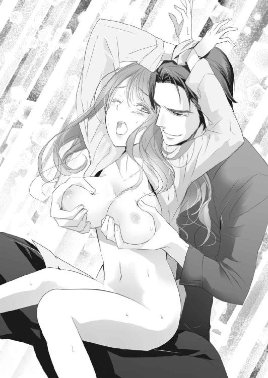
「あはぁ、ああぁ......あんっ、いやぁ......ッ！」
太い指が一本、ずぶずぶと蜜口に入ってくる。尾てい骨のあたりにぞくりと甘い痺れが走り、シーツに波を作っていたつま先が跳ねた。
「ひ......ッ、痛いっ......！」
濡れていてもまだ狭い中に、強引に二本目の指が入ろうとする。押し開かれる痛さに、美月の体がこわばる。だが、すかさずもう片方の手で乳房を揉みしだかれ、その刺激でこわばりが緩んだところに、指が奥まで一気に突き入れられる。
「あああぁ......ッ！」
狭い中を押し広げられる。鈍い痛みと圧迫感に身をよじり、高い声を上げた。
きついけれど、蜜のぬめりに助けられて侵入した指は、吸いつく内壁を広げるようにかき回す。何度も円を描くように中を嬲られ、ぎりぎりまで引き抜いた指を一気に突き入れられる。
固くしまっていたはずの蜜口は、ぐちゅぐちゅといやらしい音を響かせて緩んでいき、滴らせた蜜でシーツを汚す。いつしか疼痛は甘い痺れに変わり、指を飲みこんだ蜜口を淫らに痙攣させた。
「はぁ......ああぁ、あんっ......いい。ああぁ......ッ」
さっきまであった男への恐怖は薄れ、美月は快楽を追うことしか考えられなくなっていた。はあはあと息を乱れさせ、寄せては返す快感の波に溺れる。もっと気持ち良くなりたくて、男の指の動きに合わせて腰が無意識に揺れてしまう。でもそれだけでは満たされなくて、解放されずに溜まっていく熱に体が焦れる。
少しでも熱を散らそうと、つま先でシーツをかき回し、甘えるように背中を男の胸にこすりつけた。
「んっ、あぁ。もっと......ひゃんッ！」
急に体を前に押し倒される。乱暴ではなかったが、急な体勢の変化に目を回していると、中を好きなように犯していた指が抜けていく。喪失感に蜜口が切なくわななき、ショーツをずらされたそこに熱い塊を押しつけられた。
身構える暇もなく、熱塊が蜜口を広げて入ってきた。
「あ......あああぁ......ッ！」
括られた腕に額をこすりつけながら、美月は悲鳴にも似た嬌声を漏らす。いくら指でほぐされたといっても、まだ受け入れるのが二回目の中は狭くきつい。
さっきの指以上の圧迫感と、広げられる痛みに腰ががくがく震える。崩れ落ちてしまわないのは、男の腕ががっちりと腰を抱えこんでいるからだ。
「ん、あぁ......はぁ、ああ......だめぇ......」
涙混じりの声が、苦しい息に混じって零れ落ちる。
「だめ、まだ動かないで......っ」
最初の時は催淫剤の助けがあった。けれど今回はそれがないために、まだ体が緩まない。一度抱かれた体は、あの満たされる感覚を覚えているのに、男の太い欲望にうまく馴染めなかった。拘束された腕で上半身を支えているせいで、変に力んでしまっているのもある。
どうしていいかわからなくて啜り泣くと、動かないでいてくれた泰孝が後ろから覆いかぶさってきて、繫がったままゆっくりと横臥した。腕が楽になり、体の緊張がほどける。挿入が少し浅くなったおかげか、圧迫感も和らいだ。
「大丈夫か？ 慣れるまで、しばらくこうしていよう」
優しい声がして、うなじに口付けられる。前に回った男の手が腹から乳房へと肌を撫で上げ、くびれた腰の下をくぐった手は、下腹を撫でて蜜にまみれた恥部に忍びこむ。
どちらの手も、優しく触れるだけで強引なことはしない。さっきまでの奪うような交わりではなく、まるでなだめるような触れ方に、美月の体も徐々にこわばりを解いていく。けれど今度は、その産毛を撫でるような愛撫がくすぐったくなってきて、美月は身をよじった。
「......ンッ、あぁ......ねぇ、これ......っ」
「なんだ？ まだ痛いか？」
わかっているのかいないのか、泰孝は美月の背中に口付け、吸い上げる。撫でられるよりも強いその刺激に、背筋が震えて、男を飲みこんだ蜜口が痙攣した。
むず痒さも、じりじりとした甘い痺れに変わっていき、美月を追いつめる。
もっと激しく、荒々しく愛撫されたい。乳房を揉みしだき、中をぐちゃぐちゃにかき回してほしい衝動に体が焦れる。優しく触れられているだけなのに、淫らな欲に息が乱れていく。
「はぁ、は......あぁ、桐生さんっ......もぉ、いやぁ」
我慢できなくなって、鼻にかかった声で男に甘える。腰を揺らし快感を得ようと動いた。
「こら、まだ動くなよ。痛いんだろう？」
恥部に置かれているだけだった手が、美月の腰を摑んで動きを止める。まるで楽しんでいるような声音に、わざと焦らされているとわかって涙がにじんだ。
「いやぁ、酷い......もう、やめてっ」
「なにを？ なにもしてないだろ。ああ、そうか。抜いてほしいのか？」
「ちが......っ、いやぁ！ 抜かないでッ」
意地悪な言葉に、つい本音が飛びだしていた。言った後で恥ずかしくなり、体がかああっと熱くなる。耳元で、男の笑う声が聞こえた。
「さっきまでは嫌がってたくせに、積極的だな。抱いたのだって二回目だってのに、淫乱な体だ」
「だ、だって......それは」
「俺のせいだって言いたいのか？ 動かないで待ってやってたのに、勝手に焦れて求めてきたのはそっちだろ」
言いがかりだと思ったが、快楽に飲まれかけた頭ではうまい返しが思いつかない。代わりに、甘ったるい息が漏れる。
「それで、どうする？ このままやめるか？」
やめればいいじゃない、と意地を張りたくなる。けれどこの間、美月のアパートで、男が途中で切り上げて帰ってしまったことを思いだすと言葉がでない。泰孝なら、ここでやめてしまうこともできるのだろう。
あの夜、一人残された美月は、火照った体を持て余し、なかなか寝つけなかった。今、放りだされたら、あれ以上に辛い思いをすることになる。
「やぁ......いや、やめないでっ」
悔しさに涙が零れる。けれど甘い焦燥感に苛まれた体は、既に男の手に堕ちていて、我慢がきかなくなっていた。話が長引くほど、快楽を得ることしか考えられなくなっていく。
「わかった。それからどうする？」
堕ちたのに、まだ意地悪を言う男に啜り泣く。けれどすぐ、軽く突き上げるように腰を揺らされて理性が崩れていく。気持ち良くなることしか考えられなくなる。
「はぁ、あぁ......動いて」
「じゃあ、俺の傍らから逃げないで、ここにいるか？」
甘ったるい要求に、美月は何度も頷いた。
「逃げない......だから、お願いっ」
涙混じりの声で訴えると、横臥して上になっているほうの脚を担ぎ、泰孝がゆっくりと動きだした。求めていた刺激をやっと与えられ、美月は快感にむせび泣く。
「ひぁ......ンッ！ ああぁッ」
焦らされ続けた体が大きく震える。激しい動きではないのに、背筋を駆け抜ける淫らな熱に、美月は身悶えた。
淫靡な痺れが肌の上を走り、全身をくすぐられているような感覚がする。腰が揺れるたびに突き上げてくる愉悦に飲みこまれ、焦れてくすぶっていた熱が弾けた。
「......ああぁ、いやあぁんッ！」
がくがくと膝が震え、男をくわえた蜜口がきゅっと締まる。淫らな熱が下腹にじわりと広がって、余韻を残して霧散した。がくん、と体から力が抜け、蜜口から蜜があふれてぐちゅぐちゅと音を立てる。美月は達したけれど、まだ中に埋められた熱塊は硬い。
「一人で気持ち良くなってんじゃねえよ」
男の責める声が、美月の鼓膜を優しく撫でる。
なぜかそれに反応して、達したばかりで敏感になっている蜜口が、男のものに吸いついて中を痙攣させた。息を乱し倦怠感でぼうっとしている美月など無視して、体は新たな快楽を得ようとしていた。
「あぁ......はぁ、やだぁ。なんで......ッ」
男を求めて体が震える。まだ満たされない。
「もっと良くしてやる」
卑猥な言葉が美月の肌を愛撫する。泰孝は起き上がり、下になっている美月の脚を跨いで、手で持っていた脚を肩に担いだ。大きく上下に開いた脚の間に男の体が交差するように割りこんで、繫がりが深くなる。
「......ああぁ、あ。だめ、そんな......ひゃあぁ」
さっきまでの浅くゆっくりとした動きではなく、今度は深く濃厚な交わりになる。泰孝が大きく腰を引いたり突きだしたりし、それに美月は翻弄され激しく犯され続けた。
７
どうして......？ なんで？
私のなにが駄目だったのよ......？
美月はもう何度となく見上げた、マンションの五階の窓を睨みつける。目の下は重く、何日も前からクマが消えない。嚙みしめた唇はかさかさに乾き、以前あった潤いはなく血がにじんでいた。
降りだした雪が頭や肩に積もるのもそのままに、美月はただ病んだ目つきで窓を睨み続けた。
その窓に明かりがぱっとともる。さっきマンションに駆けこんでいった智之がつけたのだろう。だが、見上げたあの窓は、智之ではなくしずくの部屋だ。
合鍵を持っているからだ。もう、そんな仲なのだ。
ここ何日も見張っているが、いつも二人でマンションに入っていく。仲良く手を繫ぎ、まるで恋人同士のように。いや、もう恋人なのだろう。
婚約者である美月のことなど無視して、智之はしずくに溺れている。それは昔からのことだ。
美月が智之に目をつけて、婚約者として出会ってからずっと。彼はしずくのことしか眼中にない。美月との婚約を承諾したのだって、しずくのためだ。
智之にとって従妹のしずくは、私生児で、旧家で世間体を気にする古賀家ではうとまれていた。その彼女の母親が死に、しずくは厄介払いされるところだった。それを救うため、彼女の生活の保障と引き換えに、智之は自分の未来を父親に売り渡した。
美月との婚約を絶対に破棄しないという約束をして......。
なにも知らないしずくは、智之の庇護下でのうのうと暮らしていた。美月からしたら、不幸を盾に自分からはなにもしない嫌な女にしか見えなかった。
彼女のそういう面が大嫌いだった。だから、智之に気付かれないように追いつめてやった。そして一度は、しずくをあの狭い田舎から追いだし、排除したというのに......。結局、二人は東京で再会し愛を育んでいる。
田舎にいた頃とは違い、美しく変わったしずくの顔が脳裏をかすめる。黒髪に儚げな容貌は、アトピーの痕も綺麗に消えて見違えるように明るくなった。身につけているものもセンスが良く、上質なものに変わり、彼女の上品で控え目な雰囲気を際立たせている。
昔の野暮ったい少女は、もうどこにもいない。常に自身を磨き上げている美月と比べても遜色ない女性に生まれ変わった。その上、立場も昔とは違う。
上か下かで言ったら、今は美月のほうがしずくよりずっと下の立場になってしまった。
しずくは、白川家という古くからの資産家で、鉄道事業をはじめとしたホテルや百貨店などを中心とする、企業グループ経営者の隠し子だった。今はまだ認知されてはいないが、実父や異母兄弟の兄に受け入れられ、東京での生活を支えられている。
そんなしずくと、地方の会社社長の娘でしかない美月とでは勝負にもならない。圧倒的な力の差があった。
智之に愛されていないことなど、もうどうでもいい。それよりも、昔と違ってしずくを追い払う力のない自分に焦りを感じていた。
このままでは、計画が狂う。美月の将来がめちゃくちゃになる。
握りしめた手の平に爪が刺さる。こみ上げてくる焦りに体が震えると同時に、コートのポケットの中でスマートフォンがこもった音を響かせた。
視線は窓の明かりに向けたまま、取りだしたスマートフォンを耳に当てる。
『もしもし美月？ 私よ』
久しぶりに聞く母の声だった。声音がどこか不安げに揺れている。
「......なに？ どうしたの？」
『ねえ最近、大学にはいっているの？』
疑問形だが、なにか知っている口ぶりにいらっとした。
誰だかは知らないが、大学には親の知り合いがいて、たまに美月の様子を伝えているらしい。娘が道を踏み外したり、家の恥になるようなことをしないよう見張っているのだ。
「ちょっと体調が悪くて......しばらく休んでるの」
本当は智之としずくを監視するためだ。大学で、智之に拒絶されてからずっと。
あの時、智之になにかあったと勘付いた。勘は見事に的中し、しずくと再会していることを知った。そして彼女の今の立場も、興信所に依頼しすぐに調べがついた。親からもらっている無駄に多い仕送りが役に立った。
『そう、それならいいんだけど......』
言葉じりを濁した言い方に、美月の苛立ちが高まる。具合が悪いという娘に対して言うことが、それなのかと。なにが「いい」のだ。どうでもいいという意味かと、投げやりな気持ちになる。
それに、なにか知っていて隠している言い方だった。
無意識に親指の爪を嚙んでいた。いらついている時、人目がないとでる癖だ。
「で、それだけ？ 他に用がないなら切っていい？ 今、忙しいの」
『待って。あと少しだけ......よけいなことかもしれないのだけど』
母は昔からこうだ。回りくどくて、はっきりものを言わない。それが女性らしさや美徳だと思っている。
そうなのかもしれないが、はっきりしない態度の本質は、保身と世間体。自分の身を守るための言葉選びは、なにかあった時に言い逃れしやすいように明言を避けている。
母のそういうところが昔から嫌いだった。他人を動かしておいて、最後には自分の意思でしたことではない、相手がしたくてしたことだと責任を押しつける。
けっして自分では決断しない。他人に決定権を委ねることで、失敗したら自分は悪くないという顔をする。成功すれば、自分の助言が良かったのだと暗に含める。
そして、そういうところが美月とよく似ていた。
決定的に違うのは、美月が意識的にやっているのに対して、母は自然にしていること。無意識だから、心から自分は悪くないと言える性質の悪さがある。
気付くと、強く爪を嚙みしめていた。
『男の人の浮気はしかたのないことだから、許してあげなさいね』
やっぱり......母は知っている。智之と美月の間にあったことを。
嫌な、思い出したくない記憶が、母の言葉をきっかけによみがえる。あれは、講義の終わった教室でのことだ。まだ、生徒もたくさんいる中での出来事だった。
懸命に食事に誘う美月を、智之は憐れむような侮蔑するような目で見て「好きでもない女」と断言した。大声ではなかったがよく通る彼の声に、講義室にいた生徒たちの視線が集まる。
好きではないと、はっきり言われたのは初めてだった。その屈辱に、手が震えた。なんとか抑えようと両手を握りしめれば、震えは全身に回り、落ち着こうとする美月を動揺させた。
どうして、こんなにショックを受けているのだろう。なぜ、傷付いているのだろう。
智之が美月を好きでないことぐらい、最初からわかっていたのに。どうして......。
熱くなってくる目頭に困惑し、今まで感じたことのない惨めさに眩暈がし、急に自分がすごく弱い存在になってしまったような気がした。
そんな美月に、智之は冷たく言い放った。
「お前は俺の婚約者かもしれないけど、恋人や遊び相手にはならない。女としても好きになれない。だからしかたなく政略結婚するようなことになるまで、そういうのはやめてくれ。迷惑だ」
それまで、メンタルは強いほうだと思っていた。ちょっとやそっとのことでは、揺らがない自信のようなものもあった。けれどあの拒絶に、自分の中にあったなにかが壊れた。
女としての自信......いや、違う。これまで築いてきた人に好かれるという処世術や積み上げてきた努力。華やかで美しく、なんでもできて気配りがあり、異性にちやほやされても謙虚で、同性からも愛される。そういう演出してきた「佐藤美月」という人格全てを否定されたような気がした。
それだけ、智之に対して尽くしてきた年月と労力は大きかった。彼のことを好きかどうかはわからないけれど、智之に必要とされたいと思っていた。受け入れてもらいたかった。
同時に、自分がとても薄っぺらい人間なのだと突きつけられた。
美月には、演出した人格しかない。本音で、本当の自分で他人と対峙したことがあっただろうか。
あったとすれば、しずくを騙し、あの土地から追いだした時だけだ。あんな汚らしい本性を見せたのは、彼女にだけだったかもしれない。
『お母さんも、お父さんには悩まされたものだけど、最後に戻ってくるのは本妻のところなのよ』
安っぽいドラマの台詞のような母の言葉に、思わず鼻で笑ってしまう。底の浅いことしか言えない母もまた、美月同様に薄っぺらい人間なのだろう。
『ちょっと美月、聞いてるの？』
「......ごめんなさい。ちょっとくしゃみが」
適当に誤魔化し、鼻を啜るふりをする。母は少し訝しむように「そうなの？」と言う。「大丈夫？」という言葉は一度もでない。そういう親なのだ。
『とにかく、短気を起こしては駄目よ。智之君はまだ若いからね。でもあなたは婚約者なのだから、堂々としていればいいのよ』
また鼻で笑いそうになるのをこらえる。
堂々としているなんて、間抜けもいいところだ。なぜなら最後に智之が戻る場所は、もう美月のところではない。
しずくが望み、智之が覚悟を決めれば、物事はあっという間に動きだす。
智之の父親は野心家だ。資産家で大企業を経営する白川家から縁談が舞いこめば、あっさりと美月を切り捨てるだろう。地方議員でもある智之の父は、そのうち国会へと打ってでるために太いパイプをほしがっていた。
白川家との縁談が持ち上がれば、その野望は叶うだろう。そして智之としずくにとっても、それは望ましいことだった。
邪魔者は美月だけだ。不幸になるのも自分だけ......。
口の中に鉄の味が広がった。見れば、強く嚙みすぎた爪がめくれ、血がでている。
『そういえば......あなたの前の婚約者はまだ独身だそうよ。あなたのことが忘れられないみたいね。それだけあなたは魅力的なんだから、破談になんてならないはずよ』
母の静かな脅しに、胸糞が悪くなる。思いだすのは、智之の前に紹介された婚約者候補だ。十歳以上も年上のいやらしい目つきの男。両親はそれを良縁と言った。娘にとってではなく、会社にとって良縁だと。
智之との婚約が破談になれば、あの男との婚約が復活する。そして大学を卒業と同時に結婚だ。
『何事も我慢が大事よ。辛抱しなさい。そうすれば幸せになれるんだから』
馬鹿らしい。我慢も辛抱もたくさんしてきた。愛されるために自分の気持ちを押し殺し、捻じ曲げて、捻じ伏せて、ここまできた。常に自身を研磨し、理想の女性「佐藤美月」を演じてきたのに。
でも、もう限界だ。
我慢して辛抱し続けて、そして得られる幸せが望まない政略結婚かと思うと笑いたくなる。なにが幸せだ。政略結婚と言えばまだ聞こえはいいが、あんなものはただの身売りでしかない。
親公認の売春だ。しかも期限は一生涯。
両親はどれだけ高値で娘が売れるか値踏みしている、売春宿の主人みたいなもの。売られる側の美月に、相手を選ぶ権利などなかった。
悲観的な気分に落ちかけた時、ふと、ひらめいた。
でも、それなら......選ぶ権利を強奪すればいい。
智之の婚約者になった時のように、自分が選ぶ側になればいいのだ。はたから見たら美月が選んだように見えなくても、結果、自分の思い通りになれば問題ない。
追いつめられていた気持ちが、ぱあっと解放されたように感じた。
「わかったわ、お母さん。ありがとう......おかげで、冷静になれたわ」
多分、この電話が転機だった。いつもは役に立たない母だと思っていたが、この時ばかりは感謝した。
ふと、窓から視線をそらすと、しずくがマンションの敷地内のベンチに腰かけている。こちらには気付かず、リボンのかかったプレゼントらしきものを見下ろしていた。
大学以外で智之と一緒にいないなんて、珍しいことだ。そしてこれこそチャンスだと思った。
あっという間に完璧な計画が構築されていく。胸が高鳴り、これから成し遂げることを想像して興奮した。
美月は口元に笑みを浮かべる。振り返れば、降りしきる雪の中でコンビニの看板が輝いて見えた。
「お母さん......私、幸せになるね」
恍惚とした表情でそう言って電話を切ると、美月はスキップでも踏むようにコンビニへ駆けていった。
＊
濡れた音と荒い息づかい、嬌声がバスルームに響く。濡れた鏡に手をついて立った美月は、後ろから突き上げられ膝から崩れてしまいそうだった。
「うぁ、ああぁ......あぅっ、だめぇっ」
脚が震え、立っているのが怖い。床は湯とボディソープの泡でぬるぬるしている。
「いやぁ、怖い。転んじゃ......ひゃあぁンッ、はぁんッ！」
「大丈夫だ。俺が支えてるから」
男の太い指が腰を摑んで揺さぶる。繫がった場所の熱さと、そこから放たれる快感に目の前が揺れ、あられもない声がひっきりなしに漏れてしまう。
怖いという美月の訴えは無視され、中を激しく蹂躙される。腰の肉に食いこんだ男の指が痛いのに、それにさえ感じてしまう。
洗ってやると、ボディソープのついた手でまさぐられた体は、いやらしく火照って敏感になっている。柔肌を滑り落ちていく泡にも、びくびくと震えて、男のものを締めつけた。
「どうした？ いつもより敏感だな。こういうのが好きなのか？」
耳元で低い声がして、腰を摑んでいた手が泡のぬめりを借りて肌の上を滑る。揺れていた乳房を鷲摑み、乳首を指先で押し潰し転がして弄ぶ。
違う、と美月は首を振るが、鏡に映った自分のいやらしい姿に、蜜口がきゅっと締まる。恥ずかしいのに、こんな痴態を男に見られているのかと思うと、なぜか体の奥が疼いた。
このマンションに閉じこめられてから、もう何日たっただろう。時間や日にちの感覚がおかしくなってきている。
昼も夜も関係なく泰孝に抱かれ、疲れて眠りに落ち、目が覚めるといつの間にか用意された食事をする。食事は男の手作りだったり、どこかの店からのテイクアウト、デリバリーだったりする。
泰孝が一緒に食事をする時もあれば、一人ぼっちの時もある。そしてまた眠り、体力が回復した頃に泰孝がやってきて抱かれる。その繰り返しだった。
美月が寝ている間に、男がなにをしているのかは知らない。聞いても教えてくれなかった。
そもそも、話をする間もないほど二人は獣のように交わっていた。終わった後も、美月は意識を失うか寝てしまうことがほとんどで、男と会話なんてできるわけがなかった。
泰孝の突き上げる動きが速くなる。濡れた恥ずかしい音がバスルームに反響し、美月を耳から犯していく。男が与えてくれるもの全てに反応し感じてしまっていた。
ここに軟禁され、抱かれるうちにそういうふうに体が作り変えられてしまったのだ。
「あああぁ、はあぁンッ......ああぁッ、もっとぉ......！」
自ら媚びた声でねだり、腰を振る。
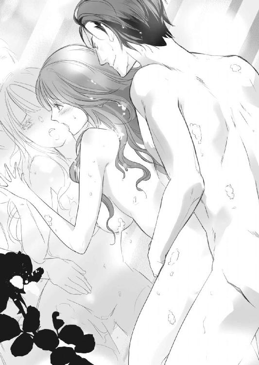
恥じらいなどなくなるほど、もう何度も抱かれて痴態を晒した。男に馴染むように調教されてしまったのかもしれない。
「......あああっ！ 桐生さん......あぁッ！」
強く抉るように中をかき回される。びくんっと内壁が痙攣して、男の欲を締めつけた。それと同時に、腹の中に熱が広がる。最奥にまで欲望を注ぎこまれ、美月の頭の中は真っ白になった。
「はぁ......飽きた」
ベッドの上で弄っていたタブレットを投げだし、美月は仰向けに寝返りを打つ。空調のきいた部屋は、素肌に触れるシーツがひんやりとして気持ち良い。
明かりのついていない部屋は暗く、タブレットの光が周辺を薄ぼんやりと照らしている。その光もなくなると、窓の外のほうが明るく感じられた。
半開きになったカーテンから差しこんでくるのは、月明かりではなく、高層マンションや商業施設のネオンが発光して、夜をぼやけさせる明かり。タブレットが部屋を照らす時と同じ、電子的な青白い明かりだ。
夜になれば暗闇に包まれる田舎で育った美月は、少し落ち着かなかった。遮光カーテンをしっかり閉め、青白い明かりを締めだしたい。
けれど、ずっと気怠いままの体を起こしてカーテンを閉めにいくのが面倒臭い。溜め息をついてカーテンから差しこむ電子的な明かりを見つめる。
フローリングの床には、本や雑誌が無造作に積み上がっている。全て、美月の暇を紛らわせるためのものだ。
泰孝や彼の舎弟が持ってきてくれる。美月からリクエストすることは稀だった。なぜなら、なにかほしいという欲求がわいてこないほど、体は疲れきり、頭がぼんやりとしているからだ。
取り上げられたスマートフォンを、返してほしいとも思わない。外部と連絡を取るなと言われたが、そんなことをする気も起きなかった。そもそも知り合いに連絡して、今の騒動に巻きこむことになったら申し訳ない。
唯一、外と繫がることのできるタブレットを与えられたが、それで連絡を取ろうとも考えなかった。ただ手慰みに弄り、たまにインターネットで買い物をする。そのためのクレジットカードは、泰孝から与えられていた。
「桐生さん、まだかな？ 今夜は遅いのかな？」
独り言に返ってくる言葉はない。体はだるくて動かすのも億劫だが、もうじゅうぶん体力は回復している。寝ようとしても眠気もやってこない。
美月は小さく唸って、寝返りを打つ。
朝、唐突にマンションにやってきた泰孝にバスルームで抱かれ、それから後の記憶は曖昧だ。一緒に朝食をとったのはなんとなく覚えているが、その後、美月はリビングのソファで寝てしまったような気がする。
だが、目覚めたのはベッドの上で、泰孝の気配はない。タブレットの時計を見れば、あれから十二時間以上はたっている。仕事にいったのだろうが、そろそろ戻ってくる時間のはずだ。
タブレットを弄るのに飽きるぐらい、久々に訪れた一人の時間に戸惑う。考える時間ができてしまったせいだろうか、妙な胸騒ぎがする。
その時、玄関のほうで物音がした。泰孝に違いない。
ほっとしたのも束の間、玄関が騒がしくなり舎弟の声がした。
「すみません、美月さん。失礼します」
切羽つまった声に、美月は慌てて飛び起き、裸体にガウンをはおって廊下にでる。気怠さなど吹き飛ぶような緊張感が声にはあった。
「どうしたの？」
玄関には、美月の知っている若い舎弟だけでなく、中年ぐらいの男性がいて、二人で泰孝を支えていた。中年男性もきっと泰孝の舎弟なのだろう。
うつむいた泰孝の胸元がはだけていて、ワイシャツの間から胸に包帯が巻かれているのが見えた。すぐに非常事態だと察した美月は、道を空け、二人に泰孝を寝室に運ぶよううながした。
ベッドに寝かされた泰孝を見下ろし、美月は青ざめた。蛍光灯の下で見ると、舎弟の二人が脱がせたジャケットもワイシャツも腕のところが破れていて、血で汚れている。
寝かされた泰孝は、いつもの堂々とした雰囲気は鳴りを潜め、ぐったりとして瞼を閉じている。
「なにがあったの？」
「......銃で撃たれました」
美月の質問には若い舎弟が答えた。もう一人は、勝手にクローゼットを開いて泰孝を着替えさせている。
「撃たれた......？」
日常であまり聞くことない言葉に、美月は顔をしかめる。すぐには理解できなかった。
「すみません。油断していました。ちょっとした隙に、この間の暴漢に襲撃され......」
舎弟が謝る必要はないのに、美月に頭を下げて話を続ける。
「でも、防弾ベストを着ていたので怪我は大したことはないです。腹部、胸部は打撲で大きな痣になって、直接弾が当たったのは腕だけです」
だから大丈夫と言われても、美月には理解できない。よけい不安になっただけだ。
「弾も貫通していて、病院での処置も簡単でした。今は麻酔で意識がないだけで、重症ではありません」
怪我のせいで、今夜あたり発熱するかもしれないが心配はいらないと舎弟は言う。暴漢のほうも、仲間が追っているのでじきに捕まる。なので泰孝の看病をお願いしたいと言い残し、二人はあっという間に部屋からでていった。
サイドテーブルには、舎弟が置いていった薬や包帯の入ったビニールの手提げ袋がある。
これでどうしろというのか。銃撃された人間の看病などしたことのない美月は、不安で胸が押し潰されそうだった。
どうしていいかわからず、ベッドに腰かけ、男の大きな手を握りしめ、容体が悪くなりませんようにと祈る。その美月の手は、異様に震えていた。
ジャケットやシャツについた泰孝の血を見てからずっとだ。怖くて怖くてしかたがなかった。
思いだしたくないのに、昔のことがフラッシュバックする。
手に残る、肉にめりこんでいく感触。雪の上に落ちた血痕。指や手の平を伝うぬるりとした血の温度。
あの時とは違うのに、震えが止まらない。泰孝の手を、縋りつくように強く握る。すると、びくっと男の指が痙攣し、続いてかすれた声が聞こえた。
「......どうした？」
「え......桐生さん？」
意識がなかったはずの泰孝が、薄らと瞼を開いている。麻酔が切れてきているのかもしれない。
「あ、薬......！」
麻酔が切れて目が覚めたら、痛み止めを飲ませてほしいと舎弟が言っていた。それを取ろうと手を離したところで、逆に指を捕まえられた。
「待てよ、泣いてるのか？」
心配そうな視線が、美月にそそがれていた。
「ち、ちがっ......」
涙は流れていなかったが、視界がにじんで揺れ、声も震えていた。それを見た泰孝は眉をひそめ、指を握る手に力をこめた。
「俺の怪我は大したことはない。だから心配するな。それとも、なにかあったのか？」
「うん、そう。良かった......ちょっとびっくりしただけで、私は大丈夫だから」
泰孝の前ではめったにでない、良い子の仮面が現れていた。それを不審に思った男が、表情を険しくした。
「噓つくな。なにを隠してる？」
怪我をしているというのに、威圧的な口調だった。それに押されるように、美月は白状していた。
「昔のこと......思いだして。元婚約者を刺した時のこと」
「血を見たからか」
鋭い指摘に、こくんと頷いた。同時に、目尻に溜まっていた涙がぽろりと零れる。それをきっかけに、肩が震え涙がぽろぽろと流れ落ちた。
「言ってみろ。言えば楽になる。俺が全部受け止めてやる」
さっきの威圧感とは逆の、穏やかで包容力のある声音だった。
なにもされていないのに、大きな手で頭を撫でられたような気がした。
「安心しろ。俺からしたら、人を刺した話なんて世間話だ」
にやり、と笑って言う泰孝に、涙がとめどなくあふれでる。物騒な言葉なのに、こんなに安堵させられた言葉は初めてだった。泣いているのに、美月も小さく笑っていた。
「元婚約者はね......古賀智之っていうんだけど、しずくって幼馴染みの従妹のことが好きだったの」
美月はしゃくり上げながら、そう切りだした。
「私は、古賀君が婚約者になる前に、別の婚約者がいたわ」
十歳以上年の離れた好色な感じの男性で、美月が中学生の時、親が良縁だと言って連れてきた相手だった。
「でも私は、その婚約者が気に入らなくて、剣道部の交流試合でうちの中学にきていた古賀君に目をつけたの。彼を婚約者にしようって」
誰よりも目立っていた彼の情報は、すぐに耳に入ってきた。旧家で裕福な家の跡取り、父親は地方議員だと。
それですぐに思いついた。智之の家のほうが、あの婚約者よりも金持ちで人脈もある。父は、彼と美月が婚約するチャンスがあれば乗り換えるだろうと。
なによりも、美月が智之のことを気に入った。好きとかそういう気持ちではなく、彼が自分の隣に並ぶなら納得できるというプライドの高い理由からだった。
「よく、婚約者を変えることができたな」
驚く泰孝に、美月は涙を拭いながら微笑んだ。
「幼馴染みのつてで、彼の父親の選挙の手伝いに紛れこんだの。そこで自分を売りこんだのよ」
当時、地元での地盤作りに熱心だった智之の父は、老舗地元企業の娘である美月にすぐに興味を持った。ボランティアに真面目に取り組む姿を見て、気に入ったらしい。
後は簡単だった。年の離れた婚約者がいて将来結婚するのが不安だと、それとなく告げただけで、すぐに美月の父に智之との婚約の話を持ってきた。
もちろん同情から助けてやろうと思ったのではない。利己的な智之の父は、競争心も激しい。良いと思ったものが他人のものになるのを、指をくわえて見ていられない性分なのだ。
だから、焦ったのだろう。また美月に対し、手に入れるだけの価値があると思ってくれた証拠だ。
「それからは、とんとん拍子に婚約までこぎつけたわ。でも、古賀君はやっぱりずっとしずくのことが好きだったの」
「お前は、それが許せなかったのか？」
違う、と美月は首を振った。
「私は彼のことを、ただの利用しやすい婚約者ぐらいにしか思ってなかったわ」
「利用？」
「彼にとってしずくは弱点だったから。彼女に関わることが起これば、彼はなにもかも投げ捨ててでも助けようとするの」
智之もしずくも知らないだろう。彼女の母親が死んだ時、その恋人にしずくを預けるようにそそのかしたのも、それを智之が嫌がるようなら、美月との婚約を続けている限り、しずくの面倒を古賀家がみると条件をつけるよう彼の父親に助言したのも自分だ。
選挙関係の手伝いを続けていた美月は、智之の父とずっと繫がりがあった。世間体の良くないしずくの存在が政治的にマイナスなこと、その彼女に智之が執着しているのは危険だと、不審に思われない程度に継続して吹きこんでいた。
こうして周囲を固めていき、まんまと智之は美月の婚約者として逃げられなくなった。その上で、自分は他に好きな人がいる。でも親には結婚を反対されるような人だから、お互いに親よりも力を持つまで仮面婚約者でいましょうと、智之と取り引きをし油断させた。
そして高校で虐められそうになっていたしずくを陰から助けてやり、智之に売れるだけの恩を売りつけた。彼が、美月をいいように利用していることで罪悪感を抱くように、あくまで健気に接し続けたのだと、泰孝に話した。
ここまで自分の悪行を包み隠さず語ったのは初めてだった。泰孝は驚くことも、軽蔑することもなく静かに聞いている。
「......それから、古賀君としずくは深い関係になっていった。まあ、そうなるだろうってわかってたけど」
自分の婚約者の座さえ揺らがなければ、正直しずくの存在などどうでもよかった。ただ、報われない恋に、二人が自棄でも起こしたら困ると思った。
「だから、しずくを排除したの。私にとって将来、邪魔者になるから」
しずくを騙し、絶望させて追い払うのは想像以上に簡単だった。智之との間にちょっとした亀裂を作り、揺さぶっただけで逃げだしてくれた。
ああ、これですっきりした。あとはしずくに捨てられ、自暴自棄になっている智之を慰めて、こちらに落ちてくるのを待てばいい。そう思っていたのに、彼は美月に見向きもしなかった。東京の同じ大学に進学してからは、邪険にさえ扱われ、美月のプライドはずたずたにされていった。
けれど自分は親の決めた婚約者だ。どのみち大学を卒業したら、結婚するしかない。どっしりとかまえて待っていればいいと自分に言い聞かせていた矢先、しずくが現れた。
「もう終わりだって思った......何年もかけて外堀埋めて、自分の気持ちも押し殺して、卑怯なことだってしたのに、駄目になるのはあっという間なのね」
自嘲するように笑い、泰孝の目を見ていられなくなって睫毛を伏せた。
汚らしい心の内の暴露に、軽蔑されるんじゃないかと怖かった。けれど男は、まるで勇気づけるように手を強く握り直してきた。
「......婚約が破棄されたら、またどんな相手と婚約させられるんだろうって、すごく不安だった。その不安と苛々を、あの二人に向けていた。そんな時に母から電話があったの」
その電話で、智之との婚約が破談になれば、またあの好色な中年との婚約が復活するのだと知った。迫ってくるおぞましい未来に、鳥肌が立った。
そしてそれが、引き金になった。
どんな手を使ってでも、幸せになってやる。そのためなら、なにをしてもいいと思った。
最後は自分の思い通りになれば問題ないと......。
「それで婚約者を刺したのか？ 事件になれば、嫌な婚約も破談になる。悪い噂も立って自分の価値が下がれば、嫁の貰い手もなくなると思ってか？」
「うん、だいたいはそう。でも、刺そうとしたのはしずくのほう。彼女は白川家現当主の隠し子だったから」
白川家の企業グループ名を言うと、泰孝は納得したように頷いた。
「うちの実家と白川家には仕事上の繫がりがあったの。だから問題が起きれば、うちにとって大ダメージになる。政略結婚だなんて言ってる場合ではなくなるわ」
「自爆行為だな」
泰孝の的確な言葉に、思わず笑ってしまう。笑いごとではないのに、自爆という単語に美月の行動全てを表現されてしまうと、とても自分が間抜けになった気がした。
「そうね。でもあの時は、それしか方法がないって思ったの。今でも、どうすれば正解だったかわからないわ」
だが、あの行為しか自分が親から自由になる方法はなかったと思っている。
「それで......しずくは隠し子だったけど、父親からも腹違いの兄からも可愛がられてた。だから、彼女に大怪我させれば、絶対に問題が大きくなるって思ったのよ」
智之を刺したのでは、婚約が破棄になるだけで、実家に大したダメージもない。むしろ智之が浮気をしていたせいで美月が自暴自棄になった結果だから、そちらにも責任があると父が言いだすだろう。そして内々にことが治められ、隠されてしまう。
そうなれば美月の価値も下がらず、政略結婚をさせられる。下手をすれば、隠ぺいした問題が発覚する前にと、望まない結婚を早められることもある。
だから智之を刺そうなんて思ってもいなかった。誤って刺すまでは、そう思っていた。
「婚約者が浮気して、痴情のもつれで私が逆上して浮気相手を刺す。ありがちだけど、不自然じゃないでしょ。それに私に同情が集まるじゃない」
そういう打算をできるぐらいに、しずくを刺す算段をした時はまだ冷静だった。
「でも、私が刺したのは古賀君だった」
その前にしずくを切りつけた時は割と冷静だったのに、智之を刺したと自覚した瞬間、頭の中が真っ白になったのを覚えている。体中が震え、吐き気がした。
次に押し寄せてきたのは、気が狂いそうなほどの罪悪感と、智之を殺してしまうかもしれないという恐怖だった。彼がいない世界を想像し、それが自分のせいで訪れるかもしれないと考えた瞬間、心が決壊した。
美月は、泣き叫びながらその場から逃げた。逃げながら、本当は智之のことが好きだったのだと、やっと気付いた。
間抜けで、愚かな自分に泣きじゃくり、最後は狂ったように笑っていた。
だが幸い、智之の怪我は大したことがなく後遺症も残らなかった。婚約は破棄されたけれど、その後、美月の立場を察してくれたしずくの助けで、当初の計画通りになった。示談交渉と謝罪のためにいった弁護士事務所で、計画的にしずくを切りつけ刑事事件にした。
「それから後は、あなたの知っている通りよ」
大学を編入し、卒業後に就職した会社で前科が噂になり、騒動が起きて退社。新しい就職先が見つからず、キャバ嬢になった。
散々、周囲の人たちを苦しめ引っかき回した自分には、お似合いの人生だと思う。
「私、ずっと古賀君のことを利用してるんだ。利用してやるんだって思ってた。でも本当は、自分を好きになってくれない彼に対して意地になってただけ」
止まっていた涙が、またあふれだす。ぼろぼろと零れ落ち、泰孝と繫いだ手を濡らした。
「好かれないなら、絶対好きになんてならないって、自分に言い聞かせてただけなのよ」
打算ではなく、好きだから刺そうと思えなかっただけ。そんなこともわからないぐらい、美月は長い間、自分さえ欺いてきた。
「好きになってもらえなくて当然なのに。酷いことばっかりして、噓ついて、陥れて。私、最低だったと思う。それなのに、彼が自分に振り向いてくれないことに怒って、思い通りにならないのは周囲が悪いって不満ばっかり......」
美月は自分も周りも全てを騙して立ち回り、結果、不幸をまき散らした。この業は深い。
「だから前の会社でのことも自業自得だって思ってる。私みたいな人間は、幸せになれないんだろうなって......でも、今の生き方もそんな悪くないって思ってるのよ」
はたから見たら転落人生かもしれない。けれど美月にとっては、自由を手に入れるための転落だった。苦労することはあるけれど、わがままを言える立場ではないことも知っている。
「だけど......私だってお姫様になりたかった」
言うつもりのなかった言葉を吐露していた。まるで重い溜め息を吐くように漏れた。
「王子様が助けにきてくれるのを、待っていたかった。でも、誰も助けになんてきてくれなかったから、自分で自分を救おうとしただけなのにね......」
なにに対しての悔しさなのかわからないけれど、胸が締めつけられ涙が零れる。苦しみを吐きだすように体を折り曲げ、ベッドに手をついてシーツに爪を立てた。
「私はお姫様を苦しめる魔女にしかなれなかった......っ！ 私の努力は全部、間違ってたのよっ！」
人から愛される容姿の美しさに、一目置かれる頭の良さ、そして家柄も、物語の主人公になれるだけのものは全て持っていた。生まれながらのお姫様だった。
けれど王子様から愛されなかった。両親からもだ......。
美月が愛をほしがった相手は、こちらを見向きもしなかった。それどころか利用することしか考えてなかった。両親は会社のために。智之はしずくのために。
美月がなにを思って言うことをきいているか、誰も考えたことなんてなかっただろう。
惨めだった。どうやって頑張れば、好きな人から愛してもらえるのか。振り向いてもらえるのか、わからなくて辛かった。どんどん自分の気持ちを押し殺し、捻じ曲げて納得させながら生きてきた。
そうやって、上辺は美しくて優しいけれど、中身はどろどろとした汚いものを抱えた「佐藤美月」ができあがった。
利用されるぐらいなら、利用すればいい。愛されないなら、愛する者の大切な相手を排除すればいい。見向きもされないなら、逃げられなくすればいいと思った。
その結果、自分の本当の気持ちもわからなくなって、愛した人を傷付けた。もし殺してしまっていたらと想像すると、今でも震えがくるぐらいに怖い。あの恐怖を自分はきっと一生忘れることはないだろう。
そしてこれが、美月の犯してしまった罪の代償だ。
美月は大きくしゃくり上げ、肩を震わせた。振動で落ちた涙が、シーツに染みを作る。きっとすごく無様な顔で泣いているに違いない。
見られたくなくてうつむき、長い髪で顔を隠すと、ずっと握り合っていた泰孝の手にぐっと力が入る。
「いいじゃないか、魔女でも」
その言葉とともに、強く手を引かれた。不意打ちに、体はバランスを崩して泰孝の上に倒れた。
「あっ、ごめん......怪我っ」
慌てて起き上がろうとしたが、片腕でがっしりと腰を抱きしめられ、もう片方の大きな手で後頭部を押さえられていた。
「大丈夫、大した怪我じゃねぇ。こんなのかすり傷だ」
そう言うと泰孝は、美月の頭を撫で、髪の間に指を差し入れた。
「魔女のなにが悪いんだよ？ 逆に考えれば、お前が動かなければ誰も幸せにならなかったかもしれないってことだろ」
美月が大人しく好色な中年と政略結婚したら、全員不幸になってたかもしれない、と泰孝は言った。
「お前が婚約者にならなきゃ、古賀ってのは別の女を婚約者にしてたかもしれないんだろ。そしたら、高校でそのしずくって子は酷い虐めにあってたかもしれない。お前が婚約者だったから、そういうのを食い止められたとも考えられるだろ」
すごい詭弁だと思ったが、妙に納得させられるところもあった。たしかに、打算で虐めから助けていたが、それがなければしずくはどうなっていたことか。悪い想像しかできなかった。
「あと、そのしずくを追いだしたのだって、結果的にはその子にとってはプラスだったじゃないか。お前がなにもしなけりゃ、しずくは今でも田舎でうじうじしてたんじゃないか？」
それも有り得ることだった。昔のしずくは、なにか強い衝撃がなければ、変わりそうにもない性格をしていた。
「長い人生のうちには色々あってさ、不幸になるきっかけを作った人間が、自分のことを救うことだってあんだよ。相手はそれをずっと負い目に思ってたりするけど、こっちはなんとも思ってなくて、むしろ感謝することだってある」
まるで泰孝のことでも話しているようだった。もっと詳しく聞いてみたい気もしたけれど、つついてはいけないことに思えた。
「だから、そんなに自分のこと貶めるな。幸せになれないなんて、決めつけんじゃねえよ」
少し怒ったような怖い声音だった。
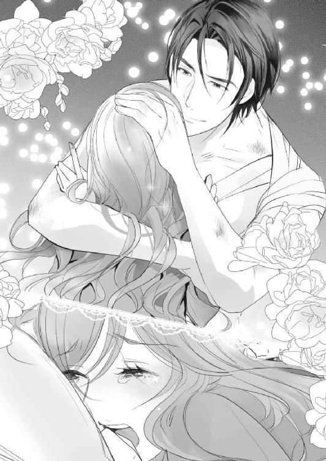
「あと、自分がしたことを反省して、傷付けたことに泣くようなお前は、少なくとも悪い魔女じゃないな」
止まりかけていた涙で、視界がにじんだ。唇を嚙んでも、こみ上げてくる嗚咽を抑えられなくなる。
それに追い打ちをかけるように、泰孝にぎゅうっと抱き寄せられ、ぽんぽんと頭を撫でられた。
「今までよく一人で頑張ってきたな。偉かったな」
我慢していた涙や声が、堰を切ったようにあふれる。
きっと、ずっと誰かに言ってもらいたかった言葉だったのだと思う。やっと誰かに認めてもらえた嬉しさに、抑えつけられてきた気持ちが解放される。
智之への報われなかった想い、両親の愛に飢えて苦しみ、惨めだった気持ち、自分さえも騙し続けて引き千切れそうになった心。それらが一度に押し寄せてきて、感情をコントロールできなくなる。
男の逞しい胸に縋りつき、美月は子供みたいに泣きじゃくった。泰孝はそれを、ただ静かに受け止めてくれていた。
８
目の前に並んだのは、焼きたての白パンにふわふわのオムレツ、ベーコン、野菜サラダ、パンプキンスープ。それとヨーグルトにコーヒー。簡単でシンプルな、洋風の朝食だった。
昨日の、旅館ででるような和朝食とは対照的だ。
「いただきます」
向かいの席に座った美月が、すっと背を伸ばし手を合わせて言う。きっと昔からそうしてきたのだろう。とても自然だった。
こういう時、本当に育ちの良い子なんだなと妙に感心してしまう。安物のジャージの黒いマキシワンピースに、アリスブルーのボレロという適当な格好さえ、高級感があるように見えてしまうのは、優れた容貌だけのせいではないだろう。
泰孝もつられるように「いただきます」と言いながらフォークを取った。
オムレツにフォークを入れると、半熟の中身と一緒に溶けたチーズがでてきた。一口食べて、ちょっと驚く。
シンプルで材料も少ないからこそ、逆に作るのが難しい。誰が作ってもそれほど味に大差もなくなってしまう料理だというのに、すごく美味しい。
昨日の朝食もそうだったが、看病されている間に食べた美月の作る料理は、こっていなくてシンプルなものが多い。けれどどれも、素材の味を存分に引きだしていて、変に感動してしまう美味しさだった。
初心に返るとでもいうのだろうか。調味料や材料、調理の仕方。そういうものにこだわった料理よりも、基本がやっぱり一番なのだと思わせる手料理なのだ。
教科書通り、品行方正といったところだろうか。個性はないけれど正道を極めると、逆に際立つものらしい。そしてこういうところに、美月の性格がでていると思った。
万人受け、誰にでも好かれる性格。悪く言えば、個性がないように見えるので、特定の相手を惹きつけることができない。
だが反面、好きな相手の味に染まろうとするところがある。それが美月の、隠された強烈な個性だ。
オムレツを半分ほど食べ、白パンを手にする。まだ温かく、表面はパリっとしていた。けれど、そのまま嚙りつくと中はふんわりしていて、小麦粉のいい匂いがした。
「パンなんてあったか？」
ふわっと口の中に広がる甘味は、大量生産の安いパンではない。パン屋で焼いたもののようだが、外で見張りをしている舎弟に買いにいかせた様子はなかった。
パンを一口大にちぎって食べていた美月が、手を止めて言う。
「あなたの舎弟が、薄力粉と間違って買ってきた強力粉があったでしょ」
そういえば、美月に看病されるようになる前、泰孝が料理をするのに舎弟に小麦粉を買いにいかせたことがあった。料理をしない舎弟は、間違って強力粉を購入してきた。
「まさか、手作りしたのか？」
「うん、まあ......でも、簡単にすぐ作る方法があるのよ。電子レンジで発酵させるの」
「だけど、朝から面倒だっただろう。別にパンなんてなくてもいいのに」
呆れ気味に言うと、美月が唇を尖らせむっとした表情になった。
「なによっ。なに食べたいって聞いたら、パンって言ったじゃない。だから作ったのに」
あまり覚えていないが、寝起きでぼうっとしている時に聞かれた気がする。ただなんとなく返答しただけで、どうしてもパンが食べたかったわけじゃない。
美月もそれはわかっているはずだ。それなのに、わざわざ朝からパンを強力粉から作ってしまうなんて、もともとの性格が尽くすタイプなのだなとしみじみ思う。
怪我をしてこの部屋に運びこまれた夜、美月の元婚約者とのことを聞いて思った。本人は意地を張っているだけだとか、利用したとか言っていたが、そうじゃない。本来、愛している相手に尽くしてしまう性格なだけだ。
親に対しても、好きだから言うことを聞いていた。親の望む自分になろうと努力してしまった。そして最悪なのは、美月が期待された以上の能力を発揮してしまったことだろう。
普通は、親の望みや期待に添えなくて限界がきて反抗したり、親のほうもあきらめたりするものなのだが、美月に限ってはそれがないまま大学生になってしまった。やっと限界を迎えた時はもう、元婚約者を刺すという事件を起こしていた。
そこまで自分を追いこむほど、相手に尽くしていたのだから、多少歪むのは当然だ。性格が悪いとかそういう問題ではなく、情が深く、我慢強すぎる性格が仇になっただけ。泰孝からしたら、派手な反抗期をやらかしてしまったぐらいにしか見えない。
周りの人間や本人には、死人もでなかったのだから、あまり深刻になるなと言ってやりたい。だが、美月にとって好きな男を刺したことは、まだまだ重い枷なのだろう。
安易に気にするなとは言えなくて、もどかしい。そして、この料理の腕もなにもかも、美月はその元婚約者のために磨いてきたのかと考えると、年甲斐もなく腹が立った。
しかも元婚約者は、あれだけ尽くしてもらっておいて美月を邪険にして振った。一度や二度刺されても当然だ。自分が刺してやりたいぐらいだと思う。
それは紛れもない嫉妬だった。
いったい自分はなにをやっているのだろう。最初は美月のことが心配でキャバクラ通いをしていた。レークス関係でまたなにかあったらと。
だが、もう大丈夫だろうと思ってからも、彼女に会いにいくのをやめられなかった。自分以外の男を接待しているのかと想像すると、いてもたってもいられない気持ちになり、足が向いていた。
何度も、もう関わってはいけない。これ以上は美月にとって迷惑になる。泰孝の愛人だと思われ、良くない人間に目をつけられるかもしれない。そう思うのに、自分を止められなかった。
それが恋だと自覚したのは、このマンションに閉じこめた時だ。
海外に逃げると言われ、とても焦った。自分の知らない場所で誰かに傷付けられるかもしれない。守ってやれない。いや、素敵な相手を見つけ幸せになれるかもしれない。
どの結果を想像しても気に食わなかった。不幸にするのも幸せにするのも、自分でなければ嫌だという独占欲に支配され、美月を強引に抱いた。その後は、逃げられるのが怖くて何度も奪うように抱いて、逃げる気を失わせていった。
そして元婚約者との事件について聞き、美月がどれだけ彼のことを愛していたか知った。
怪我をしていたのは幸いだ。痛みのおかげで、嫉妬に駆られて暴走しないですんだ。
思いだしたら、また腹が立ってきた。苛立ちを逃がすように息を吐くと、自分に対する溜め息だと勘違いした美月が、白パンの載った皿をさっと引き寄せた。
「いいわよ、食べなくてっ。どうせ......重いんでしょ。手作りなんて」
急にどうしたのか、卑屈になった美月は、むくれてちょっと泣きそうになっている。
「そんなことはない。軽くて食べやすいから、よこせ」
皿を引き戻そうとするが、拗ねた美月ががっちり摑んで放さない。しかたないので、泰孝は皿の上にあった白パン三つを、片手でがっと鷲摑みにして奪った。
「えっ！ ちょっと、なにするのよ！」
奪った白パンの一つに嚙りつき、無言で食べる。
美味しい。美味しいけれど、やはりふつふつとわいてくる嫉妬は治まらない。
白パン三つを、むしゃむしゃと無言で食べきって、やっと少しだけ落ち着きを取り戻した。美月はというと、呆然とした表情でこちらを見ていた。
当然だろう。不機嫌な表情で白パンを独り占めし、完食したのだから。まるで子供だ。
「美味かった。また作ってくれ」
そう言うと、泰孝は残りの朝食を平らげて席を立った。
今日から出勤だ。色々と内部で揉めている田吹会にも顔をだしたかった。
打撲した痣は酷い色になっているが、もう痛みはほとんどない。腕の銃創も、傷は塞がっている。骨折はしていないので、下手に動かさなければ日常生活に支障はないだろう。
泰孝が玄関に向かうと、キッチンに立っていた美月が、慌てて追いかけてきた。手に、紙袋を持っている。
「あ、あの......これっ」
「なんだ？」
差しだされた紙袋を、ちょっとのぞきこむ。アルミホイルで包まれた拳ぐらいの塊が四つ入っていた。
「......サンドイッチ。嫌い？」
「嫌いじゃないが、これは......？」
「さっきのパン、たくさん焼いたから。その、今日は出勤するって言ってたし......だからあの、朝食のおかずもあまってたから。だから別に、わざわざ作ったわけじゃないから気にしなくて......」
だらだらと言い訳を連ね始めたが、要はお弁当ということらしい。
「いる」
美月が全て言い終わる前に、紙袋を奪った。またさっきみたいに、引き下げられたくない。
ほっとしたように胸を撫で下ろした美月は、少し涙目になっている。元婚約者にことごとく拒絶されてきたせいか、よけいなお世話ではないかと随分不安だったのだろう。
それなのに、こうやって自然と尽くしてしまうのだから、こりないというか。馬鹿みたいに可愛い。
このまま玄関で押し倒してしまいたくなる気持ちを抑え、美月の腕を引いて唇を奪った。朝にしては少々濃厚な口付けを、満足するまで味わってから解放する。
「じゃあ、いってくる」
腕を放すと、美月は少しよろけてうつむいた。見下ろした耳の裏まで真っ赤に染まっている。
「......いってらっしゃい」
尻すぼみな可愛らしい見送りの言葉を聞いて玄関をでた泰孝は、思った。やっぱり元婚約者を殺してやりたいと。
「泰孝、ちょっと」
仕事の後、組事務所に顔をだすと忍に呼びだされた。ソファで若衆と雑談していた泰孝は、ドアの隙間からちょいちょいと手招きする忍に首を傾げた。
周囲にいた若衆は、慌てて居住まいを正し立ち上がると、いっせいに頭を下げる。一様に緊張していた。
普段、若頭がやってこないような下っ端が集まる休憩室なのだから、当然だろう。
泰孝が席を立ってでていくと、ほっとしたような溜め息が背後で聞こえた。
「なんですか、こんなとこまで？ 若い衆が驚いてるじゃないですか」
廊下にでてそう言うと、忍は眉をひそめて眼鏡の奥で目を細めた。
「お前こそ、幹部のくせしてこんなところにいるじゃないか。しかも打ち解けていただろう」
「まあ、俺は幹部っていっても、実質、組のことに関わってないですからね。フロント企業を経営してるだけだから、しがらみが少なくて話しやすいんですよ」
「そういうもんか？」
「そんなもんです」
適当に返すと忍は難しい顔をして首をひねった。
忍は若頭という地位のせいもあるが、あまり気安く声をかけられるタイプではない。怜悧とか理知的という表現が似合う彼は、排他的ではないが近寄りがたい雰囲気がある。
だがけっして、恐れられ嫌われているわけでもない。彼にはカリスマ的な牽引力があり、ついていく者たちは忍を崇拝でもしているような感じだった。
また、冷静な中に自信家な一面を垣間見せることがあり、それが人間的な魅力になって、周囲を虜にしている。
忍とは対照的な人情家タイプの天野は、彼のその自信家なところが気に食わないらしい。スカしていると思うようだ。
泰孝は、場所を変えたいという忍について事務所をでた。
組の人間に聞かれたくない話があると言って、忍が泰孝を連れてきたのはファミリーレストランだった。ちょっと驚きはしたが、時間帯的に周囲は夕食を食べにきた家族連れやカップルばかり。ここに組の人間がやってくれば目立ってすぐに気付くだろう。
そして窓や出入り口からは死角になる奥の座席を確保した後、泰孝はトイレに立った。戻ってくると、忍は適当に注文しておいたと言ったが、せいぜいコーヒーなど無難な飲み物だと思っていたのに......。
「えっと......これは？」
「パフェだ」
運ばれてきたのは、チョコレートパフェとストロベリーパフェ。生クリームやフルーツがたっぷりと載っていて、割と大きい。
「......俺、食べられませんけど」
「問題ない。私が食べる」
忍はさっきから、目の前のチョコレートパフェを無表情で食べている。ちょっと異様な光景だった。
「もしかしてこれが、目的ですか？」
「いや、これはついでだ。ムサイ男二人でパフェ食べてたら近寄りがたくて、秘密の話もしやすいだろう」
近寄りにくくはあるが、注目は集めるだろう。だが、話を聞かれなければいいだけなのだから、問題はないのかもしれない。
「それも、そうですかね......」
「カモフラージュだ」
そうは言うが、忍のパフェを食べる手が止まらない。今まで、甘いものを食べている姿を見たことはなかったが、実は好きなのだろう。どう考えてもカモフラージュは口実だ。
こういうたまに見せる忍の変わったところは、妙に下から受けが良かったなと思いながら、泰孝は水を飲んだ。
「ところでお前、怪我は大丈夫なのか？」
「ええ、暴れたりしなければ問題ないですよ」
「そうか。じゃあ、お前が怪我でこっちに顔をださない間に、色々噂になってるのは知ってるか？」
やっぱりそのことか、と泰孝は渋い表情になる。
「舎弟から聞いてましたし、さっきの若い衆と話して確認もとりました。俺が抗争目的で、宗山組のヤクを盗んだんじゃないかって疑われてるそうですね」
それだけではない。消えた宗山組の覚せい剤が、市場に出回ってしまったのだ。それを知って逆上した宗山組の人間が、泰孝を銃撃した。おかげで、襲撃されたのが盗んだ証拠ではないかという見方もされている。
なぜなら、市場に出回らせたのが、田吹会の人間らしいという話だからだ。こんなことができるのは、やっぱり覚せい剤売買の現場だったバーに乗りこんだ泰孝の舎弟たち。そしてそれを指図したのは泰孝だろうと、ますます疑われる事態となっていた。
「ああ、面倒なことになった。大半はお前がそんなことをしないのはわかっているし、小父貴たちも、証拠もないのに騒ぐなと言ってくれている。会長は発言を控えているが」
「あの人は、これは破門にするチャンスとか思ってるんでしょうね」
「一応、会長だから偏った意見を言わないように配慮してるんだと思うが、多分そう。破門にしようと思ってるな」
とんだ伏兵である。こんなことなら、あの時、レークスをちょっと締めてやろうなんてよけいなことを思いつかなければ良かった。だが、それがなければ美月と出会うこともなかったし、彼女を助けることもできなかった。
泰孝が重い溜め息をつくのと同時に、忍がチョコレートパフェを食べ終わる。そしてまだ手のつけられていない、泰孝の目の前のストロベリーパフェと空の容器を入れ替えた。
「......だが、お前が怪我をしたこと、すごく心配していたぞ。一度、会長に元気になった姿を見せてやれよ」
そう言うと、忍はストロベリーパフェを食べ始めた。これで話は終わりかと思い席を立ちかけると、ふと思いついたように忍が言った。
「そうそう、最近、天野に会ったりしたか？」
「天野さんですか？ 会長が引退するとか言いだした時、会長宅の玄関で会いましたね」
「ふうん......なんか、変わったことはあったか？」
「いえ、別に」
なぜ天野のことを聞くのか。泰孝は首を傾げ、そういえば天野がなにか言いかけていたことを思いだす。それを伝えるべきか一瞬悩んだその時、スマートフォンがポケットの中で振動した。
胸ポケットを押さえると、忍がでてもいいぞと言うので、再びソファに座る。
「もしもし......お前か」
美月のマンションで、主に見張りをしている若い舎弟からだった。
『すみませんっ！ 美月さんがさらわれました......！』
９
「いないわけねぇだろっ！ よく調べろっ！」
泰孝がマンションのエントランスに駆けこむと、若い舎弟がコンシェルジュのいるフロントで怒鳴っていた。いつもの淡泊さはどこにいったのか、額に青筋を立てている。
怒鳴られている黒いスーツ姿の壮年の男性は、冷や汗をかいて真っ青だ。
「おい、どうした？」
「桐生さんっ！ すいませんっ！」
頭を下げ、そのまま土下座をする勢いな舎弟の腕を摑んで体を起こさせる。
「謝罪は後だ！ どういう状況か説明しろ」
「は......はいっ」
舎弟はコンシェルジュ同様、顔面蒼白で美月が消えた経緯を話し始めた。
「......いつもは夕方に、これがほしいとか用意してくれと食材の買い物リストを持ってくるんですが、今日はそれがなかったんです。どうしたのかなとは思ったんですが、寝ているかもしれないので声はかけませんでした」
舎弟は常に玄関の前に待機していて、美月から言付けをもらうと、電話で手下の者に指示して色々と用意させていた。また、緊急でない限り、舎弟から美月に声をかけたり、部屋の鍵を開けたりはしない。
だが、一日に一度、インターフォンを鳴らし、美月に玄関を開けてもらい無事を確認する。その時、部屋からでてこなかったら、舎弟は合鍵を使ってドアを開け、中を確認することになっていた。
その確認に美月がでてこなかったので、舎弟が部屋を確認するともぬけの殻だった。
「それで窓が割られてるのに気付いて、バルコニーにでたら上の階の非常用ハッチから梯子を下ろしたような形跡がありました」
非常用ハッチは既に閉じられていたが、その真下にだけ埃がたくさん落ちていた。普段開くことのない非常用ハッチ内には、埃がたくさん溜まっていて、たまに点検で開くと似たようなことになるらしい。
「上の階だと？」
「はいっ、上の部屋のバルコニーから梯子を下ろして侵入し、美月さんを誘拐して逃げたんだと思います」
コンシェルジュには、不審人物などはいなかったかと問いつめているところだったらしい。
「証拠はないっすけど、きっと宗山組の仕業ですっ！ こないだの暴漢、捕まえたからもう大丈夫かって油断してましたけど、きっとそのことに対する報復です！」
美月のアパートを襲撃し、泰孝を撃った暴漢は、舎弟たちで捕まえた。やっぱり宗山組の構成員で、こちらを逆恨みしていた。
本来なら泰孝を撃ったことの落としとして、それなりの制裁を加えるところだったが、都内で発砲したことで暴漢は警察にもマークされていた。制裁を加えた舎弟たちが、下手に逮捕されることを望まなかった泰孝は、さっさと暴漢を警察に差しだすよう命令した。
また、ＴＲ．ｃｏｍの社長という立場もあるので、ことを大きくしたくなかった。そこから発展して、組同士の抗争にもなりかねないからだ。
そのため暴漢は今、警察で勾留されている。そのまま裁判になれば実刑がついて刑務所いきだろう。それで宗山組に恨まれるのはお門違いな気もするが、美月がさらわれたことを考えると、報復のつもりなのかもしれない。
「早く助けにいきましょう！ 殺されないまでも、美月さん綺麗ですから、なにされるかわかったもんじゃないですよ！」
「ああ、そうだな......」
想像しただけで発狂しそうだった。美月になにかあったら、自分は正気を保っていられる自信がない。
守ってやると、傍にいろと言ったのになんて様だろう。早く助けだしてやらないと、取り返しのつかないことになるかもしれない。泰孝は焦りのままに踵を返そうとしたその時。
「待て。もっと情報を集めてからにしろ」
ぐっ、と後ろから腕を摑まれハッとする。忍の存在を忘れていた。同じく存在に気付いていなかった舎弟は、若頭の姿を見てさらに顔を青白くして硬直した。
「今のまま証拠もなく突っこんでみろ、言いがかりだなんだで抗争になりかねない。若頭の立場として、そのような行動は許可できないぞ」
「......す、すみません。つい」
鋭い眼光で睨まれ、一気に頭が冷えていく。もし忍に止められなければ、頭に血が上ったまま宗山組に乗りこんでいたかもしれない。
「まずは脱出したルートの確認。そこから犯人の足取りを摑んで、後を追いかけたほうがいい。まだ誘拐されてからそんなに時間がたってないかもしれないし、途中で捕まれば大事にしないですむ」
徐々に冷静さを取り戻した泰孝は、舎弟の言葉を思いだして眉をひそめた。
「そういえば......なんで上の階が使えたんだ？」
「たしかこのマンションは、空室がほとんどありませんでしたよね」
泰孝の腕を放した忍が、コンシェルジュを振り返って丁寧な口調で問う。
「はい、一階と最上階に数部屋、空室があるだけでございます」
コンシェルジュが汗を拭きながら答える。
臨海地域のこの分譲マンションは、できた当初から利便性の良さですぐに完売した。居住率も高く、賃貸で貸しだされている部屋も常に埋まっている。
美月を隠すにあたり、このマンションを選んだのはその居住率の高さによる。空いている部屋が多ければ、そこから不審者が侵入する恐れがあったからだ。
当然、美月を隠した部屋は上下左右、賃貸物件でも投資物件でもない。日常生活を送っている住人がいる。そうそう他人が入りこむ余地はなかった。
また、セキュリティのしっかりしているマンションなので、不法侵入などあればすぐに騒ぎになるはずだった。
「うちが不法侵入されたなら、上の階も被害にあってるだろ？ 警察はきてないのか？」
泰孝の問いに、コンシェルジュはそのような通報はまだないと首を振る。それを引き継ぐように舎弟が言った。
「それが......上の階にいったら、留守みたいで」
「留守？ 仕事ですか？ それとも旅行とか、そういう話は聞いてませんか？」
コンシェルジュを振り返って忍が言う。
「い、いえ......それは」
「守秘義務ですか？」
しどろもどろになるコンシェルジュに忍の笑みが深くなる。そのすぐ後、忍が大理石のカウンターテーブルをばんっと叩いた。
「ふざけんなよっ！ こっちは人一人いなくなってんだっ！ なんかあったら、どう責任とるつもりだっ！ 答えろっ！」
それまで対応がソフトで、見た目もこの中では一番普通の人っぽい忍に油断していたコンシェルジュは、ヒッと小さく悲鳴を上げて硬直する。
「ああ、すみません。ちょっと興奮してしまいました。まあ......こちらとしても、他の住民の方にご迷惑をおかけする気はありませんので。そっと教えてくれませんか。内密にいたします」
声のトーンを落とし、忍はカウンターテーブル越しに体を乗りだす。その時、泰孝にだけ見える位置で、カウンターの背を指先でとんとんと叩いた。
するとコンシェルジュは脂汗をだらだら流しながら、視線を泳がせ、右手をカウンターの下に移動させる。泰孝は素早い動作で一歩踏みだし、コンシェルジュの腕を無言で摑んだ。
「ひっ......！」
「警察？ 通報してもいいですけど、急いでいるので、こっちの用事が終わってからにしてくれますか？」
カウンター下に警報ベルがついているのだろう。警備員がやってきた後、おそらく警察にも連絡がいくに違いない。
泰孝に腕をがっちり摑まれたコンシェルジュは、がたがたと震えていた。その震える肩越しに、忍は奥をのぞきこむ。
「今夜はお一人のようですね。良かったら、人目もあるし奥でお話しませんか？ 通報しても構いませんが、そうなれば空き巣が入ったことが公になってしまいますね。ここ、セキュリティが売りだとか？」
住人の不在時に空き巣が入ったとなれば、騒ぎになるだろう。しかも空き巣の目的は女性の誘拐。泥棒より物騒で、噂になればこのマンションの資産価値も下がる。
そうなれば、空き巣が入った時に管理を任されていたこのコンシェルジュが、責任を問われることは必至。そうなりたくなかったら黙ってろ。と、忍は暗に言っていた。
だが実際には、コンシェルジュが今回のことを黙っていても、上の階の住人が帰宅し、部屋の異変に気付いて通報すれば黙認した意味などなくなるだろう。
忍が威圧感のある笑みを作る。
「どうしますか？」
「......は、はい。では、こちらからお入りください」
揺さぶりをかけられ続けたコンシェルジュは、すっかり忍の術中にはまっていた。美月誘拐についてはこちらが黙っていれば隠せるが、どのみち空き巣の事実を隠ぺいすることはできないだろう。それなのに判断力の鈍ったコンシェルジュは、カウンターの奥に泰孝たち三人を招き入れた。
三人を奥の関係者控室に案内すると、コンシェルジュは上階の住人は単身者で、いつも仕事が遅くてこの時間帯は留守だと言った。
おそらく誘拐犯は宗山組の関係者だろう。だが、なんの証拠もなしに乗りこむことはできない。
証拠を摑むため、美月が誘拐されたと思われる時間帯の防犯カメラ映像を見せてもらうことになった。基本、防犯カメラの映像を映す監視モニターは、警備員室にある。だが、コンシェルジュの控室からも、パソコンを通してチェックすることはできた。
防犯カメラはエントランスと各フロアの廊下、エレベーター内、共用施設、地下駐車場に設置されている。
三人でパソコンを取り囲んで、上階フロア廊下の映像をチェックする。
美月を隠していた上階の部屋の玄関は、ちょうどエレベーターなどから死角になっていて、廊下の監視カメラにも映りこんでいない。出入りする人間を見ることはできなかったが、その階からエレベーターに乗り降りする人間は確認できた。
専業主婦っぽい女性と何名かの宅配業者、あと海外旅行にでもいくのか、スーツケースを引いた若い女性だった。人を一人運ぶことができそうなのは、台車に荷物を載せて移動する宅配業者の男性数人ぐらいだろう。
大きな段ボール箱に入れてしまえば、運ぶのは簡単だ。そして地下の駐車場までエレベーターで下りてしまえば、コンシェルジュに見られたり怪しまれたりすることもない。
ついでに地下駐車場の映像もチェックするが、どの宅配業者が怪しいか確信は持てなかった。
「映像は本当にこれだけですか？」
「も、もちろんですっ」
忍の問いに、声をどもらせたコンシェルジュが首を縦に振る。脂汗の量からして、噓は言っていないだろう。
「誰が怪しいか、この映像だけだとわかりませんね」
若い舎弟が難しい表情で言う。
「そりゃ、いかにも怪しい風体でやってこないだろう。それこそ、そこのコンシェルジュに顔を覚えられ、警戒される。そうですよね？」
忍が振り返って言うと、話を向けられたコンシェルジュがあからさまにびくっと震えて背筋を伸ばす。
「はいっ、左様で。本日は不審なお客様はいらしておりません。宅配業者も、いつもと同じ顔ぶれでした」
「じゃあ、昨日とか......最近では？」
「いえ、ございません。報告もありません......ね」
コンシェルジュは机に置いてある、黒い革表紙のノートをめくる。業務日誌かなにかだろう。
「そうですか。ありがとうございます......そうなると、宅配業者じゃない可能性もあるな。宅配業者だったとしても、今から全員をチェックするのは、骨が折れる作業だな......」
そんなことをしていたら時間がかかりすぎて、美月の身に危険が及ぶかもしれない。苛立ちに歯嚙みする泰孝の横で、忍は呑気な様子で回転椅子の背もたれにぐいーっと体重をかける。
「まあでも、これ報復とかではないと思うんだよなぁ」
「どういうことですか？」
意味深な言葉に、泰孝は忍に視線を向ける。
「裏で糸引いてんのが、宗山組だけとは限らないかもしれないだろ」
なにか知っているのだろうか。口元は笑っているが、眼鏡越しに見た忍の視線は鋭い。
「あっ！ あっ、こここ、この女っ！」
どういうことか聞こうと口を開きかけたのと同時に、ずっとカメラ映像に注視していた舎弟がどもりながら叫んだ。
「どうした？」
「この女、見たことあります！」
舎弟は映像を巻き戻し再生して、画面を指さした。
さっき上階の廊下の映像をチェックした時に映っていた女性だ。サングラスにツバの広い女優帽、花柄の膝丈のワンピース姿の彼女がエレベーターに乗りこんでくる映像は、廊下の映像よりも鮮明だった。
いかにも旅行用という感じの、大きなスーツケースを転がしている。帽子とサングラスのせいでよく顔が判別できなかったが、一瞬だけ監視カメラを仰ぎ見た。
そこで停止する。
「......誰だ？」
どこかで見たことがあるような気もするが、記憶にない。そもそも大きなサングラスのせいで顔が半分隠れていて、知り合いでないと誰だか判別できないだろう。
だが、舎弟にはわかったらしい。
「ノーブルの子です。美月さんと同じぐらい売れっ子で、たしか......アヤって子です！」
泰孝の送り迎えでキャバクラ店にたびたび同行していた舎弟は、店内にはほとんど入らなかったが、外のコンビニや深夜営業の喫茶店でいつも待機していた。その間に、客の見送りで外にでてくるキャバ嬢たちをよく見ていたそうだ。
その中にいた女性で、売れっ子として店の廊下に写真が貼りだされていたからよく覚えているという。
「間違いないですっ！ 店長にも確認してもらえば、はっきりするんじゃないでしょうか？ あ、データとっておきますね」
失態を取り戻したい様子の舎弟は、パソコンにＵＳＢデータを差しこんで、映像データのコピーを始める。
「ふぅん、ノーブルの子か......偶然にしても、怪しすぎるな。ところで、俺は会ったことないんだけど、美月さんっていうのは、そのスーツケースに入りそうなのか？」
「ええ、華奢で体重も軽い。身長は百六十センチぐらいだから......入りますね」
スーツケースは長期旅行用でかなり大きい。美月ぐらいなら余裕だろう。キャスターもついているので、女性一人の力でも軽々運べるはずだ。
「じゃあ、美月さんを部屋からさらったのは別の人間で、運び役はこの子ってとこか」
エレベーターの映像を早送りすると、アヤは地下駐車場でスーツケースを引いて降りた。その後は駐車場の映像に切り替える。アヤは来客用の駐車スペースに停めてあった軽自動車に向かった。
その車から一人の男がでてくる。運転席にも、もう一人いるようだ。エレベーターの映像などに映っていなかった二人の男は、おそらく非常階段などを使って移動したのだろう。そして彼らが、美月を拉致した実行犯に違いない。
車から下りたガタイの良い男が、美月が入っているだろうスーツケースを荷物室に積む。それからアヤを乗せて、マンションを後にした。
映像の時間を見れば、泰孝たちがマンションにやってくる少し前。ずっとマンションにいた舎弟が、悔しそうに「くそっ」と零す。
ともかく、今から追いかけて捕まえることはじゅうぶん可能だろう。
「よし、この女を追いかけるぞ」
忍が椅子の肘掛けをぱんっと叩いて立ち上がる。それを合図に泰孝と舎弟も席を立った。
がたんっ、と車が揺れて停止した。スーツケースに入れられたままの美月は、息苦しさと狭さに小さく呻く。無理やり押しこまれた体は痛く、真っ暗でここがどこだかもわからない。意識がないからと、手足を拘束されたり口を塞がれたりしていないことだけは良かった。
マンションの部屋に突然男たちが侵入してきたのは、舎弟がインターフォンを鳴らす定時の十五分ぐらい前だった。その男に、薬品の臭いのする布で口を塞がれ、とっさに意識を失ったふりをした。そんな美月にわかるのは、車の荷物室に乗せられているのだろうということだけだ。
あれから、どれだけ時間がたったのかもよくわからない。上の階に運ばれ、住人のものであるスーツケースにつめられている間、美月たちのいる部屋のインターフォンが狂ったように連打されたことは覚えている。それから少し時間を置いて、スーツケースに入れられたまま部屋からでて、車に積みこまれた。
マンションで誘拐されてからここで停車するまで、一時間以上はたっているのではないだろうか。
しばらくすると、荷物室のドアが開く音が聞こえ、体が揺れる。次にスーツケースごと体が回転し、がんっと足元から衝撃が上がってきた。地面に降ろされたのだろう。
ガラガラとキャスターの振動に揺さぶられながら少し移動すると、誰かが話している声がくぐもって聞こえた。そしてまたスーツケースごと回転して、どこかに載せられる。体はさっきみたいに横になっていた。
するとスーツケースの鍵が開く音がして、美月は慌てて瞼を閉じ意識がないふりをした。
独特な威圧感のある男の声が降ってきた。少し響くのは、地下駐車場のようなところにいるからだろう。
「たしかにこの女がルナなんだな？」
「間違いないわよ。一緒に働いてるんだから......」
焦ったような女性の声はノーブルのキャスト、アヤのものだ。美月がいた部屋の上階に連れていかれ、スーツケースにつめられる間にも聞いた声だった。
男は納得したのか、蓋を閉じる。だが、鍵は閉めなかったようで、隙間から差しこんだ微かな光が瞼の裏を白くする。
「それで、まー君は無事なんでしょうね！」
「キンキンした声上げんな。こっちの車に乗ってる」
美月の入ったスーツケースが載せられた車のドアが開く。バンのドアのような音だ。
アヤが「まー君！」と叫んで駆ける足音がする。彼氏の愛称なのだろう。まー君のアヤを呼ぶ声も聞こえた。
「おいっ、離れろ。コイツらには、まだしてもらう仕事があんだよ。それが終わってからイチャイチャしろ」
アヤの悲鳴がし、もつれたようなヒールの音と地面に倒れる音がする。彼氏から引き離されたらしいアヤが、抗議をする声がしたが、男が一喝すると静かになった。
「おい、お前らもこっちの車に乗り換えろ」
車に乗りこんでくる足音は、美月をマンションで拉致し、ここまで運んできた男たちのものだ。
そして間もなくして、荷物室のドアが閉められ車が動きだした。
スーツケースの蓋が閉じられなかったことに、美月はほっと息をついて深呼吸する。新鮮とは言いがたいが、やっとまともな空気を吸えた。
恐る恐る目を開け、スーツケースの隙間から外の様子をうかがう。荷物室に見張りの人間はいない。逃げる隙をうかがったり準備をするのに好都合だ。
見える範囲で視線をぐるりと巡らす。荷物室の床には白い毛足の長いフェイクファーのラグが敷かれている。おそらく後部座席や助手席にも同じものが敷かれているのではないだろうか。
側面の窓は見えなかったが、荷物室後部のドアにはめこまれた窓には、星型のカラフルなジェルシールがいくつも貼られている。高速道路の標識が遠ざかっていくのも見えた。美月のいたマンションから、まだあまり離れていない。
このバンの持ち主は、車の装飾をするのが趣味なのだろう。たまにジャラジャラと聞こえる音は、吊り下げた飾りがぶつかり合う音に違いない。それに混じって、カタカタとガラスがかち合う音もする。
そちらに視線を向けると、ラグの上に無造作に酒瓶が並べられている。日常的に飲酒運転や、車内で飲むのが当たり前なのだろう。中身の少ない酒瓶のいくつかは、車の振動で倒れて転がったりしている。
たまにキンッと高い音がするのを不思議に思い、少し頭を乗りだしてみると、酒瓶の近くにオレンジ色のものが無造作に転がっている。窓ガラスを割ることができる、セーフティーハンマーだ。
飲酒運転をするくせして、こんなものを常備しているのが不思議だった。もしかしたら、別の用途に使っているのかもしれない。
逃げる時に役に立つかもしれないと思い、美月はそっと腕を伸ばしてセーフティーハンマーをスーツケースの中に引き入れた。
「それで目的地についてお前らにやってもらいたいことだが......」
車の振動音や酒瓶のぶつかり合う雑音の中、威圧感のある男の声はよく聞こえた。
「そいつをハメ撮りして、このアドレスに添付して送れ」
はい、と複数の返事が聞こえる。「そいつ」というのは美月のことで、輪姦して撮影しろと命令しているのだろう。添付して送る先のアドレスは、考えるまでもなく泰孝だ。
命令している男は、泰孝に恨みがある宗山組の人間だと思った。
不快感と嫌悪感に体が緊張し、心拍数が上がる。今すぐ逃げだしたいのを堪え、じっと聞き耳を立てる。
「メールの文面はこっちで考えて、後で送る」
「わかりました......それで、あの本当に大丈夫なんですよね？」
命令された男の一人が、恐る恐るといった様子で質問する。さっきの若い声の「まー君」とは違い、低い渋めの声だ。どこかで聞いたことがあるような気がしたが、思いだせない。
「ああ、宗山組のことだろ。きちんと仕事をこなしたら、あいつらに見つからないよう海外にでも逃がしてやるよ」
どういうことだろう。
美月を拉致したのは、泰孝を襲った宗山組の人間だと思っていた。彼らではないとすると、この男たちは誰なのか。そして男たちに命令している男も、誰なのだろう。
会話の雰囲気から、両者とも堅気の人間ではない。また、命令している男と美月を拉致した男たちは、別の組織に所属しているようだった。
眉をひそめると、まー君が言葉を発した。
「あ、あの......アヤも一緒に逃亡させてもらえますか？」
人を拉致するくせして、恋人のことは大切に思っているようだ。変なところで感心していると、命令している男がクックッと喉の奥から笑いを漏らす。
「だからうまくいったらな......女のことも考えてやる。まあ、難しいことじゃないだろ。そもそもお前は、この女を犯したかったんだから役得じゃねーか。なあ、盛岡」
驚きに声が漏れそうになるのを、とっさに口を塞いで抑える。まさかここで、その男の名を聞くとは思わなかった。
レークスの総長、盛岡だ。ということは、美月を拉致したのはレークスのメンバーで間違いないだろう。
これでアヤが、最初の美月誘拐の件に関わっていたのにも納得がいく。彼女の恋人まー君がレークスのメンバーだから、盛岡に気に入られている美月をさらうのに協力した。献上する手伝いをしたようなものなのだろう。
そして彼らは宗山組に追われている。特に総長の盛岡のことは、血眼になって探しているらしい。見つかれば、落とし前と称した私刑が待っていることだろう。
命令している男は、それを収めるなり逃がすなりする力のある立場の人間。そして泰孝を恨んでいる......いや、陥れようとしているのではないだろうか。
美月のハメ撮り映像が送られてきたら、きっと泰孝は宗山組の仕業だと思う。向かう先は宗山組関係になるだろう。けれどそこに美月はいない。事実無根の罪で責められた宗山組は、覚せい剤のこともあり黙っていないだろう。また泰孝の田吹会での立場も危うくなるのではないか。
田吹会での男の明確な立ち位置を、美月はあまり把握していない。だが、そんな勝手なことをすれば、問題になることぐらいは想像がついた。
これは泰孝をおびきだし、破滅させるための罠だ。なんとかして阻止するには、ここから逃げるしかない。
定時の確認で美月がいなかったことで、舎弟は既に動いているだろう。泰孝に知らせ、なんとかして探してくれているに違いない。けれどそれを信じて待っていては、事態はどんどん悪くなる。
それになにより、輪姦されてハメ撮りなんてされたくない。盛岡や他の男に触れられることさえ嫌だ。
「それから、ことが終わったら女はマンションの部屋に放置してどっか身を隠してろ。女はこっちで回収する」
「わかりました......」
「俺はお前たちをマンションまで案内したら消える。なんかあったら、教えた番号に連絡しろ」
それから車内の会話は途切れ、車の振動音と外の雑音がするだけになった。
美月はじっと息をひそめながら、いつ逃げればいいか考えた。マンションに入ってしまってからでは、逃げるのは難しくなる。ならば車に乗っている今のうちしか、逃げることはできないだろう。
今、高速道路ということは、車から飛びだしたら大怪我をする。それにことを起こすには雑音が少なすぎて、動きにくい。
せめて繁華街や人の目がある通り、雑音が多くて美月が荷物室でなにかしていてもバレない環境になってからがチャンスだろう。そしてなにか問題を起こし停車させ、隙をついて逃げる。それしかない。
ただ、どうやって問題を起こすか......それが問題だった。
そうこうしているうちに、車は高速道路を下りて一般道にでた。目的のマンションまでどれぐらいかわからないが、もうそんなに時間はないはずだ。
彼らを驚かせ隙を作り、停車させるなにかがないだろうか。美月は身動きもままならない中で、視線を巡らせる。その時、ごりっと肩に硬いものが当たった。
スーツケースの内ポケットになにかが入っている。取りだしてみると、それはジッポーのライターだった。上の階の住人が、入れ忘れたままにしていたものだろう。
これは使える。
美月はジッポーを握りしめ、さっと酒瓶のラベルに視線を走らせた。そこから小ぶりだがアルコール度数の高いウィスキーの瓶を、素早く手にとりスーツケースに引っ張りこむ。そして転がってきた、飲みかけのウォッカの瓶も摑んで中に入れた。
心拍数の上がる心臓を落ち着かせるように深呼吸し、未開封の瓶の蓋をゆっくりと開ける。これはタイミングが肝心だ。
前にレークスにさらわれた時となんとなく似ている。だが、あの時のようにうまくいくかわからない。けれどやらなくては、泰孝が酷い目にあう。また怪我をしてしまうかもしれない。怪我だけならいいが、取り返しのつかないことになったら......。
想像するだけで、恐怖で手が震えた。泰孝はヤクザで、相手をするのもヤクザだ。智之の時のように助かることのほうが難しい。
もう、自分のせいで誰かが傷付くのは嫌だ。もとは美月自身が撒いた種で自業自得なのはわかっている。でも、だからこそ愛する人を失ってしまうかもしれない恐怖をもう二度と味わいたくない。
美月はずっと、自分の将来や身を守るために行動し、邪魔する者がいれば攻撃して排除すればいいと思っていた。それが間違ったことだと思い知ったのは、智之を誤って刺した時だ。
けれど今は、泰孝を守るために行動したいと強く思う。自分はどうなってもいいから、彼を守りたい。
自然とそう思っていた自分に、涙がにじんだ。
ああ、好きなのだと......こんな場面で自覚するなんて、どれだけ自分は馬鹿なのか。心を押し殺すことにばかり慣れてしまって、鈍感になりすぎていた。
泰孝は自分にとって、現実的にはマイナスにしかならない相手だ。こうやって誘拐されるし、愛人だと間違われて襲われるしで、いいことなんてない。昔の自分なら絶対に近付かなかった。馬鹿にして、蔑みの対象にしていた階層の人間だろう。
けれど彼の傍にいる時、美月はいつも自然体でいられた。猫をかぶらず、ありのままのきつい性格をした嫌な女だった。自分を取り繕おうとも思わず、卑怯で最低なことをした過去も話せた。
それを泰孝は、受け止めてくれた。彼にとっては、人を刺したぐらいのことは日常なのだろう。それでも美月は、ほっとできたし、やっと許されたような気持ちになれた。
上辺だけは綺麗だが、性格が悪く、中身の醜い自分を全て肯定してもらえて、どんなに心が安らかになったことか。もう損得など関係なく、彼の傍にいたいと思った。彼のためにできることをしてあげたかった。
美月はこみ上げてくる涙を堪え、目元の涙を拭い、外の様子をうかがった。車は街道を抜けて、コンビニや民家、マンションの立ち並ぶ道路に入った。
もうそろそろ行動を起こしていいだろう。
まずはウィスキーの蓋をとり、後部座席に注ぎ口が向くようにスーツケースの外に置く。ウォッカの瓶も同じように置いた。
しばらくすると車内に酒の臭いが充満し、男たちも異変に気付いた。
「おい、なんだこの臭いは？」
「あ......後ろに酒、置いてるんすよ。それが漏れたのかも」
命令していた男が不快感も露わに言うと、車の持ち主なのか、まー君が焦ったように返答する。
「ちょっと、後ろ確認します」
後部座席が動く気配がした。美月はジッポーを点火し、スーツケースの外に放った。
「え......うっわあ！」
「なんだっ！ うわあああ！」
「火だ！ 消せ！」
「誰だ、火をつけたのは！ 馬鹿野郎っ！」
次々に怒鳴り声が上がり、車は急停車した。スーツケースの中に身を潜めている美月には、外がどんな状況になっているかはわからない。
だが、あっという間に車内の温度が上がり煙が充満したのはわかった。毛足の長いラグや装飾品はきっとよく燃える。そこから男たちの服にも引火した可能性はあった。
男たちが、騒ぎながら車から降りる。セーフティーハンマーを握りしめ、煙を吸いこまないよう口を塞いでいた美月は、その混乱に乗じてスーツケースから転がりでる。車内は煙で真っ白で、誰がなにをしているかなんてわからない状況だった。
手探りで荷物室のドアを開け、外に飛びだす。後は、振り返らずに走った。
「あっ、おいっ！ 女が逃げたぞっ！」
「くそっ！ アイツの仕業かよ！」
背後で怒鳴り声と追いかけてくる足音が聞こえる。裸足で走る美月に、足音はすぐに迫ってきた。
腕を摑まれる。美月はセーフティーハンマーを、その男の股間あたりにめがけて振り下ろす。手ごたえがあり、男が悲鳴を上げて手を放し倒れる。
次にやってきた男に殴られそうになるが、よろめいた拍子に拳が頭上をかすめる。驚きに悲鳴を上げ、持っていたセーフティーハンマーを振り下ろせば、男の胸にぶつかり鈍い音を立てた。
その男も崩れ落ちると、横から伸びてきた大きな手に頰をはたかれ、衝撃でセーフティーハンマーを落とす。
「このアマ！ 手間かけさせやがってッ」
倒れそうになったところを、腕を摑まれ乱暴に引き寄せられる。見上げた男は、レークスのメンバーたちとは違う貫禄と威圧感にあふれた中年だった。この男が命令していた男に違いない。
男の拳が振り上がる。ああ、殴られると思いながら、拳を呆然と見上げた。
その瞬間、背中になにかが触れ、腰に腕が回る。目の前の男は驚愕に顔を歪めた。その隙をついて、美月の後ろから拳が飛びだした。
「がっ......ハッ！」
美月を殴るはずだった男が、殴り飛ばされて地面の上を転がる。その時になってやっと、周囲の状況が目に入った。
さっきまで乗っていたであろうバンが、道の脇で燃えている。野次馬も集まっていたが、柄の悪い男たちが車を取り囲み、人払いしている。それとレークスのメンバーや盛岡を拘束していた。
「天野さん......あなただったなんて......」
頭上から、泰孝の失望したような声が降ってきた。それに起き上がった男、天野がハッと鼻先で笑いを漏らし、血の混じった唾を吐く。それと一緒に白い歯が地面に落ちた。
「気付かねぇお前がワリぃんだよ。このボンクラがっ」
背後の泰孝がなにか言い返すように体を乗りだすが、それをさえぎるように別の男が前にでてきた。
「ごきげんよう、天野。詳しいことは組に帰って聞こうか？」
「ケッ、スカしてん......ぐあッ」
天野が言い終わる前に、男の足先が顎に命中する。それからまるで、サッカーボールで遊んででもいるように、天野の体を軽やかに蹴り回す。
あまりの光景に凝視していると、後ろから抱きしめるように目隠しをされ、体を反転させられた。
「あんなもん見るな。いくぞ」
泰孝が、美月の腕を摑んで歩きだす。引きずられるように一歩踏みだした美月は、その手の温もりにじわりと目頭が熱くなった。
「たくっ、お前は少しは待つってことができねぇのかよ。危ないことしてんじゃねえよっ！」
前を歩く男が怒鳴る。けれど、声の端々に滲みでる心配そうな調子は隠せていない。
「まったく、車燃やす女なんて初めて見たぞ。出会った時もそうだったけどな、お前は有り得ないことをしすぎだ。助かったからいいようなものの、いつか大怪我する。自重しろっ！」
叱責が心地良い。もっと叱ってほしいと思うのは、おかしいことだろうか。
腕を摑んでいた手は、いつの間にか美月の手を柔らかく繫いでいて、そこから伝わってくる優しさに視界が潤む。小さくしゃくり上げると、泰孝が立ち止まって振り返った。
「だいたいお姫様になりたいなら、助けがくんの待つぐらいのことはできねえの......」
ぼろぼろと涙が零れ落ちると、泰孝の言葉が途切れた。
「えっ......い、今のは言いすぎた！ 悪かった。なれる。強い姫だっているもんな。ほら......則天武后とか」
「......それ、女帝」
しゃくり上げながら突っこむと、泰孝は渋い表情で黙りこんだ。
男の中での美月のイメージはそれなのか。少しがっかりもしたが、おかしくて泣き笑いになった。
「私......もう、お姫様になれなくてもいい」
そして、繫がれた手をぎゅうっと握りしめ、身を寄せて言った。
「あなたの役に立てる女になりたい」
泰孝の腕に、こつんと額を押し当てる。どんな顔をして男を見ればいいかわからなくて、耳の先まで熱くなってくる。
なぜこんな告白をしてしまったのだろう。けれど自然と口をついてでていた。
絡めた指先から、男も同じだけ動揺しているのが伝わってくる。太い指が硬直し、震えている。
「お、お前なに言ってんだ？ 早まるな！ よく考えてから発言しろ！」
望んだ答えが返ってこないことぐらい予想はついていた。けれど反面、泰孝が自分のことを好きだという確信はあった。
好きでなければ、助けようと追いかけてもこないだろうし、そもそもマンションに軟禁だってしなかったはずだ。自分の気持ちさえ認めてしまえば、どれだけ泰孝に大事にされているか実感する。
美月は繫いでいないほうの手で、男の袖をぎゅっと摑んだ。
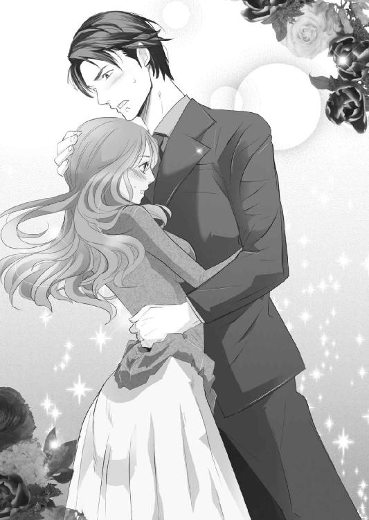
「......好き」
消え入りそうな告白は、ちゃんと聞こえていたようで、乱暴に頭を胸の中に抱き寄せられる。そして男の溜め息が髪を撫でた。
だが、泰孝の返事を聞く前に、邪魔する声が飛んできた。
「おい、コラ！ イチャつく前に、その頼もしい彼女連れてここから消えろ！ サツきたら説明が面倒だろうが、泰孝ぁっ！」
ドスのきいた声は、さっき天野を蹴っていた男のものだ。この中で一番偉いようだ。
「あっ、はい！ す、すみませんっ！」
焦りにどもりながらそう返すと、泰孝は美月をさっと抱き上げ、舎弟の待つ車に飛び乗ったのだった。
シャワーを浴びてさっぱりした美月は、リビングのソファでぼうっと泰孝を待っていた。男は書斎でずっと電話をしている。
多分、相手は天野を蹴っていた男。「若頭」と送話口で言っているのが聞こえた。込み入った話なのか、なかなか戻ってこない。
あれから、美月は大丈夫だと言ったのに病院に連れていかれ、怪我の手当てをされた。軽い火傷とかすり傷だけで、後は焦げてしまった髪を切った。そして連れてこられたのは、初めて泰孝に抱かれた時のマンションだった。
肩の長さになった髪は、水を吸ってクルクルと回転している。毛先に溜まる水滴が、バスローブに落ちる前にタオルで拭う。そんなことを繰り返し、短い髪が生乾きになった頃、泰孝が電話を終えて戻ってきた。
「......大丈夫？」
泰孝は硬い表情をしていた。あまりいい話ではなかったのだろう。
「ああ、まあ問題ない」
「そう......あの、天野って人、田吹会の人間だったの？」
聞いていいのか迷ったが、これぐらいならと、気になっていたことを口にした。
「......うん。まあ、そうだ」
言葉を濁す泰孝に、あまりこちらから聞いてはいけないことだと感じた。
「子供の頃、よく世話してくれて。兄みたいな存在だった」
「そうなんだ」
美月が相槌を打つと、泰孝が隣に腰かけた。それで会話は途切れ、天野の話は終わりになった。
兄のような存在に裏切られ、きっとショックなのだろう。泰孝が、今までどういう人生を送ってきたのか詳しく知らない美月に、かけられる言葉はない。詮索するのも嫌だった。
ソファの上に置いていた手に、そっと男の大きな手が重なってきた。まるで甘えられているようなその行為に、美月は手を裏返して指を絡める。
少しでも、男の気持ちが和らいでくれたらいい。自分はなにもできないけれど、温もりを与えることぐらいならできる。
「そういえば......よく私の居場所がわかったわね」
沈黙が少し重くなった頃、美月から口を開いた。実は、あのタイミングで助けにやってきたことを不思議に思っていた。
「ああ、それな。ノーブルのアヤって子、わかるか？」
もちろんよく知っている。頷いて、スーツケースにつめられた美月を運んだのが彼女だと伝えると、泰孝が溜め息をついた。
「お前がスーツケースごと乗せられた車だが、アヤの車だったんだ」
アヤの車はマンションの来客用の駐車場に止められていて、監視カメラにナンバープレートがばっちり写っていたそうだ。そのおかげで、田吹会の若い衆を使って、アヤの車を見つけだすのは簡単だったと泰孝は言った。
「それでお前が乗り換えさせられたバンだが、あれはアヤの恋人のものだ」
最初、アヤは口を割らなかったそうだ。だが、ノーブルの店長から彼女には恋人がいて、その彼氏のためならなんでもするという情報を得ていた。
このままだと恋人は宗山組だけでなく、田吹会からも狙われる。知っていることを言えば、恋人の安全を保障すると脅したところ、知っていることを全て話しだした。そこで首謀者が天野だということもわかったらしい。
そこから車の居場所を捜しだすのは、さらに簡単だったという。アヤが浮気防止のため、恋人のスマートフォンにＧＰＳ追跡アプリをインストールしていたからだ。
「そういうことだったの......」
すぐに見つけだしてもらえないと思っていた美月は、割とあっけない顚末に呆然とした。
「......そういえば、警察にはなんて？」
街中であれだけ派手に車が燃えたのだから、いくら田吹会といえど隠ぺいはできない。警察がきたはずだが、美月たちは去るように言われて現場を後にした。
「それな、あの車の持ち主......アヤの恋人が、煙草の不始末で出火したということになった」
「じゃあ、事故......？」
そうだ、と泰孝は頷いた。
美月が故意に火をつけたということになると、どうしてそんなことをしたか。なぜスーツケースにつめられていたかなど、警察で聞かれることになる。
そうなるとさすがに、誘拐されたことを隠すのは難しい。さらわれた美月が、逃げるためにやむをえずしたことなら正当防衛にもなり、弁護士を雇えば執行猶予中でも実刑にはならないだろう。その代わり、田吹会が宗山組と揉めていたこと、抗争になりかかっていたことなど、つつかれたくないことまで探られる。
そこから難癖つけられて、警察に踏みこまれたら面倒ということで、アヤの恋人に罪を着せる運びとなった。その代わり、アヤとも約束した通り宗山組からは守ってやるという取り引きをした。
また、現場に田吹会がいたことについては、同乗していた他のレークスのメンバーが、若頭のマンションに空き巣に入ったので追いかけたということになった。あの臨海地域のマンションは、実は泰孝所有ではなく、若頭のものだったらしい。
美月を隠すにあたり、泰孝所有の物件では見つけられる可能性がある。そこで若頭に相談したところ、気前良く貸してくれたということだった。
だが結局、泰孝が怪我をしてマンションにやってきた時、天野の手下に後をつけられ、美月の居場所がバレたそうだ。そしてたまたま天野に匿われていたレークスのメンバーと総長の盛岡は、美月を誘拐することになった。
「盛岡以外のレークスのメンバーは、あのマンションの他の部屋にも空き巣に入ったという罪で逮捕された。まあ、それも身の安全と引き換えに泥をかぶったってことだ」
アヤの恋人と同じ処遇になったらしい。事実、空き巣に入ったわけで、また彼らの所持品から盗品もでてきたそうだ。
「そう......でも、盛岡さんを除いてってことは、彼はどうなったの？」
小首を傾げると、泰孝が苦々しい表情で言った。
「あいつは宗山組に突きだした。一応、今回のことでの落とし前ってもんがある。それと、ヤクを盗んだり売買したのに、うちの天野さんが絡んでたからな......」
これ以上は聞かないでくれ、と釘を刺されて美月は黙りこんだ。暴力団同士の筋の通し方があり、これから落としどころを決めるらしい。関係ない美月に、下手に聞かせる話でもないと泰孝は言った。
少し気にはなったが、聞けば後味も悪くなりそうだ。
「それにしても私......焦って、あんなことしなくてもよかったのね」
あんなこととは、車に火を放ったことだ。落ち着いた今、思いだしてみるととんでもないことをしてしまった。
「まったくだ。追いかける車から見てて、肝が冷えたぞ」
「ごめんなさい。でも、あの時はああするしかないって思って」
バンの中で彼らの会話を聞き、泰孝を罠にかけようとしていることに気付いたのだと言った。それを阻止したかったと。
「馬鹿......執行猶予中の身でなに考えてんだ。下手すりゃ実刑になるぞ」
どこか戸惑った調子の泰孝を見上げ、美月は握る手に力をこめた。
「あなたに害が及ばないなら、実刑になっても後悔しないって思ったのよ」
愛しさをこめて微笑むと、乾いた音がして頰に衝撃が走った。
「ふざけんなっ！ 二度とするな......俺が後悔するだろっ！」
恐ろしい顔をした泰孝に怒鳴られ、動けなくなる。叩かれた頰が熱い。
「俺が絶対に助けにいくから、次は待ってろ！ いいなっ！」
「......うん」
呆然として返事をすると、男の逞しい胸に強く抱きこまれた。驚いたのと、頰の痛みに目の前が涙で揺れる。けれど悲しい痛みではなかった。じんじんと頰を伝って染みてくる熱は、美月の胸を甘く締めつける。
「悪かった、殴って......痛いだろ」
耳元で低い声がして、頰をさすられる。大丈夫、痛くないと返すと、叩かれた頰に男の口付けが落ち、唇にも重なる。そのまま口付けは深まり、折り重なるようにソファに倒れた。
キスは優しいけれど濃厚で、美月の頭の奥をじんっと痺れさせる。薄く唇を開けば、男の舌が忍びこんできた。自ら舌を差しだして絡め、混じり合う唾液を嚥下すれば、催淫作用でもあるのか体がじわじわと火照ってくる。
もっと、とねだるように男の唇を甘嚙みし、滴ってくる露を舐める。男のなにもかもが愛しくて、全てを飲みこみたい。舌に絡む露は甘く、美月を恍惚とさせる。
「はぁ......ぅんっ、すき......ぃ」
告白は濡れた音と熱っぽい吐息に混じり、絡まり合った舌の間で消えていく。深く唇が重なり、返事のように口中を激しく貪られる。
吐息も言葉も飲みこまれ、眩暈のするような口付けに沈められ、美月は縋るように泰孝の腕を摑む。バスローブの合わせを乱され露わになった胸元に、腕を引いた男の体が重なって、シャツ越しに体温がじわりと伝わってきた。
心地良い温もりと同時に、肌が粟立つような淫靡なむず痒さが、胸に広がる。素肌をこする布や、まるで悪戯するように谷間を行き来するボタンに、美月は身をよじった。
「はっ、ああぁ......やぁ」
口付けが外れた唇の端から、猫が鳴くような甘ったるい声が漏れる。もう、キスだけで指先まで甘く痺れていた。
好きな男に抱かれている。その事実だけで、前よりもずっと体が淫らに蕩けていく。
「美月......」
頰や目尻、こめかみと、撫でるようにキスを落とす男の声が、耳朶をくすぐる。大きな手は、腰紐を解いたバスローブの間に忍びこみ、乳房を包みこむように揉む。そして少しかさついた親指が、膨らみの中心にある赤い縁をすうっとなぞった。
「......あぁ、そこは......っ」
走る切ない痺れに、首をすくめる。流れるように中心の硬くなった乳首を押し潰されると、首のつけ根あたりがざわりと粟立ち、反射的にうなじがのけ反る。
開いた唇の間から、はぁ......と熱に浮かされた吐息が、覆いかぶさった男の髪を撫でる。同じように、泰孝の吐息も美月の耳をくすぐって、耳孔にじわりと染み入ってくる。その吐息を追いかけて、男の舌が中をぞろりと舐めた。
「ああぁ、ンッ......！」
不意をつかれ、美月は高い声を上げて、その舌から逃れるように首をひねる。けれど狭いソファの上、逃げることなどできなくて、すぐに男の唇が耳朶を捕らえた。
甘嚙みされ、舐めしゃぶられる。ぬちゅぬちゅと、濡れた音が鼓膜を犯しながら、舌が這いこんでくる。
「ひゃあっ、いやぁ......やぁッ、だめぇ！」
卑猥なくすぐったさに身悶え、息が上がる。髪は乱れ、目は涙で潤み、肌は火照って敏感になっていく。
「ああ......好きだ。全部、食っちまいたい」
舌がずるりと抜ける感触の後、欲にまみれた声が耳孔に吹きこまれる。ぞわっ、と甘いむず痒さがうなじを通り過ぎ、頰が熱くなる。脚の間が甘くわななき、美月は膝をこすり合せた。
好きな人に好きと返されることが嬉しくて、目尻に溜まっていた涙が一粒落ちる。
「んぁっ......食べて、桐生さん」
男の逞しい背中に縋りついて囁くと、「泰孝でいい」と返される。
「泰孝......さん」
慣れない呼び方がなんだか恥ずかしくて、語尾が震える。呼び方一つで距離が縮んだような気がして、心臓がどくどくと脈打つ。
「泰孝さん、すき......すきっ」
想いがあふれてくる。言葉にしてださないと、胸がはち切れてしまいそうなほど愛しさがこみ上げる。
「俺も美月が好きだ」
返ってくる言葉に、しゃくり上げる。
今まで誰も、美月に返してくれなかった言葉。好きな人からもらうことのできなかった言葉。
好きな人から愛されることはないのだと、あきらめていた美月の心に染みていく。
「すき、大好き」
「ああ......俺も。愛してる」
嗚咽が漏れる。泣きじゃくり、泰孝の肩口に額を押しつける。なだめるような口付けがいくつも顔に降ってきて、ぎゅっと強く抱きしめられる。
それから泰孝が、美月を抱いたまま体を起こしてソファに座った。美月は向かい合うような形で、その膝の上に抱き上げられる。
「あんまり泣くな。後で声がかれちまうぞ」
泰孝は小さく笑い、目尻に溜まった涙を指で拭う。目の下をこする男の指の感触が、美月の胸を甘く揺さぶる。
睫毛を伏せると、顔が近付いて唇が重なった。腕に引っかかっていたバスローブは、床に落とされる。裸になった美月の体に、男の手が這い回る。感じる場所をまさぐられ、美月はキスの合間に喘ぎ声を漏らす。
いつしか大きな手は下肢へ撫で下ろされ、無骨な指が恥部に触れる。
「あはぁ......ンッ、あぁ......」
走る快感に、男の肩に置いていた手に力が入る。ずれた唇から、欲に濡れた息を吐く。
「おい、ちょっと腰を上げろ。触りにくい」
唇の間で下された命令に、体の中心がいやらしく震える。はしたないほど、恥部がじんじんと疼いて蜜を滴らせていた。
言われた通りに腰を浮かせると、男の指がしとどに濡れた股を撫でる。下着は始めからつけていなかった。
かさついた指が、蜜にまみれた花弁をかき回し、中心の肉芽を摘まむ。
「はっ、はぁ......ああぁん！ ああぁ、いい......ッ」
無意識に腰が揺れる。もっといやらしく撫で回してほしくて、男の指に押しつけるように動けば、蜜口に指がずるりと入った。
「ひゃあぁ......ンッ！」
蜜で蕩けていた中は、なんの抵抗もなく指を飲みこむ。蜜口も震えながら緩まり、あっという間に指を三本くわえていた。
「ああぁ、はぁんッ......だめぇっ」
ぬぷぬぷと、卑猥な音が響く。太い指はそれぞればらばらに動き、蜜口を押し広げる。かき回された中からは、蜜がとめどなくあふれた。
「びしょ濡れだな。俺のズボンが、酷いことになってるぞ」
「やぁ......だ、だってぇ」
男のズボンに美月の蜜で恥ずかしい染みができていた。痙攣する蜜口からは、だらしなく蜜が滴っていて、まるで粗相でもしたみたいだ。
羞恥に体が震え、新たな蜜が中からあふれてきてしまう。
「恥ずかしい奴だな。少しは堪えられないのか？」
言葉での攻めに、また内壁がきゅうっと震える。こんなに濡れてしまうのは泰孝のせいなのに、美月ばかり恥ずかしいのが悔しい。
「ふぁ......うっ、泰孝さんだって」
責めるように、男の股間に手を伸ばす。想像していたより硬くなっているそこに、胸がどきどきして手が震えた。
「ああ、そうだよ。俺もお前がほしい......」
耳元で艶めいた声がして、指をくわえた蜜口がわななく。こんなことにも感じてしまうはしたない自分が恥ずかしい。けれど教えこまれた快楽には抗えず、美月は誘われるように男のベルトに手をかけた。
「いい子だ......どうすればいいか、わかるな？」
こくんと頷き、美月はくつろげたズボンの中からでてきた男のものに、手を添える。硬くて、熱く脈打つそれに、胸が震えた。
これが自分の中に入るのだと想像し、息が乱れる。いやらしい気持ちが昂ぶり、蜜口が男の指を締めつけた。それと同時に、深く中に突き刺さっていた指が、濡れた音を立てて引き抜かれる。
「ひゃぁ......！ ああぁあぁ、あ......ンッ！」
ぎりぎりまで抜かれた指が、爪先で蜜口をつんっと撫で、再び根元まで一気に押し入る。目の前ががくがくと揺れ、男の肩口に縋りつく。そんな美月の腰を、男が片手で支えた。
「ほら、ぼうっとしてんじゃねえよ。悪い子にはお仕置きするぞ」
「あっあぁッ......いやぁっ」
肩を甘嚙みされ、指先で内壁を引っかかれる。痛くないけれど、体の芯を刺激するような快感に脚が甘く痺れて震える。
美月はとっさに摑んだ男の欲望を、上下にしごいた。それに合わせるように、男の指も抜き刺しを繰り返す。
手の中のものは、取りだした時よりも熱く硬くなっていく。反り返るように立ち上がり、まるで凶器のようで怖い。こんなものが、自分の中に納まりきるのかと、いつも不安になる。けれど、これで最奥を突かれる快感を、美月は嫌と言うほど教えこまれた。知っているからこそ、高まる興奮を抑えられない。
「あ、うぅ......ンッ、ああぁ......もっ」
先端が濡れてきて、美月の手を汚す。ぬちゅぬちゅと、いやらしい音がする。
「もぅ......お願い、はぁ、ああぁ......」
男の指を飲みこんだ中は、びくびくと痙攣している。もっと奥に刺激がほしいと、淫らに喚いていた。
指が引き抜かれ、蜜口が不満を漏らすように震える。そこに腰を前にずらした泰孝が、濡れた切っ先を蜜口の下に持ってきた。
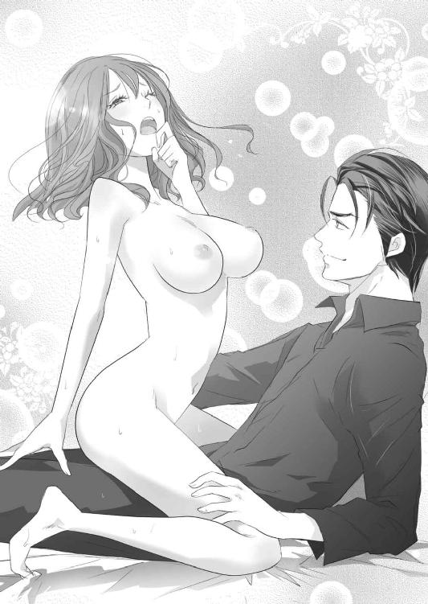
「自分で入れてみろ」
優しい命令に、美月は腰を落としていく。切っ先が蜜口を押し開き、ずるずると中に侵入してくる。
「ああぁぁあぁ......あぁッ！」
鼻にかかった媚びるような声が切れ切れに上がり、入れただけで達してしまった。びくんびくん、と全身が震え頭が真っ白になる。そして根本まで納めてしまうと、欲に濡れた溜め息が零れた。体の中が火傷しそうなほど熱い。蜜口は根元を締め上げて震え、中は欲望に絡みついて離さない。
「はぁ、あぁ......やすたか、さん」
名前を呼ぶと、引き寄せられ口付けられた。そのまま濃厚に舌を絡め合い、お互いの口中を貪る。
男の腰が下から突き上げるように動く。美月も自然と腰を揺らし、気持ち良い場所を切っ先に押しつける。その動きがどんどん激しくなり、あられもなく腰を上下に揺すった。
挿入で弾けた熱が、また下腹に集まりだす。理性は快楽に溺れ、羞恥心はどこかに流れていってしまった。獣のように交わることに、興奮が高まっていく。
「ああ、あぁ......もっとぉ......ッ」
抜き刺しでこすられる蜜口が、ひっきりなしに痙攣し、美月の息がどんどん上がっていく。一度、絶頂を迎えた中が、ずっと達した状態になり、気持ち良すぎて頭がおかしくなりそうだった。
「あぁんっ、あぁ......やあぁ、だめぇ！ 奥っ、あた......るっ！」
泰孝が、腰を摑んでぐっと下に押しつける。最奥を激しく突かれて、背筋がのけ反った。蜜口がひときわ大きくわななき、欲望を締めつける。
「ひっ......あぁ......あッ」
中で熱が弾ける。それと同時に美月も絶頂を迎えた。
がくん、と崩れる上半身を、泰孝に抱きとめられる。そのまましばらく、抱き合っていた。部屋にお互いの呼吸だけが響く。
先に動いたのは泰孝だった。美月の体を持ち上げ、果てた欲望を引き抜く。
満たしていたものがなくなる感覚に、蜜口が切なく震える。美月は、そそがれた熱が漏れてしまうのが嫌で、下半身に力をこめ眉根を寄せた。
「ベッドにいこう」
泰孝は、返事も聞かずに美月をさっと抱き上げる。もちろん、まだ愛し合いたかった美月は、返事の代わりに男の首に腕を絡めたのだった。
10
なんとなく、こうなるだろうと予想はしていた。していたけれど、現実を目の前にすると、締めつける胸の痛みにあふれた涙が、フローリングの床にぱたぱたと音を立てて落ちた。
泰孝は優しい男だ。そして危険だとわかっていて、自分の傍に引きとめてしまうぐらい、美月のことを求めてくれていた。それと同時に、自分から美月を引き離そうとも考えていたのだろう。今回の事件は、そのきっかけになった。
「なにが次は絶対助けにくるよ......噓つき」
だが、助けにくるというのは、傍にいるという約束ではない。遠くから見守っているという意味だったのかもしれない。それが泰孝なりの、美月に対する愛情なのだろう。
マンションに軟禁されている間に、泰孝とのこういう生活がずっと続いていくような気持ちになっていた。そんなはずはないのに、昨夜、激しく求められて現実を見失ってしまった。
もしかしたらそれが、泰孝の策略だったのかもしれない。
美月は崩れるように座りこみ、リビングのローテーブルの上にあった書き置きを引き寄せる。便箋が二枚あった。
男にしては細かい字で、事務的なことがつらつらと書かれている。知りたいのはそんなことではなく、ほしいのもこんな言葉ではない。腹立たしさと悔しさに嗚咽が漏れた。
テーブルには書き置きの他に、通帳と多すぎる当座の現金、ずっと取り上げられていたスマートフォン。そして就職先への紹介状だった。
思った通り、紹介されたのは東京から飛行機の距離の会社。物理的に遠くに追いやるつもりなのだろう。また、書き置きには信用できる良い会社だと書いてある。連絡先に電話して、紹介状を持って面接にいけばほぼ採用されるだろうと。
ご丁寧に、会社のパンフレットや給与体系などの資料まで添えられていた。それに加え、住むならどの辺がいいか、ここの不動産屋なら泰孝の名前をだせば良い物件を紹介してくれるとか、困ったことがあればこの人に頼れば世話をしてくれるなどというメモまである。
嚙みしめた唇が震え、大粒の涙がメモの上に落ちる。ボールペンで書かれた連絡先がにじんで、読みにくくなった。このまま文字が消えてしまえばいいのに......。
この現実も消えてなくなったら、どんなにいいだろう。
「至れり尽くせりじゃない......ここまでして私のこと捨てるなんて、ふざけないでよっ」
もっと他に書くことがあるはずだ。こんな業務連絡みたいな内容を読みたかったわけじゃない。
けれど、泰孝の文字を見られるのもこれが最後かもしれない。そう思うと、メモに落ちた涙を拭ってしまう自分がいた。
もう涙で濡れないようにと、メモと書き置きをテーブルの端に寄せる。銀行の封筒には、帯封がついた束が五つ。これは前に泰孝が、美月のアパートに置いていった口止め料の札束だろう。
これを当座にしろということらしいが、こんなに現金を使う用事なんてない。しかも美月名義の通帳には、都内一等地にファミリータイプの新築分譲マンションが買えるぐらいの金額が振り込まれていた。
そしてまた添えられたメモには、税金関係でわからないことがあった場合と、なにかで揉めた場合はここに連絡するようにと書かれ、税理士と弁護士の名刺が置かれてあった。
用意周到すぎる。美月が困らないように、先のことまでずっと考えてもくれていて、事務的なのに、全てのものがこんなにも愛してると告げていた。
なのに泰孝は傍にいない。美月が一番ほしいのは、こういう目に見える形の愛情ではないのに。
「なによっ......ひっくぅ、私のこと好きなくせして。許さないっ！」
大声を上げ、昂ぶった感情のままにローテーブルの上のものを腕でなぎ倒して落とす。帯封の切れた札は床に散らばり、通帳が部屋の隅へ滑っていく。
それをぼんやり見つめながら、美月は子供のように泣きじゃくり、床に手をついた。その時、書き置きの二枚目が視界の端に入る。
「幸せになれよ」と書いてある。「幸せになろう」ではないことが、胸に深く突き刺さり、美月は床に突っ伏し大声を上げ、涙がかれるまで泣き続けた。
それから泰孝のマンションには、二週間ぐらい居座り続けた。最初の一週間は、ふらっと男が帰ってくるのではないかと思い、部屋からでずにひたすら待ち続けていたのだ。
けれどやってきたのは不動産屋で、売却が決定したので来週までに退居してくれと言われ呆然とした。そういえば、部屋には男の荷物がほとんどない。あっても、捨ててしまっても構わないものばかり。
美月を置いてでていった時、必要なものは全て持っていってしまったのだろう。それか始めから、この部屋にそういった類のものはなかったかだ。
こんなところで待っていても意味がなかったのだと、やっと気付いた美月は悔しさと悲しさで、また一晩中泣き明かした。だが、ずっとうじうじしているのは性に合わず、翌日には外にでて泰孝を探し回った。
書き置きと一緒に置いてあった名刺や連絡先。勤めていたキャバクラ店、ノーブルの店長。そして繁華街を毎晩歩き続けて見つけた、泰孝の舎弟。当たれるところは全て当たって探した。
店長や舎弟は絶対に口を割らず、ＴＲ．ｃｏｍ本社にいっても当然門前払いだった。会社の駐車場で張りこんだ時は、警備員と警察まで呼ばれた。
田吹会にも突撃したが同じように追い返され、警察署ではヤクザにストーカーするなんて前代未聞だと呆れられ、こんこんと説教された。
そして警察に二回もお世話になっていて、実家に連絡されることも、実刑にならなかったのも、泰孝の弁護士が迎えにきてくれたからだ。美月が頼んでもいないのに弁護士がやってきたのは、泰孝が裏から手を回してくれたからとしか思えない。
ここまでしておいて姿を現さない男には正直、腹が立った。
もちろんあきらめられるわけがなく、わずかな手がかりでもほしくて、泰孝が紹介してくれた就職先にまで飛行機に乗って出向いた。紹介状を持ってたずねたが、やはり男と接点を持つことはできなかった。就職のことは丁重にお断りし、泰孝と関係がありそうな不動産屋にも足を運んだが結果は同じだった。
美月は落胆し、東京に戻ってきた。荷物はビジネスホテルに預け、泰孝と過ごした時間の多い繁華街を歩きながら、ノーブルの店長とあの舎弟をどうにか籠絡できないだろうか、真剣に考えていた。この際、色仕掛けだってなんだってしてやろうという気持ちになっていた。
陽の落ちかけた飲み屋の連なる繁華街は、まだ客の姿はない。開店準備に追われる店員が、店の前を掃除したり看板をだしたりと働いている。
もう田吹会の人間なら誰でもいい。それかいっそ、別の暴力団員と問題でも起こせば、泰孝がでてくるのではないか。そんな捨身な方法まで考えたところで、ふと、一か所だけ探しにいっていない場所を思いだした。
「そうだ......小夜さんのお店」
どうして今まで忘れていたのだろう。あそこは泰孝が懇意にしていた店。なにか情報があるはずだ。それに優しい小夜ならば、なにか教えてくれるかもしれない。
美月は半ば駆けるようにして、小夜の店の前にたどり着いた。だが、店の格子戸には、準備中の札ではなく、閉店のお知らせと売り物件の張り紙があった。
絶望感にその場に座りこみそうになったが、まだあきらめては駄目だとスマートフォンを取りだす。売り物件の文字の下に、不動産屋の電話番号がある。ここにかければ、小夜と接触できるかもしれない。
だが、その番号をダイヤルする前に着信音が鳴った。待ち受け画面を見れば、そこには「古賀しずく」の名前が表示されている。
珍しい名前に驚いてでてみると、開口一番『どこでなにしてるの！』という、これまたしずくにしては珍しい怒鳴り声が飛んできた。
「......しずく？」
『美月ちゃん！ なんで連絡くれないの？ 上条さんだってすごく心配しているのに！』
「え......あー、忙しくて忘れてたわ。ごめんなさい」
そういえば久しぶりに手にしたスマートフォンの電源を入れた時、幼馴染みの上条琴子から恐ろしい数の着信履歴とメール、留守電があった。
彼女は大学卒業後、転勤の多い国家公務員になり、今は関西にいる。昔から美月に対して好意というより、信奉に近い感情を抱いていて、たまに恐ろしく鬱陶しい時がある。
その上条になにも告げずアパートを引き払い、泰孝のマンションで軟禁され連絡もとれなかった。当然不審に思い、連絡をしてきたのだろう。
けれど泰孝を探すことに専念していた美月は、彼女からの連絡を無視していた。事情を話すのは難しいし、教えれば美月の信者のような上条が暴走して面倒なことになりそうだと思ったからだ。
そしてとうとう、無視されていると悟った上条は、しずくに助けを求めたらしい。
美月としずくは、元婚約者の智之のことで揉めた過去がある。色々あったが、最終的に美月の将来を思って示談を破談することに協力してくれたしずくとは、今やメールや電話でたまに話をする仲になっていた。
智之のことを考えると胸が痛くなることもあったが、そういったことを抜きにすると、自信を身につけたしずくとは割と馬が合った。美月の仕事の愚痴や、しずくの姑との付き合い方の相談などで、長電話をすることもある。
『それで、今どこに住んでるの？ アパートでボヤ騒ぎがあってからいなくなったらしいって、上条さんが半狂乱になってたわよ』
そこまで調べられていたかと、うんざりする。上条に連絡するのがどんどん嫌になっていく。
「......ちょっと、ストーカーにあってて。それでスマホの電源落としてたの。それから彼氏の家に匿ってもらってたから心配ないわよ」
あながち間違っていない噓をつくと、電話越しにしずくが黙りこむ。昔と違って食えなくなった彼女は、騙されてくれないかもしれない。
『わかった。そういうことにしとくけど......彼氏ってなに！』
聞いてないわよと、興奮気味の声が返ってきた。噓はどうでもいいらしい。
『好きな人できたの？』
期待と興味の裏に、一抹の不安を隠した声だった。
美月から智之を奪う形になってしまったしずくは、二人で話す時ずっと恋愛に関する話題を避けてきた。いつまでたっても恋人も好きな人もできない美月に、申し訳ないと思っていたのだろう。そして、ずっと心配もしていたようだ。
『その人、ちゃんと美月ちゃんのこと大切にしてくれる人？ どんな人？ 美月ちゃんのこと、誰よりも愛してる？』
畳みかけるようにでてくる質問に、苦笑いが漏れる。
智之を刺してしまったことで、自分は色んなものを失った。引き換えに手に入れたものもあったけれど、いつも自分一人で戦っている気になっていた。
だけど、こうやって見守ってくれていた友達がいる。そして本気で心配し、幸せを願ってくれていた。
「あのね......すごく愛されてるみたい」
ほっとしたように、息を吐く音が聞こえた。
「でも、捨てられちゃった。彼が一緒にいると、私が危険な目にあうからって、どっかいっちゃったの。どうしよう？」
捜しても会えなくて、と続けた声は涙にかすれて震えてしまった。しずく相手に、泣いたことはなかったから心配させてしまうかもしれない。でも、それでもいいかなと思えるぐらい、美月の心は弱っていた。
そして誰かに頼りたかった。
電話の向こうはしばらく無言だった。あれだけの説明では、なにがなんだかしずくもわからないだろう。だが、どこまで話せばいいか。うっかり暴力団関係のことには巻きこみたくない。
すると、しずくが落ち着いた声音で言った。
『たまには、待ってみたらどう？』
思ってもみなかった言葉に、ぽかんとする。そういえば、泰孝にも似たようなことを言われた。
『私さ、美月ちゃんに騙されてすごい酷いこと言われて、古賀家から逃げたじゃない。あの時、美月ちゃんに背中押されて、いつもの自分と違うことしたんだよね』
そういえばそんな酷い過去もあったわけだが、しずくはそれを〝背中を押された〟といつも言う。優しさだけではなく、本気でそう思っているらしい。
『美月ちゃんは、いつもほしいものにすごく貪欲で、そういう行動的なとこカッコいいなって思う。だけど、たまには攻めるばっかりじゃなくて、待つのもいいんじゃない』
しずくの言うことが、すうっと胸に入ってくる。前だったら反発したかもしれない言葉に、今は納得できた。
『なにも知らないでこんなこと言って、的外れかもしれないけど......いつも待ってばっかりだった私が逆のことをしたら、色んなことが変わったの』
相変わらず謙虚なままのしずくに、小さく笑う。経験者が語る言葉にはさすがに説得力があった。
『だから、美月ちゃんも逆のことをしたら変わるかもしれないじゃない』
そう、しずくが言い終わると、遠くで赤ん坊の泣く声が聞こえた。焦りだす一児の母である彼女に、早くいってあげてと言う。
「ありがとう。話せて良かった」
電話を切った美月は、一つ深呼吸をして肩の力を抜いた。
そうだ、たまには待ってみよう。追いかけて攻めて、結局、美月の初恋は実らなかった。追いかけられるほうだって、疲れるだろうし、嫌にもなる。
なら、待ってみるのも悪くない。追われてばかりいた獲物は、きっと油断するだろう。
「そうよね......罠を張って静かに待ちかまえる。悪くないわ」
清々しい笑顔でそう呟くと、横から声をかけられた。
「あら、あなたは......美月さん？」
捜していた小夜だった。彼女の後ろには、和服姿の男性が立っている。小夜より少し若く見える男性は、和服に似合わないクーラーボックスを肩から提げていた。
「小夜さんじゃないですか。閉店したって書いてあるから、もう会えないかと......」
「ええ、そうなのよ。最近はもう夜の営業がきつくてね。腰も患ったから、隠居することにしたのよ」
体は丈夫なほうだったが、さすがに年には勝てなかったと、小夜はくしゃりと愛らしく笑った。
「それでね。閉店はしたけど、まだ中を片付けてる最中なの。そうしたら、弟が最後にここで飲みたいって言いだして、今日は連れてきたところなの」
振り返り、白髪交じりの男性を紹介する。クーラーボックスには男性が釣った魚が入っていて、これからさばいて酒の肴にするそうだ。言われてみれば、彼の穏やかな笑顔は小夜と似ていた。
そこで美月は小夜と店を見比べ、ひらめいた。
「そうだ、小夜さん！ この店、私に譲ってくれませんか？」
身を乗りだしてそう言った美月に、小夜と男性が目を丸くする。そんな彼女に、バッグから取りだした通帳を開いて見せ、畳みかけた。
「これで、売ってください！ お願いします！」
11
「しばらく東京を離れたい？」
和服姿で自宅の縁側に正座していた藤沢が、肩越しに振り返る。手には、趣味で使う釣り道具がある。ちょうど手入れをしていたところだった。
養父にではなく田吹会の会長に会いにきた泰孝は、畳の上で正座を崩さずに返事をした。
「はい。後始末もだいたい終わりましたし、今回の事の発端になった俺が、ここにいるのは周りに示しがつかないかと思いまして」
「天野のことか......あれは、お前のせいではない」
藤沢は手元に視線を戻して言った。
「ですが、俺にまったく責任がないとも言えません」
天野の裏切りは、泰孝の曖昧な立ち位置が原因だった。
会長の藤沢の息子同然でありながら、後継ぎというわけではない。なのに一般人にならずにこの世界に入ってきて、会長の助けなしに今の地位までのし上がってきた。
泰孝はこの世界ではまだ年も若いが、人望もあって経済に強い。昔みたいに腕っぷしが強ければ出世できた時代とは違い、暴力団対策法ができた今はヤクザも頭を使ってする仕事になった。大手を振って、みかじめ料などのシノギを強引に稼ぐことは難しく、昔気質の天野は苦しい立場だったようだ。
そんな中、田吹会の名を隠して起業し、順調に業績を伸ばして資金をどんどん稼いでくる泰孝は、彼にとって脅威だった。弟のように可愛がっていた時期もあり、年長者としての面目もあったせいで、あからさまに敵視することもできず、無理に寛容に見せようとして鬱屈していった。
また、年下なのに天野を差し置いて若頭になった忍は、嫉妬の対象だった。それでも能力的に忍が勝っていることは理解していたので、我慢もできた。そして自分は次期若頭候補でもある若頭補佐の地位、しかも関東を預かる立場。実質、若頭に次ぐ地位であったため、なんとか気持ちを落ち着かせることができた。
だが、その忍と泰孝の仲が良いことにはやきもきしていた。二人は、泰孝がヤクザになってからの付き合いだが、年も近く非常に馬が合っていた。兄弟という関係に近いが最近は疎遠気味の天野より、親密な関係であった。
もしかしたら、今いる若頭候補を押しのけ、次期若頭になるのは泰孝ではないか。それどころか、藤原の気まぐれで泰孝が次期会長に指名されることもある。
会長が自分ではなく忍を若頭にしたのは、将来的に泰孝に座を譲った時の補佐にしようと思ったからではないか。そしていつか、忍と意見が対立しやすい自分は、今の地位から追いやられる。という妄想が天野を支配するようになっていったらしい。
そんな時に、藤沢が気まぐれに会長を退任すると言いだしたせいで、天野は自分の妄想が間違いではなかったと妄信し、泰孝を排除しなければ自分の将来はないと思いこんだ。そのことによる暴走が、今回の一連の事件を巻き起こしたと言っていい。
「ふんっ、生意気なこと言うようになったもんだ」
小声での呟きには、父親らしい優しさと呆れがにじんでいた。手入れの終わったリールを縁側に置くと、藤沢はすっと背を伸ばした。
「お前みたいな若造に、責任があるなんて言われたら、天野も腹が立つだろうよ。あいつのほうが年長者なんだから、立ててやる配慮ぐらいしろ」
その言葉に泰孝はハッとさせられ、思わず畳に手をついた。
「すみませんっ」
まるで自分のほうが上で、天野に対して責任がある立場のような言い方だった。こういう何気ない言葉や態度で、彼を傷付けてきたのかもしれない。
「私に謝っても意味がない。やっぱりお前は、この稼業に向いてないな。優しすぎる」
いつもこんな稼業は辞めろ辞めろとどやすのに、溜め息混じりの言葉は、どこか残念そうに聞こえた。
「今回、なにが悪いというなら、あいつの立場や気持ちをわかってやれなかった私の配慮のなさだ。だからといって、して良いことと悪いことがある。思いとどまることができなかったのは、天野の器の小ささのせいだ」
泰孝は唇を引き結び、視線を畳に落とす。傾きかけた日が差しこみ、最近張り替えたばかりだという青い畳を黄色く照らしていた。
「......あの、天野さんの処分はどうなったんでしょうか？」
今日ここにきたのは、これを聞きたかったからだ。東京を離れたいという希望を伝えるのはついでだった。
美月誘拐の件の後、天野は警察に突きだされることなく田吹会に連れ帰られ、やったことを洗いざらい吐かされた。その後は、追って処分を言い渡すまで自宅謹慎で、逃げないように見張りがついている。
「天野は今回のことで、色々とやりすぎた。舎弟会でも話し合ったが、除名することに決定した」
舎弟会というのは、会長の舎弟たちである相談役や舎弟頭の集まりである。会長の子分である泰孝たちの立場からすると、小父貴にあたる人たちだ。
彼らには跡目相続権や組内のことに対して発言権はあまりないが、こういった時の相談相手となる。また若頭になるために、口添えをしてもらったりする相手でもあった。
「除名ですか......」
「重い処分だと思うか？」
除名は、再び組に戻ることもできる可能性のある破門より重い処分で、もう二度とこの世界には戻ってこられない。
ずっとこの世界で生きてきた天野にとっては、今更、一般社会に戻るのは大変なことだ。これから普通の仕事に就くのは難しいことだろうし、場合によってはヤクザをしていた間に買った恨みで、報復をされることもある。
宗山組のことを考えると、除名後の天野が無事に過ごせる保障はない。
だが、今回の件で天野は、宗山組の覚せい剤を盗んだ上に売りさばき、その罪を泰孝になすりつけようとした。挙げ句、泰孝を騙して宗山組と事をかまえさせようとし、一歩間違えば抗争の火種となるところだった。
「......妥当だと思います」
泰孝は硬い表情で、膝の上に置いた拳を強く握りこんだ。
天野との良い思い出はたくさんある。それを考えると、彼の今後を辛く思う。けれど組を裏切るような行為をした彼を、かばうことはできない。
それに、美月にしたことを許せなかった。
「だがまあ......宗山組も勘違いで私の息子を撃ったからな。天野のことは、それで手打ちにすることになった」
思いがけない落としどころに驚いて、泰孝は顔を上げた。こちらに向かって正座し直した養父は、飄々とした顔つきでそれ以上はなにも語らない。
藤沢は「息子」と言った。宗山組に「うちの幹部」ではなく、会長の息子を誤って撃ったと責めたようだ。いささか公私混同ではあるが、それは宗山組にとってはいい脅しになっただろう。
天野のしたことなど、宗山組の暴漢がしたことに比べたら大したことがない。一般社会で出直す天野が、宗山組から報復される恐れはこれでなくなるだろう。
泰孝は「ありがとうございます」という言葉を飲みこんだ。
許せないと思うところはあるが、天野に不幸になってもらいたいとは思っていない。そんな泰孝の複雑な気持ちを、養父はさり気なくくんでくれたのだろうか。または、今まで組を支えてきてくれた天野に対する、恩情だったのかもしれない。
「それで、東京を離れてお前の会社はどうするんだ？ 放りだすのか？」
「ああ、それでしたら今はネット会議などもできますので、俺が東京にいなくても仕事は滞りなくおこなえます。実際に俺が出向かないといけない時だけ、東京に戻ってこようかと思ってます」
そもそも泰孝がいなくても、会社は回るようにはしてある。ある程度まで育ったら、他の人間に任せて、泰孝は別の会社を立ち上げようと考えていたところだった。
なのでこれを期に、東京を離れて新しく起業するのも悪くないと思っていた。
「いまどきはなんでもネットネットと......面白くない」
会社のことがあれば、東京から離れられないと思っていたらしい藤沢は、不貞腐れた顔で和服の袖口に手を突っこむ。
「あのそれで、東京を離れても......」
「駄目だ駄目だ。誰がそんなこと許すか」
とたんに不機嫌になってしまった藤沢は、駄々をこねるように首を振った。
「お前はここにいなさい。なにが周りに示しがつかないだ。そんなことで怯むような玉じゃないくせに、噓をつくな！」
茶化しているような物言いだが、最後に声を張られて胸がどきっとした。その一瞬の動揺を見抜いた藤沢が、にやりと笑う。
「お前、女から逃げているそうじゃないか？ 情けないな。それで東京から逃げるつもりなんだろう」
さすがに藤沢の耳にも入っていたようだ。泰孝はうっと言葉をつまらせる。
「しかも逃げ回ってはいるが、若い衆に女の動向を逐一報告させて、面倒事に巻きこまれないように手を回したり、弁護士を派遣してやったりしてるそうだな」
「......若頭から聞いたんですか？」
苦々しい表情の泰孝に対し、藤沢は実に楽しそうだ。
「忍はなにも言わないが、あれだけ騒いでたら耳にも入ってくる」
美月が事務所にやってきた時のことだろう。騒ぎになる前に舎弟に追い返させたが、あまりお目にかかれないような美人なので、「すごい美女が乗りこんできた」と噂になってしまった。
あれから三カ月ほどたち、美月が泰孝の周囲をうろつくことはなくなった。紹介してやった会社での就職を断ったことも聞いている。その後、東京に戻ってきた彼女は、自力で就職したと舎弟から報告が上がってきた。
ようやくあきらめてくれたかと、ほっとしたような寂しいような気持ちだ。だが、このまま東京にいればどこかで出会ってしまうかもしれない。
そうなった時、泰孝は自分の気持ちを抑える自信がなかった。
「ともかく、東京を離れることは許さん。どうしてもって言うなら、田吹会からは除籍しろ」
破門や除名と違い、除籍は自ら組を脱退することだ。特に過失のない泰孝を破門になどできなので、ことあるごとに藤沢は除籍を勧めてくる。
この場合、勝手に東京を離れるようなことをすれば、会長の意に逆らったということで破門にされることだろう。どうしたものかと嘆息すると、藤沢がさも良いことを思いついたというように、嬉々として言う。
「そうだ。除籍して、その女と結婚したらどうだ？」
「そ、それは......できませんっ」
突然、なにを言いだすのか。動揺に言葉がどもってしまった。
それを見て、藤沢はにたりといやらしい笑みを浮かべた。
「なぜだ？ できないわけがないだろう。だってお前、彼女を今回みたいなことに巻きこみたくないから、逃げ回っているそうじゃないか」
誰に聞いたのか知らないが、嫌なところをついてくる。
「だが、お前が除籍してこの稼業から手を引けば、問題ない。彼女と一緒になっても、危ないことには巻きこまれないだろう」
藤沢の言う通り、よほどのことがない限り、今回のような騒動は起きないだろう。わかってはいるが、今の生き方をそうすぐに変える勇気がない。
それに泰孝とて、汚い仕事をしたことがないわけではない。いらぬ恨みも買っている。除籍したせいで、報復されることもあるだろう。
それを考えると、除籍したからといって美月と一緒にはなれない。むしろ今の地位を失うことで、守りきれなくなる。それならいっそこのまま、陰ながら彼女を見守るほうがいいと判断しただけだ。
「フンっ、どうせ怖いのだろう？ だからあれほど、この世界に入ってくるなと言ったんだ」
沈黙する泰孝の心を読んだかのような藤沢の言葉に、奥歯を嚙みしめる。若い頃の自分の浅はかさを、少しでも後悔しなかったかといったら噓になる。
もし普通の人生を歩んでいれば、こんな葛藤をすることもなかっただろう。好きな女性と結婚して、ありふれた幸せを享受していたかもしれない。
だが、美月に出会うことはなかった。
そうしたら彼女は今もまだ自分の過去を思い悩み、一人で苦しんでいたかもしれない。手を差し伸べてやることさえできなかっただろう。だから一緒になれなくても、彼女に出会えない人生に比べたら、今のほうが何倍も幸せだと思ってしまうのだ。
「......この世界に入ったこと、後悔なんてしてませんよ」
それが泰孝のだした答えだった。視線を上げ微笑むと、藤沢は口をへの字にして不貞腐れた。
「どうしようもない、意地っ張りだな。ああ、もういい。今日はもう、この話はやめだやめ」
自分の思い通りにいかなくなったとわかったとたん、藤沢はぶつぶつ文句をぼやきながら釣り道具を片付け始めた。
「では、俺はこれでお暇いたします」
このままここにいて酒の誘いに乗れば、また同じ話で絡まれる。逃げてしまおうとしたところで、藤沢が言った。
「待て。今日は姉の店が新装開店する。オープン記念で少し早目に開店するから祝いにいくぞ。お前も世話になってるんだから、挨拶に顔をだせ」
「そういえば閉店するはずだったのが、知り合いの女性に譲ることになったとか？」
「ああ、そうだ。だから正確にはもう姉の店ではないが、気が向いたら手伝いに入ることもあるそうだ。今日はオープンで人も多いだろうから、姉も手伝いにいっている」
だからお前も挨拶しろと言う養父に、泰孝は逆らえなかった。養父の姉は伯母のような存在で、子供の頃から世話になっている。泰孝のマンションにも、新装オープンを知らせる葉書がきていた。
どのみちオープンしたら一度、挨拶にいこうとは思っていた。新しく店を切り盛りする女将にも興味がある。それに堅気の人のいる店で、除籍しろだなんだという話にはならないだろう。
泰孝は養父に先導されるまま車に乗り、新しくなった小料理屋つきみに向かった。着いてみると店は、以前の趣を残したまま外装を新しくし、若返ったように見えた。
たくさん並んだ祝い花を横目に、養父の後に続いて暖簾をくぐる。店内も一新されてはいたが、前の雰囲気は残したままモダンな感じになっていた。以前が温かみのある暖色系の内装だったのに対し、こちらはベージュや若草色を中心とした爽やかで落ち着いた色調だった。
「いらっしゃいませ。ようこそ」
よく知る小夜の声と笑顔で迎えられる。開店したばかりの店内は、満員ではないが賑わっていた。仕事帰りのサラリーマンだろうか、陽気な笑い声が聞こえてくる。
奥の座敷席に視線をやると、薄桃色の着物の背中が見えた。
思ったより若い後ろ姿だ。小夜の知り合いだというから、てっきり中年ぐらいだと勝手に想像していた。
「......あれ？」
座敷で客と話していた女性が立ち上がる。すっと伸びた背筋に、白くて細い、折れてしまいそうなうなじ。華奢だけれど、どこか凛としたその後ろ姿に見覚えがあった。
顔が引きつり、一歩後ろによろける。そんな泰孝の腕を、隣に並んだ養父ががっちりと摑んだ。
「逃げるなよ」
楽しげだが威圧感たっぷりの声と同時に、女性がこちらを振り返った。
「いらっしゃいませ」
小走りでこちらに駆けてきた女性は、泰孝の前で立ち止まり、小首を傾げて花がほころぶように微笑む。
美月だった。
罠にはめた隣の養父を睨みつけると、視線をそらされる。
どうやら、舎弟の「美月が自力で就職した」という報告は噓だったようだ。たしかに自力なのかもしれないが、自営業でしかも小夜の店を引き継いだという事実は、藤沢あたりによって隠されたのだろう。泰孝の舎弟であっても、田吹会の会長である藤沢に命令されれば噓をつくのもしかたがない。
「お久しぶりね」
「......な、なんでここにいるんだっ」
「あなたにもらったお金で、ここを買い取ったからよ」
「そうじゃなく......」
反論しようとするが、笑顔で言葉をさえぎられる。
「自営業なら、私の過去をとやかく言う同僚はいないわ。キャバクラで働くより身の危険も少ないし、自分のペースで仕事ができる。それに私、けっこう接客業は好きなのよ。料理にも自信があるわ」
美月の言うことは一理ある。自分が起業してしまえば、解雇されることもない。
「でもだからって、なんでここなんだっ！」
「怒鳴らないでくれる？」
客の視線がいっせいにこちらに向く。美月は泰孝をひと睨みすると、店内を振り返ってにこやかに「すみません。お気になさらず」と軽く頭を下げる。
そして泰孝に向き直ったが、その顔に笑顔はなく、冷やかな声で言った。
「私がどこで働こうが自由よ。あなたにとやかく言われる筋合いはないわ。それともなに？ 私がここで働いていてたら困るわけ？」
「いや......だから、俺の傍にいたら......」
急に雰囲気の変わった美月にたじろぐ。たしかに泰孝がなにか言う権利などなくて、言葉を探すうちにまた彼女にさえぎられた。
「自意識過剰なんじゃない？ 別に、あなたを追いかけてここで働いてるわけじゃないから」
想像していなかった返しに、胸に衝撃が走る。痛い。とても痛い。
強がって言っているだけだとわかっているのに、自意識過剰と突っぱねられたことが辛すぎて、言葉がでなかった。
「自分に合った仕事を探してる時に、たまたま小夜さんのお店が閉店することを知って、自営業をしようって思いついただけだから。知ってる街だから土地勘もあって安心だし、味を落とさなければ小夜さんが築いた客筋を譲り受けることができるでしょう」
そうなれば商売としてやっていける。切り盛りできる。その自信もあると言いきる彼女に、「美月ちゃんならできるわ」と小夜からの援護まで飛んできた。
泰孝も、美月ならうまく店を回していくだろうなと思った。
「あなたは私に関わり合いたくなければ、ここにこなければいいのよ」
また衝撃が走る。今度は頭を殴られたような気がした。
あれだけ人のことを追い回しておいて、今更この態度はなんなんだ。その落差に、泰孝は自分でも驚くほど動揺していた。
「嫌なら、帰ってちょうだい」
美月が今まで見たことがないくらい美しく微笑み、泰孝の背後の格子戸を指さす。隣で聞いていた藤沢は、喉の奥で笑いを嚙み殺しながら、泰孝の腕を解放した。
「私は飲んでいく」
そう言って、藤沢はカウンター席に腰かける。美月はというと、養父の前におしぼりを置いてカウンターの中に引っこんでしまった。
格子戸の前に残された泰孝は、ぽかんとして突っ立っていた。誰も引きとめてもくれなければ、席も勧めない。小夜もカウンター内で忙しなく料理をしている。
しばらくして来店した客に、邪魔だと言われ、流れで藤沢の隣に腰かけた。すぐにおしぼりがでてくるが、美月の態度は素っ気ないもので話しかけてもこない。
「あれは手強いぞ」
先に熱燗で一杯やっていた藤沢が小声で言う。
「お前がどんなに突き放しても、あの手この手で迫ってくる。肝も据わっているし、頭の回転も速い。その上、美人だ」
「他人事だと思って......楽しそうですね？」
いやいや、と藤沢が首を横に振る。
「他人事じゃない。私の反対押し切って、勝手にヤクザになったお前とそっくりじゃないか」
そう言われて、泰孝は苦々しい気持ちになった。養父から見た自分は、こんなだったのかと......。
「どうだ、少しは私の気持ちがわかったか？」
藤沢は気分がいいと言いながら、杯を重ねていく。その隣で、泰孝は頭を抱えた。
危険なことに巻きこみたくなかったら、美月が言う通り、自分が金輪際ここに立ち寄らなければいいだけの話なのだが、それができる自信がない。
ちらりと盗み見た美月は、カウンター越しに男性客と談笑している。さっきからその客に、連絡先を教えてくれとしつこく迫られながら、またいらしてくれれば会えますよと笑顔でいなしていた。
それを見ているだけで、苛々してしかたがない。ノーブルの時みたいに、美月を独り占めしたいところだが、それはできないだろう。なにしろ今度は泰孝の舎弟ではなく、美月が経営者なのだから。これでは手がだせない。
毎晩通い、他の客が美月に手をだせないようにするべきかと、思いつめたところでハッとして椅子から立ち上がった。これでは美月の思う壺だ。
早くここから離れて冷静にならないと、絡めとられて元の木阿弥になる。せっかく突き放した意味がなくなってしまう。
「なんだ？」
「帰る」
泰孝は短くそう言い残し、早足で店をでる。だが、すぐに背後で格子戸が開き、ぎゅっと袖を摑まれた。
振り返ると、さっきまで泰孝の視線など無視していた美月が唇を尖らせ睨みつけている。まるで泰孝が悪いとでも言いたそうな目に見上げられ、どぎまぎする。
「な、なんだよ？」
「はい、忘れ物」
ぽん、と胸に押しつけられた紙袋を思わず受け取ってしまう。
「こんなの忘れてないぞ」
返そうとするが、美月は受け取らない。代わりに拗ねたような表情で言う。
「どうせすぐに帰っちゃうと思ってたから、サンドイッチ作っておいたの。良かったら家で食べて。嫌なら捨ててもいいのよ」
捨てるわけがない。捨てられるわけもない。
まるで初めて恋をした子供みたいに、心臓がどきどきいう。いつの間にか握られていた指が熱く、くすぐったい。
「パンも焼いたのよ。前に美味しいって言ってくれたでしょ。だから、また食べてもらいたかったの」
うつむき加減で伝えられた言葉に、気持ちがぐらぐら揺れる。だが、そんな泰孝の気持ちを弄ぶように美月が顔を上げて言った。
「じゃ、それだけだから。ありがとうございました～」
最後のありがとうは営業用の明るい口調で、その切り替えの速さに驚いている間に、格子戸をピシャリと閉められた。泰孝はしばし茫然とした。
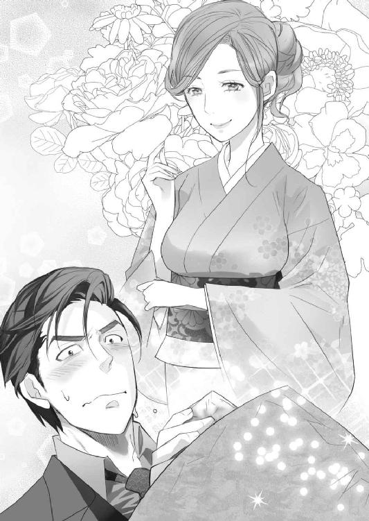
なんなんだ。本当にどういうつもりなんだ？
こんな放りだされ方をしたら、気になってどうしようもない。このまま帰っても美月のことしか考えられないだろう。酷い罠だ。また店に戻っても同じことだ。
ふと、押しつけられた紙袋を見下ろす。
これを食べたら、お終いだろう。なんてものを渡すのだ。
さしずめ、魔女の作った毒林檎といったところか。一口食べただけで、ころりといってしまうだろう。
泰孝はしばらく小さく唸り声を上げながら、悶え苦しんだ。だが結局、いい答えなどでるわけがない。どっちに転んでも、美月のことが頭から離れないのはわかっていたからだ。
駄目だ駄目だ。これは罠だと思いつつも、泰孝は格子戸にかける手を止められなかった。そして開いた格子戸の隙間から、美味しそうな毒林檎の匂いがした。
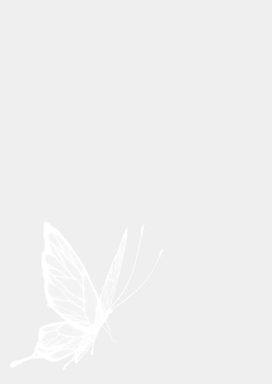
あとがき
こんにちは青砥あかです。
今回の物語は、前作『王子様は助けに来ない』に悪役として登場していた美月がヒロインです。スピンオフということになりますね。
実は、私はこういう性格のきついタイプの女性キャラが好きです。ヒロインとしては失格かもしれない性格ですが......実際、このタイプのヒロインはボツになりやすいので書けないんですよね。なので空気を読んで、よく脇役などに配置しています。それが今作ではヒロインとして、思いっきり書けてとても楽しかったです。
しかも美月は、ヒーローに吐きかけるし、執行猶予中だし、車に火をつけるしで、駄目だろこのヒロインって書きながら思ってました。でも楽しかったです。
書き上げてからも、これすごい直し入るんじゃ......とびくびくしてたのですが、懐深く受け入れてもらえてほっとしました。しかも書籍化までしてもらえるとは思ってなかったので驚きです。前作にも、虐待シーンなどがあるので、あれもよく書籍化したなって思ってます。書籍化のお話がきた時も、担当さんに何度も「え？ いいの？ 大丈夫なの？ 引っかからない？」と何度も聞いてしまいました。
元が電子書籍なので、多少そういうとこが緩い感じもあって好き勝手書かせてもらえた二作品だと思っていたので、こうして本になるのはとても嬉しいです。
ちなみに、前作と今作の間には、番外編的な感じのお話が電子書籍であります。前作ヒロインのしずくを中心に、いろいろなキャラの視点から見た、前作のその後です。そこから繫がっていくので、美月としずくの関係性がいきなり飛んでしまって、違和感を持つ方もいらっしゃるかと思います。簡単ですが説明を入れて（単体で読んでもわかるように）、なるべく違和感がないよう繫いだつもりですが......気になってしまった方には、申し訳なく思います。
このような作品ですが、少しでも楽しんでいただけたなら幸いです。
青砥あか
Story
青砥あか
あおと あか
2月26日生まれ。魚座。東京生まれの東京在住。主婦のかたわら執筆活動中。引きこもるのが好き。
2010年、第一回らぶドロップス恋愛小説コンテスト最優秀賞受賞。受賞作『S系執事と恋レッスン』で電子書籍デビュー。
書籍では『王子様は助けに来ない』（竹書房蜜夢文庫）、『甘い復讐 淫らな鉢』（新潮社プリシラブックス）や『王宮医官と若奥様』（プランタン出版ティアラ文庫）などを刊行。
Illustration
炎かりよ
ほのお かりよ
好きなものは猫と揚げ蒲鉾。
趣味はロードバイクです。
【お仕事情報】
twitter:＠kariyohq
<https://twitter.com/kariyohq>
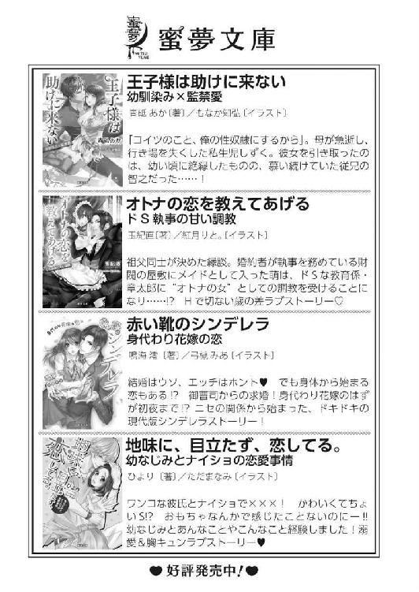
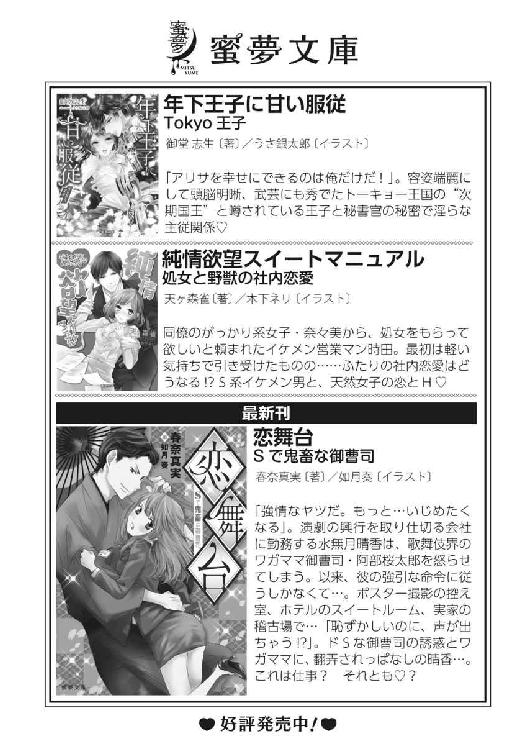
極道と夜の乙女 初めては淫らな契り［電子書籍版］
発行日 ２０１５年12月１日 発行
著 者 青砥あか
デザイン 百足屋ユウコ＋しおざわりな（ムシカゴグラフィクス）
発行者 後藤明信
発行所 株式会社竹書房
〒１０２－００７２
東京都千代田区飯田橋２－７－３
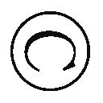Aka Aoto 2015
本書の一部あるいは全部を著作権者および株式会社竹書房に無断で複写・複製すること、および放送・上演・公衆送信（ホームページ上への掲載を含む）などは、法律で認められた場合を除き著作権の侵害となります。